260/262 images · generated with gpt-image-1 (medium) · total spend $12.68 · scene cards are shown cropped to 16:9 exactly as in the app; spreken pictures are shown whole.
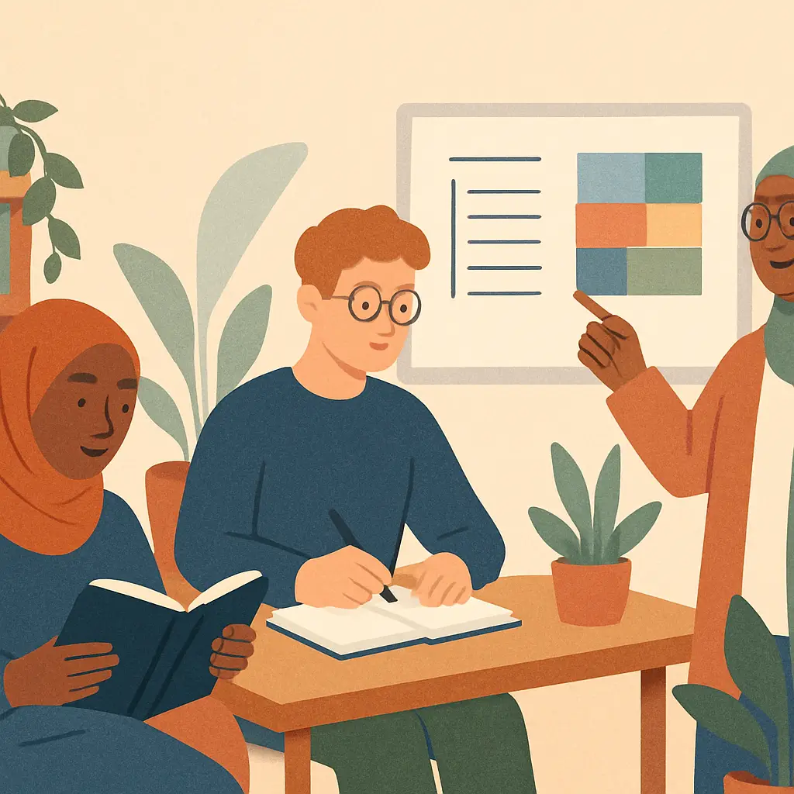
a2/lezen/exam1-tips_leren minorTips om goed te leren Iedereen leert op zijn eigen manier. Toch geven we u een paar tips om beter te kunnen leren. 1. Begin met het maken van een planning: wat gaat u wanneer doen? Elke dag een beetje leren is beter dan alles op één dag leren. Lees op verschillende dagen dezelf…
Q: Jamie heeft volgende week een belangrijk examen. Wat moet hij volgens de tekst het eerste doen? / Wanneer kan je volgens de tekst het beste leren? / Noa weet niet hoe hij het beste kan leren. Welk advies kan je hem geven?
alt: Drie mensen leren samen in een rustige studeerkamer
audit: minor — The image shows a diverse group of three people in a cozy study room with plants and a study plan on a whiteboard, matching the brief well. However, the soft lighting that creates a calm atmosphere is not clearly depicted.
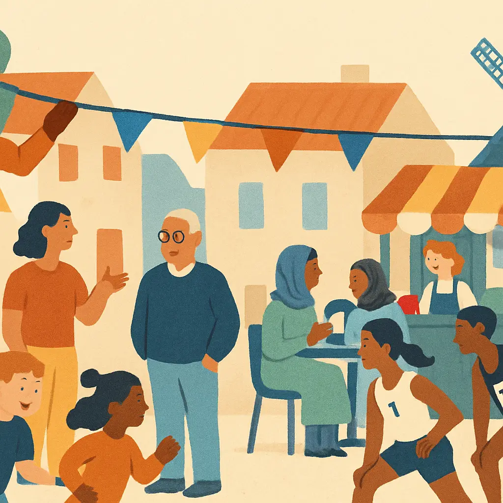
a2/lezen/exam1-hardloopwedstrijd minorAan de bewoners van het dorp Onderwerp: Jaarlijkse hardloopwedstrijd Wij willen u met deze brief informatie geven over de jaarlijkse hardloopwedstrijd in ons dorp. Ook willen wij u vertellen wat er die dag anders is voor het verkeer. We willen dat alles zo goed mogelijk gaat en…
Q: Waarom krijgen de dorpsbewoners deze brief van Piet Jansen? / Gaston woont in de Flamingostraat. Wanneer moet hij zijn auto weghalen op zaterdag 13 juni?
alt: Dorpsplein met mensen en hardlopers voor een wedstrijd
audit: minor — The image shows a lively village square with people of various ages, decorations, a café, children playing, and runners stretching, matching the brief well. However, it lacks textual details from the letter such as the date, time, and traffic instructions.
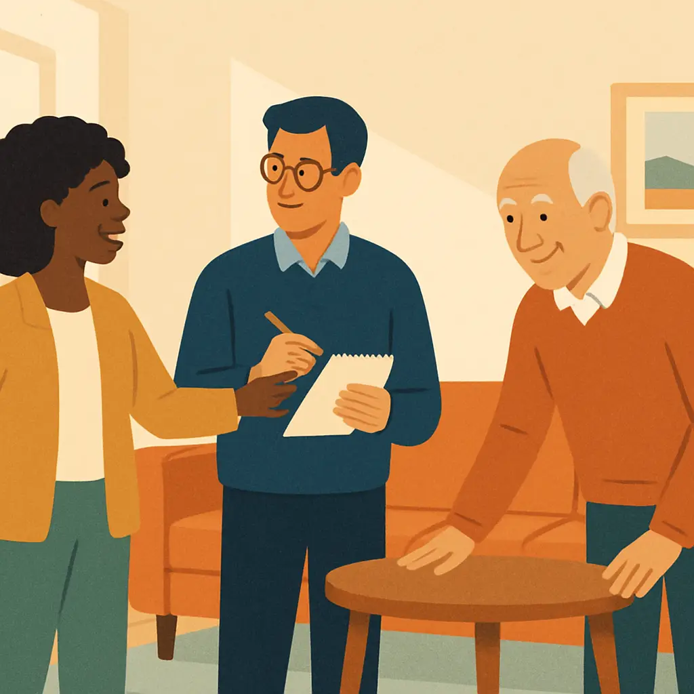
a2/lezen/exam1-transportservice minorVerzamel- en transportservice Hebt u meubels gezien die u wilt kopen? En wilt u dat wij deze meubels bij u thuisbezorgen? Dan kunt u gebruikmaken van onze transportservice. Hoe werkt het? U maakt een lijstje met de meubels, op internet of in onze winkel. Wij verzamelen deze meu…
Q: Modibo woont in een flat, op de tweede verdieping. Hij heeft een tafel van 20 kilo gekocht. Hij wil deze tafel thuis laten bezorgen. Wat moet hij hiervoor betalen? / Thérèse wil meubels thuis laten bezorgen. Ze wil weten hoe laat de meubels bezorgd worden. Wanneer kan zij dat vragen?
alt: Drie mensen in een woonkamer met meubels
audit: minor — The image shows three people in a living room with furniture, one pointing at a sofa, another taking notes, and an elderly man examining a table, matching the main situation. However, sunlight and more furniture variety are not clearly visible, and the transport service aspect is implied but not explicit.
a2/lezen/exam1-kanovaren minorBeste collega, Op vrijdag 9 mei gaan we met het bedrijf kanovaren! Jan van 'Botenverhuur de Rijnstroom' wacht op ons om half 11 in Utrecht. Adres: Rhijnauwen 2. Om half 12 is er lunch met een kop koffie of thee. Om half 8 eten we een pannenkoek bij het pannenkoekenhuis. Je hoef…
Q: Wat moet Sabrina meenemen naar het personeelsuitje? / Sabrina wil weten of haar man ook mee mag. Aan wie moet ze dat vragen?
alt: Collega's bereiden zich voor op een kanotocht
audit: minor — The image shows a group of diverse colleagues by a riverbank with a canoe, paddles, and a picnic basket, matching the brief's main situation. However, it lacks textual or visual details about the schedule, location, or instructions from the message, which are important for full context.
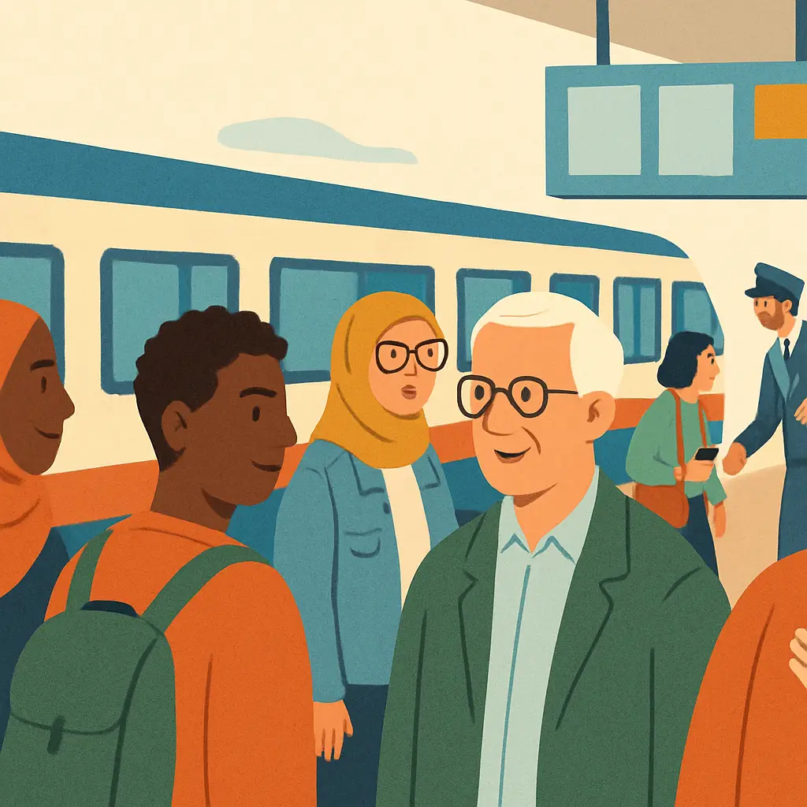
a2/lezen/exam1-tas_vergeten minorAan: j.degraaf@werk.nl Onderwerp: Tas vergeten Hoi Jasper, Ik zit nu in de trein van mijn werk naar huis en merk dat ik mijn tas ben vergeten! Hij staat nog op mijn bureau. Wil jij hem misschien ophalen en naar de portier brengen? Dan haal ik mijn tas daar morgen op. Het is ee…
Q: Waar is de tas van Suzanne? / Wat zit er in de tas van Suzanne?
alt: Drukke trein station met reizigers op het perron
audit: minor — The image shows a diverse group of commuters at a train station platform, matching the brief's main situation. However, the train is not clearly arriving, and the station attendant is not visibly helping with luggage. The specific details about the yellow backpack and its contents are not visible.
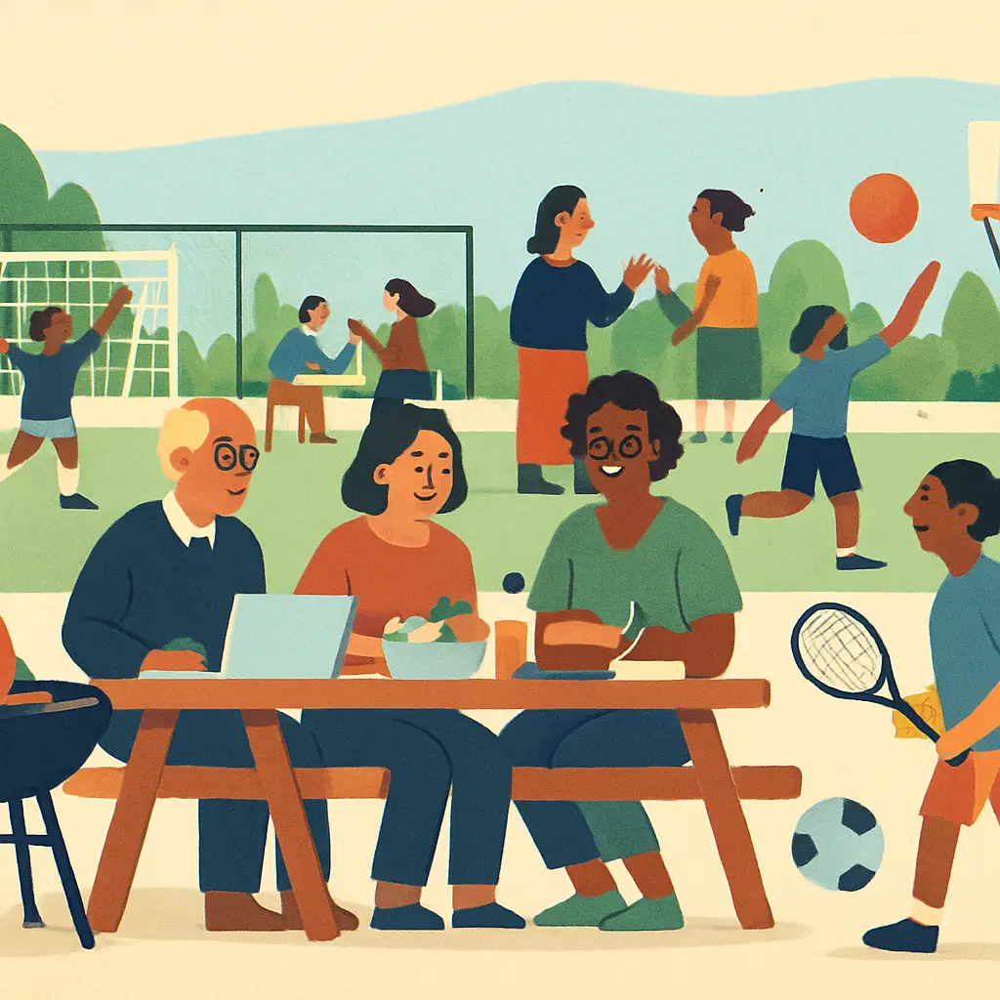
a2/lezen/exam1-sportdag minorBeste buurtbewoners, Op 9 juli is onze sportdag in het Sportpark in Amsterdam. Wilt u om 9 uur op het veld zijn? Dan kunnen we op tijd beginnen. We beginnen om half 10 met een tennistoernooi. U kunt 's ochtends ook kiezen voor basketbal. Daarna hebben we lunchpauze. U moet zelf…
Q: Vandaag is de sportdag. Halima doet mee. Wat moet ze meenemen? / De kinderen van Halima doen 's middags mee met de sportdag. Welke sport gaan ze doen? / De man van Halima kan niet meedoen met de sportdag. Hij wil wel mee barbecueën. Wat moet hij doen?
alt: Gezellige sportdag in het park met spelende kinderen
audit: minor — The image shows a lively sports park with families playing various sports and people at picnic tables, matching the brief well. However, it lacks specific details from the text such as the exact sports scheduled, lunch and beverage info, payment and registration details, and instructions about changing clothes.
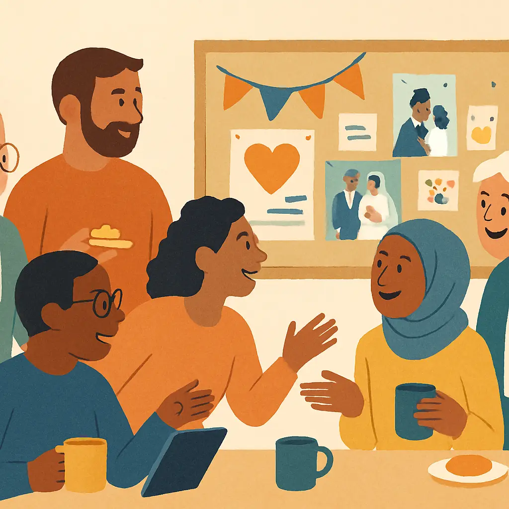
a2/lezen/exam1-bruiloft minorBruiloft Nadia en Richard Beste collega's, Volgende week vrijdag is de bruiloft van Nadia en Richard! Daarom hebben we een feestcommissie opgericht. De feestcommissie bestaat uit William, David en Elise. We hebben alle drie een taak, zodat we er een leuke dag van kunnen maken! …
Q: Michael wil met de bus mee naar de bruiloft. Bij wie moet hij zich opgeven? / Welk cadeau gaan de collega's samen geven aan Nadia en Richard? / Waarom stuurt de feestcommissie deze e-mail vooral?
alt: Collega's bespreken een bruiloft in de pauze
audit: minor — The image shows a lively office break room with colleagues chatting and wedding-themed decorations on a bulletin board, matching the brief well. However, specific details like names, the bus, and the gift list are not visible, which are important for full context.
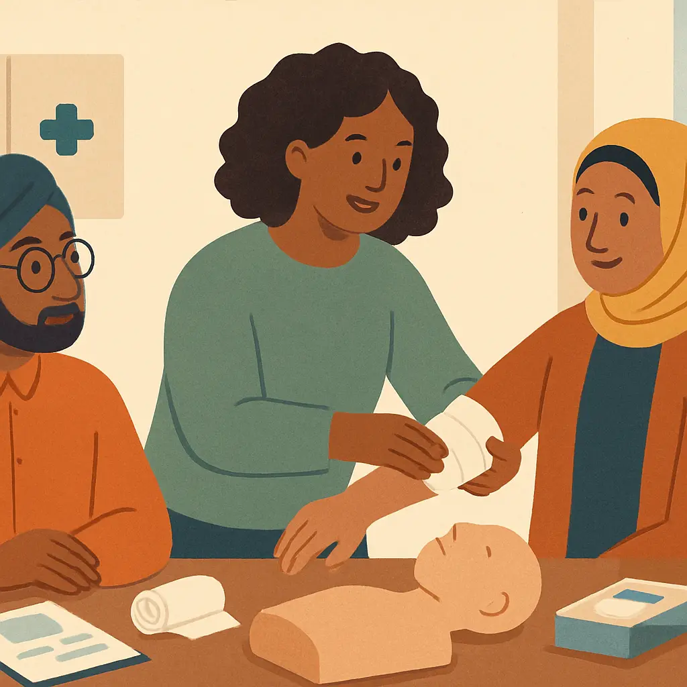
a2/lezen/exam1-ehbo minorEHBO De Groene Cirkel EHBO betekent: Eerste Hulp Bij Ongelukken. Als EHBO'er kunt u helpen als er een ongeluk gebeurt. Bijvoorbeeld als uw buurjongen valt en zijn arm breekt. Of als iemand zich snijdt bij het eten maken. U kunt bij ons verschillende EHBO-cursussen volgen. U haal…
Q: Myra geeft les op een basisschool. Ze wil een EHBO-cursus volgen die past bij haar werk. Welke cursus is het meest geschikt voor Myra? / Aylin wil leren reanimeren. In hoeveel bijeenkomsten leert zij dat? / Ronald wil zoveel mogelijk verschillende dingen leren over EHBO. Welke cursus kan hij het beste kiezen?
alt: Drie mensen leren eerste hulp in een klaslokaal
audit: minor — The image shows three people practicing bandaging on an arm with a mannequin on the table, matching the main situation. The classroom is not clearly modern or bright, and the variety of first aid supplies is limited in view.
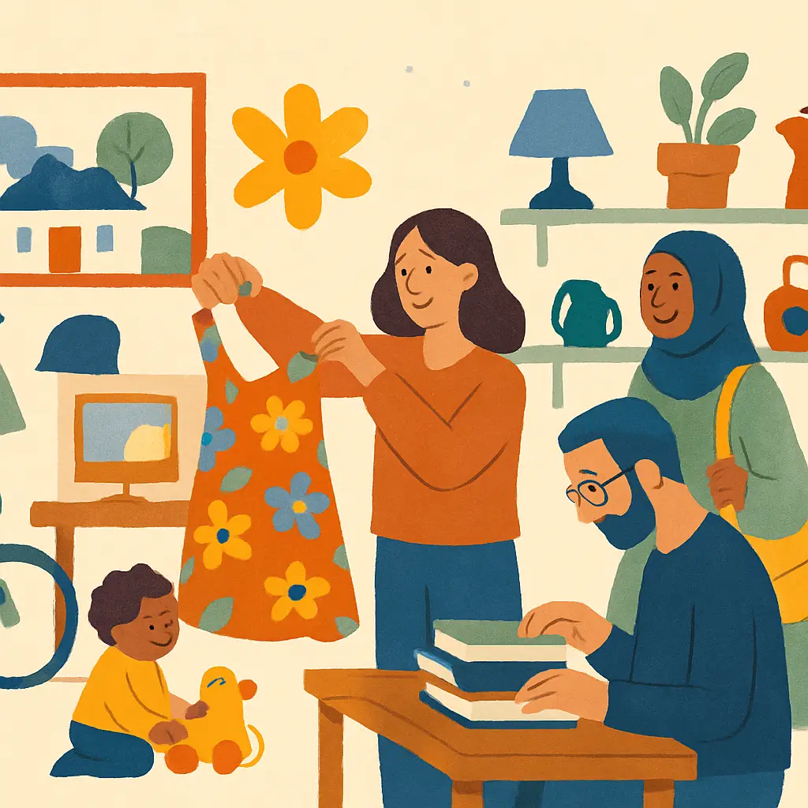
a2/lezen/exam1-kringloop minorBartjes Kringloopcentrum In Bartjes Kringloopcentrum is veel te koop. Gebruikte spullen of nieuwe spullen, altijd goed en goedkoop. Kom regelmatig kijken. Er is altijd weer iets anders te koop. Wat hebben we te koop? - Kleding en schoenen voor dames, heren en kinderen - Boeken …
Q: Bartjes krijgt vaak kapotte spullen. Wat doet Bartjes met de kapotte spullen? / John heeft spullen voor Bartjes. Bartjes moet de spullen bij hem op komen halen. Hoeveel moet hij dan betalen aan Bartjes? / Waar gaat de winst van Bartjes dit jaar naartoe?
alt: Mensen kijken rond in een kringloopcentrum met spullen
audit: minor — The image shows a thrift store interior with diverse people, a woman examining a colorful dress, a man looking at books, and a child playing with a toy, matching the brief well. However, some background details like cheerful wall decorations and shelves filled with assorted goods are minimal or missing, and there is no visual clue about the charity aspect or free pickup service.
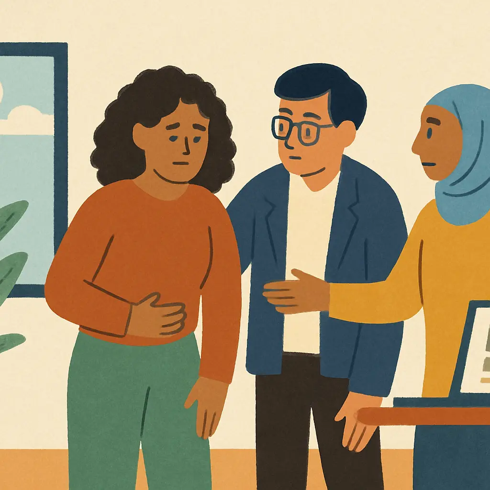
a2/lezen/exam1-ziekmelding minorZiekmelding Hoe meld ik mij ziek? U meldt u telefonisch ziek bij uw werkgever. Dit doet u zo snel mogelijk, maar uiterlijk op het tijdstip dat uw werkdag begint. Als uw werkdag normaal bijvoorbeeld om 9 uur begint, meldt u zich uiterlijk om 9 uur ziek. Wordt u onder werktijd zie…
Q: Felicity is aan het werk en voelt zich ziek. Het is drie uur 's middags. Wat moet ze doen? / Jaime meldt zich ziek. Wat moet hij vertellen tijdens zijn ziekmelding?
alt: Collega's in een kantoor, een vrouw voelt zich ziek
audit: minor — The image shows a concerned woman holding her stomach and two colleagues showing support, matching the ziekmelding situation. However, the office plants and window are only partially visible, and there is no clear indication of a phone call or desk being pointed to as described in the brief.
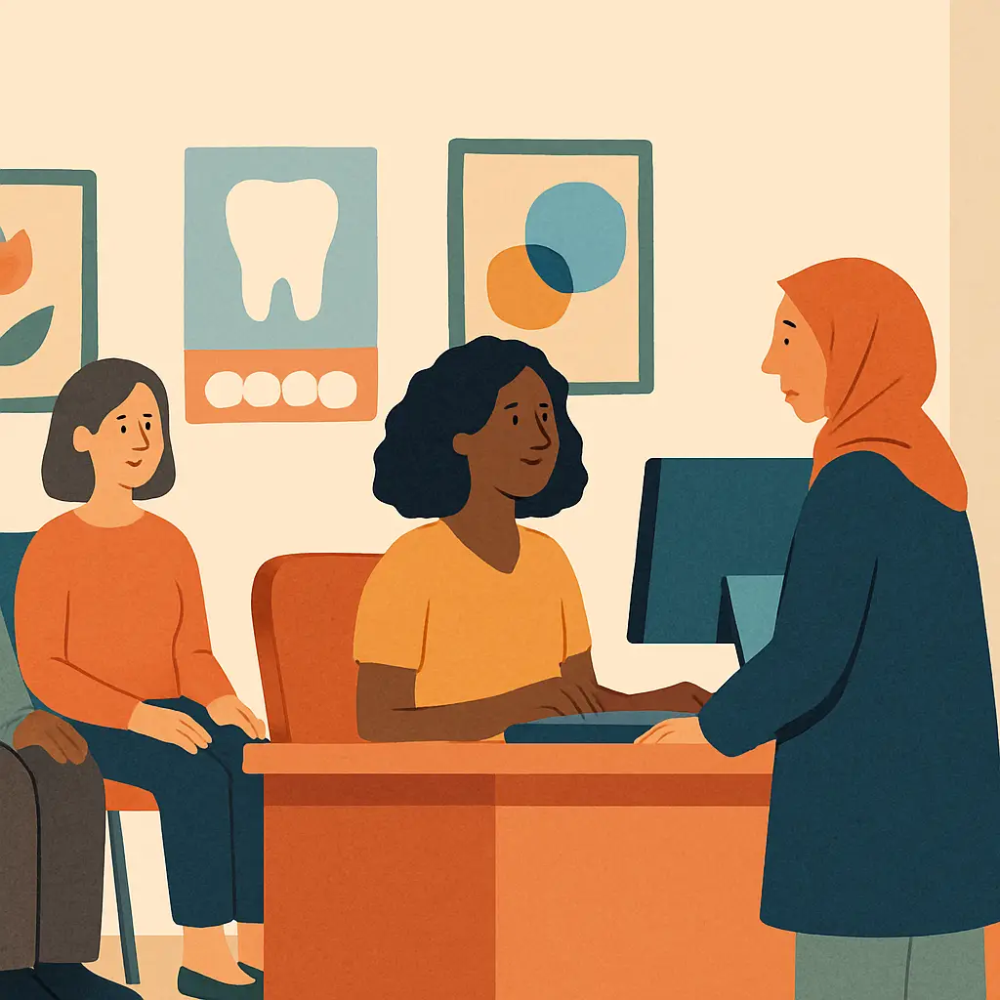
a2/lezen/exam2-tandarts minorWelkom bij de tandartspraktijk Oud Zwaluwen Ons team / Werkdagen: - Javier Barnet, tandarts: maandag en donderdag - Marie de Klop, tandarts: dinsdag en woensdag - Peter de Vries, kindertandarts: woensdag en donderdag - Salah Ben Ali, mondhygiënist: maandag, dinsdag en donderdag …
Q: Het is woensdag. Sergio heeft kiespijn en wil zo snel mogelijk naar de tandarts. Wat moet hij doen? / Soumia wil op maandag een afspraak maken bij de tandarts. Bij wie kan dat?
alt: Een vriendelijke tandartspraktijk met een receptie en wachtende patiënten
audit: minor — The image shows a dental reception area with a friendly receptionist and patients seated, matching the main situation. However, it lacks a child patient, bright colorful artwork, dental posters, and a large window letting in natural light as described in the brief.
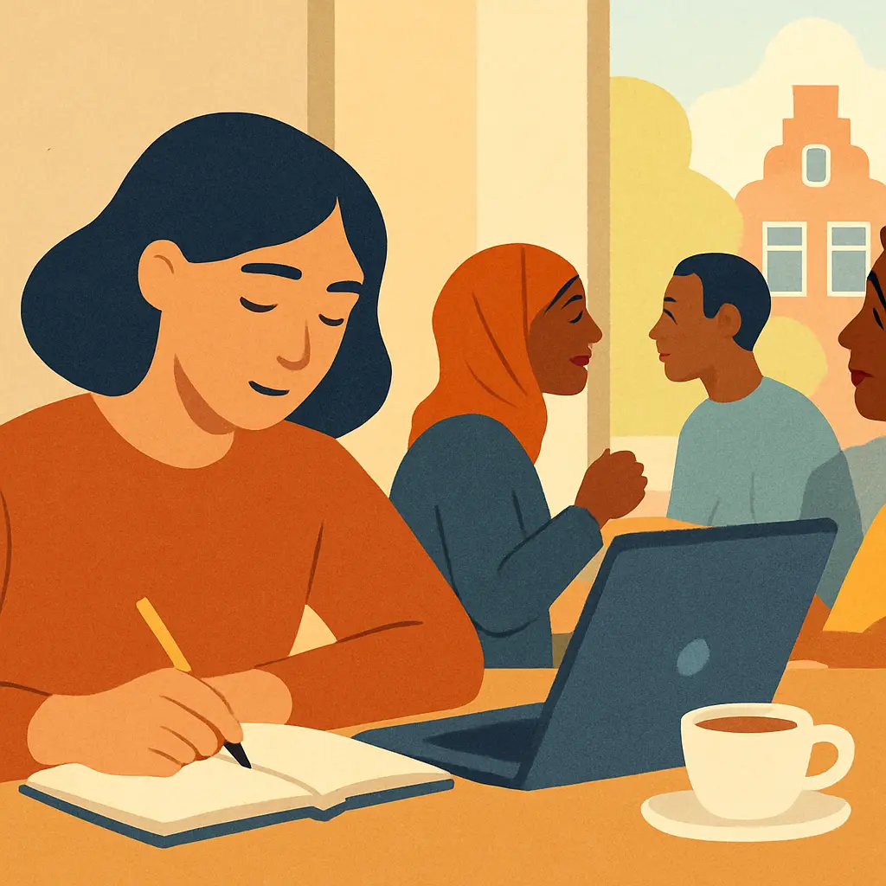
a2/lezen/exam2-cv minorWat is een cv? Uw curriculum vitae (cv) stuurt u op als u solliciteert naar een baan. In uw cv staat wie u bent en wat u kunt. Hoe maakt u een cv? Een cv bestaat uit de volgende punten: - persoonlijke gegevens: Hier zet u uw naam, adres, telefoon, e-mailadres, geboortedatum. - …
Q: Waarom maakt Anna een cv? / Anna heeft in een buurthuis vrijwillig klusjes gedaan. Waar moet ze dat op haar cv zetten? / Anna heeft vorig jaar haar scooterrijbewijs gehaald. Waar moet ze dat op haar cv zetten?
alt: Een vrouw schrijft in een notitieboek in een café
audit: minor — The image shows a young woman writing in a notebook with a laptop open beside her in a cozy café with diverse people in the background, matching the brief well. However, sunlight streaming through the window is not clearly depicted.
a2/lezen/exam2-talenschool REJECTED — text in image (W on poster)Vakanties: - Herfstvakantie: Maandag 17 oktober t/m vrijdag 21 oktober - Kerstvakantie: Maandag 26 december t/m vrijdag 6 januari - Voorjaarsvakantie: Maandag 27 februari t/m vrijdag 2 maart - Meivakantie: Dinsdag 1 mei t/m vrijdag 4 mei - Zomervakantie: Maandag 16 juli t/m vrijd…
Q: Joy gaat in juni een week naar het buitenland. Wat moet zij doen? / Samad heeft elke donderdag Nederlandse les. Wat kan hij donderdag 26 januari op de talenschool doen? / Yolande wil graag naar een open dag van talenschool Het Palet. Zij werkt van dinsdag tot en met zaterdag van 16:00 tot 22.00 uur. Wanneer kan zij naar een open dag?
alt: Groep studenten in een klaslokaal met een zonnig uitzicht
audit: minor — The image shows a diverse group of students in a classroom engaged in conversation, matching the brief's main situation. However, the window view and multiple cultural posters are not clearly visible.
a2/lezen/exam2-ziekmelding_werk REJECTED — text in image (SI)Ziekmelding Als u ziek bent en niet kunt komen werken, moet u dit bij uw leidinggevende melden. U hoeft niet te vertellen waar u last van heeft. Wel moet u zeggen hoe lang u denkt ziek te zijn. Uw leidinggevende is Chantal Miedema. U kunt haar bellen vanaf 7:00 uur. Haar telefoo…
Q: Anya moet zich ziek melden bij Jaap van Bommel. Hoe laat kan ze bellen? / Antonio wil een afspraak maken met de bedrijfsarts. Wanneer kan dat?
alt: Medewerkers in een kantoor met een ondersteunende sfeer
audit: minor — The image shows a modern office with a concerned employee, a supportive colleague, and a third person with coffee, matching the brief's situation. However, it lacks textual details like names, phone numbers, and specific times mentioned in the brief, which are important for the reading task.
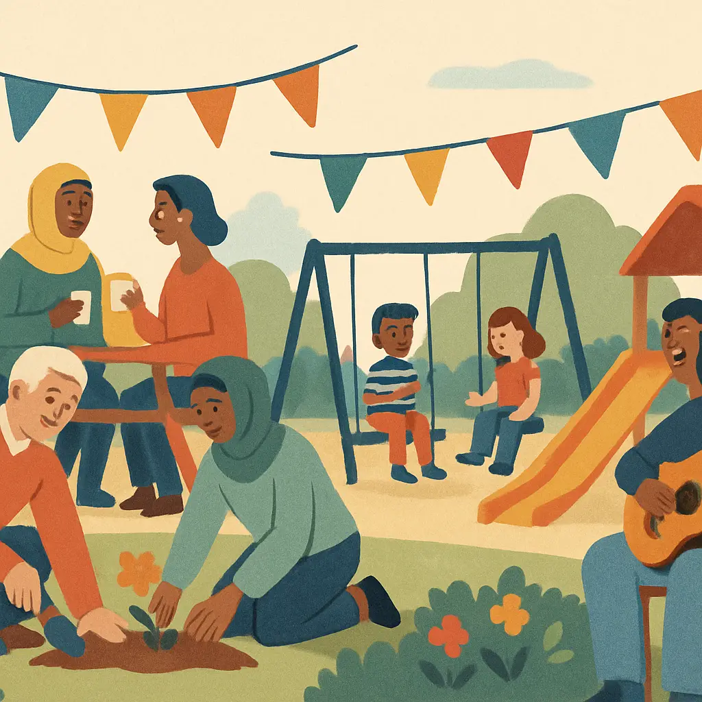
a2/lezen/exam2-buurt minorUitnodiging buurtbijeenkomst We hebben de afgelopen jaren veel gedaan in de Oranjebuurt. Er is nu een speeltuin voor de kinderen. En we hebben met alle bewoners een paar bomen geplant. Maar we willen meer. We nodigen u daarom van harte uit voor de buurtbijeenkomst op woensdagavon…
Q: Allan wil meer sportlessen voor kinderen. Hij wil graag naar de buurtbijeenkomst komen, maar hij heeft weinig tijd. Hoe laat kan hij het beste komen om over de sportlessen te praten? / Mirja wil naar de buurtbijeenkomst komen. Wanneer moet ze zich opgeven?
alt: Buurtbewoners genieten van een bijeenkomst in het park
audit: minor — The image shows a lively neighborhood park with diverse residents, children playing, people planting flowers, and a musician, matching the brief well. However, it lacks textual details about the event schedule, invitation, and sign-up information needed to answer the multiple-choice questions from the text.
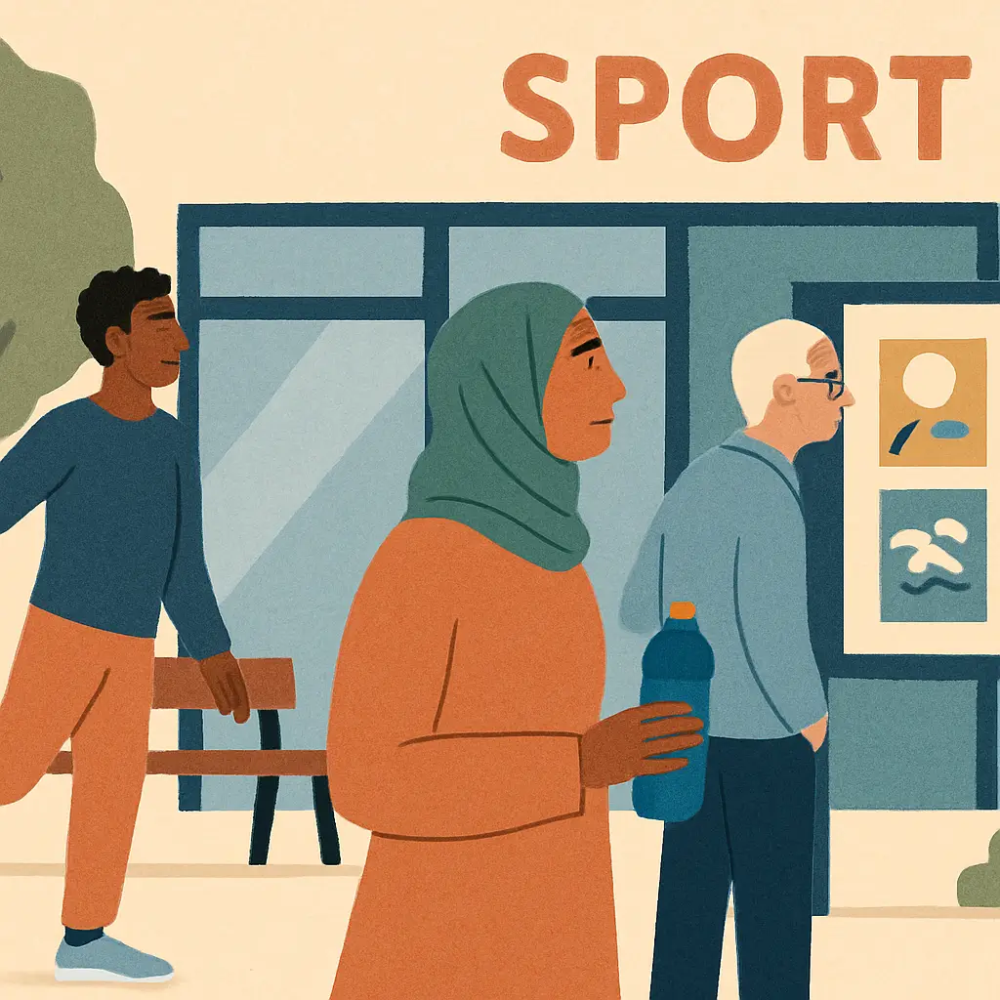
a2/lezen/exam2-sport REJECTED — text in image (SPORT sign)Het sportcentrum is geopend op: - Werkdagen van 08.00 uur tot 22.00 uur. - Zaterdag en zondag van 09.00 uur tot 17.00 uur. Er zijn drie soorten abonnementen: - Basis: €14,- per maand - zoveel sporten als u maar wilt - Daluren: €12,95 per maand - op werkdagen sporten tot 17.00 uu…
Q: Mohammed heeft een basisabonnement. Tot hoe laat kan hij op dinsdag sporten? / Ali heeft een weekendabonnement. Hij krijgt een baan in het weekend, dan moet hij van 9 tot 5 uur werken. Wanneer kan Ali nog sporten?
alt: Drie mensen bij een sportcentrum met een bord
audit: minor — The image shows a diverse group of three people outside a sports center, one stretching, one holding a water bottle, and one looking at a board, matching the brief. However, the building's glass windows, trees, benches, and detailed notice board content are not clearly visible.
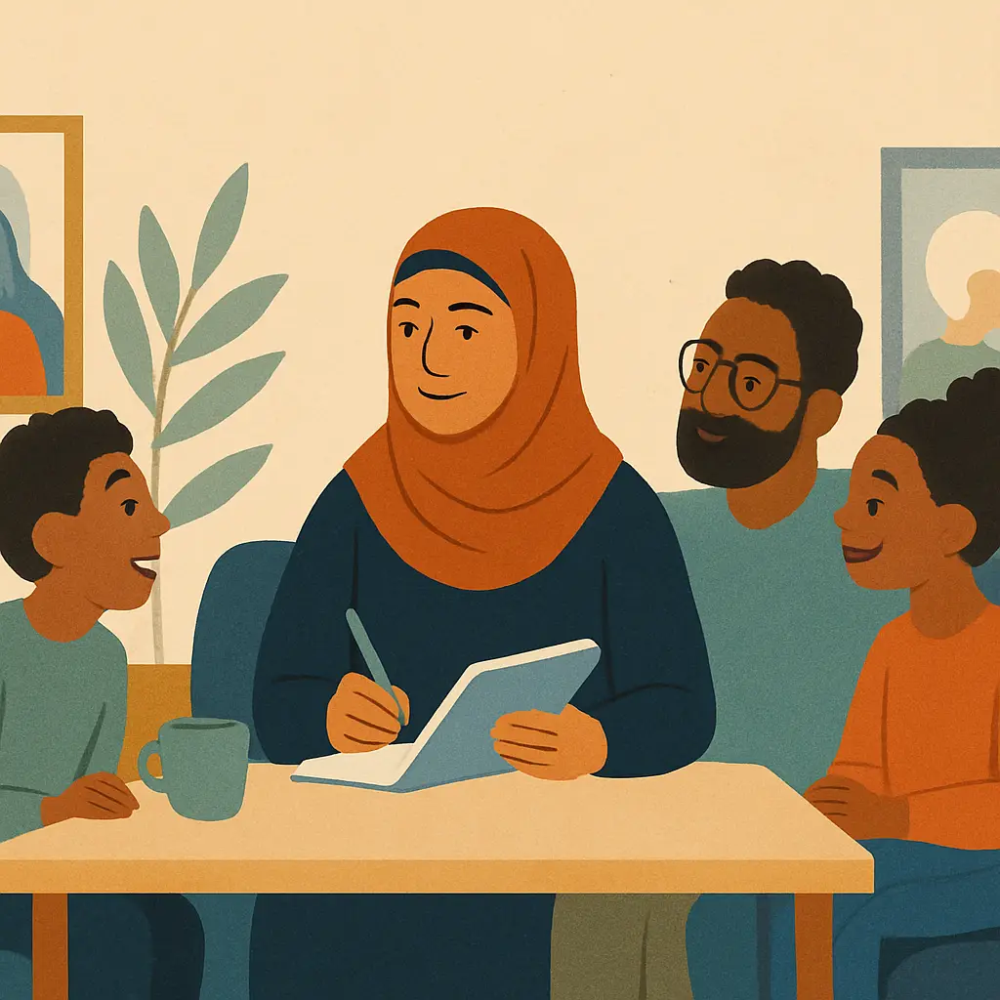
a2/lezen/exam2-brief_samira minorDag Yvonne, Ik wil je graag bedanken voor de geweldige taalcursus. Ik heb geleerd om de Nederlandse taal echt te gebruiken. Ik durf nu meer in het Nederlands te praten en te schrijven. En ik kan het nu ook veel beter. Ik praatte eigenlijk nooit met Nederlanders. Ik vind het nog …
Q: Wat heeft Samira van Yvonne geleerd? / Samira is blij met de cursus van Yvonne. Toch vindt ze niet alles goed. Wat vindt ze niet zo goed?
alt: Samira oefent Nederlands met haar man en kinderen
audit: minor — The image shows a cozy family scene with Samira writing and family members around, matching the brief well. However, family photos on the walls and a cup of tea on the table are missing.
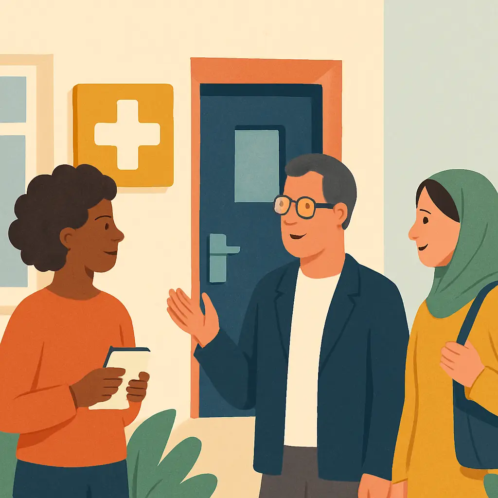
a2/lezen/exam2-huisarts minorInformatie huisarts Openingstijden Wij zijn open van maandag tot en met donderdag van 08:00 tot 17:00 uur en op vrijdag van 08:00 tot 12:30 uur. 's Avonds, in het weekend en tijdens de vakantie Op avonden, in het weekend en op vrijdagmiddag kunt u de centrale huisartsenpost bel…
Q: Het is vrijdag. Mouna wil een afspraak met haar huisarts. Ze wil vandaag naar de assistente bellen. Wanneer kan ze dat het beste doen? / Mouna heeft een huisarts nodig. Haar eigen huisarts heeft vakantie. Wat moet Mouna doen?
alt: Vrouwen en mannen praten voor de huisartsenpraktijk
audit: minor — The image shows a diverse group of three people outside a healthcare building, matching the brief's main situation. However, it lacks any visible text or signage with the detailed information needed for the questions.
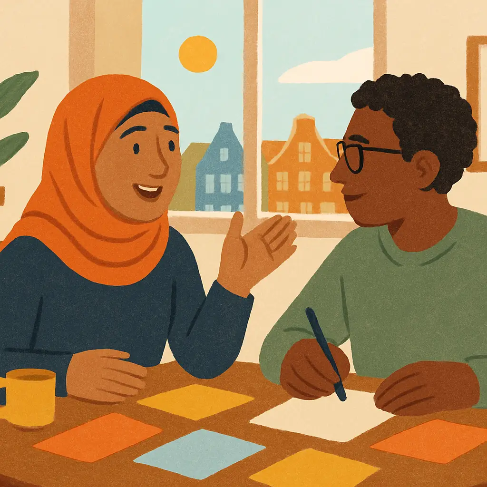
a2/lezen/exam2-woorden minorWoorden leren 1. De kaartjesmethode Kent u nog bijna geen woorden in de taal die u wilt leren? Dan is dit een goede manier. U schrijft op elk kaartje een woord dat u moet leren. Op de achterkant schrijft u wat het woord in uw eigen taal betekent. 2. De schuifmethode Heeft u het…
Q: Karima gebruikt de schuifmethode om woorden te leren. In welke volgorde moet zij de woorden leren? / Noa leert al een paar maanden Nederlandse woorden. Ze kent de meeste woorden al goed. Ze heeft moeite met sommige woorden. Ze wil die ook graag leren. Welke manier is dan het beste?
alt: Vrienden leren samen nieuwe woorden in een woonkamer
audit: minor — The image shows two friends of the described descent studying with cards and papers at a table in a cozy living room, but the sunny day outside the window and the colorful stationery details are not clearly visible.
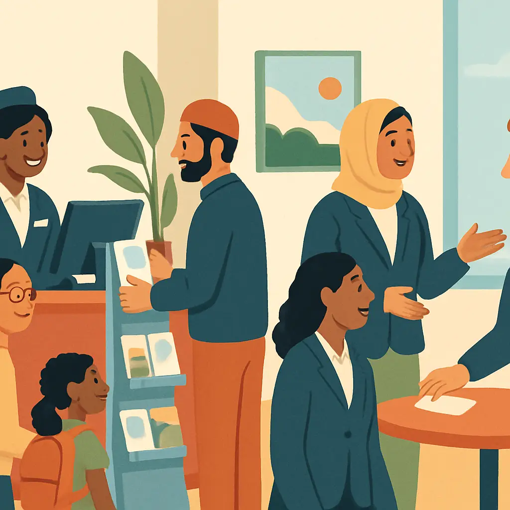
a2/lezen/exam2-rooster minorWERKROOSTER HOTEL 'CHEZ JANOU' N nachtdienst van 23.00 uur tot 07.30 uur O ochtenddienst van 7.30 uur tot 14.00 uur M middagdienst van 14.00 uur tot 18.30 uur A avonddienst van 18.30 uur tot 23.00 uur Wil je een dienst ruilen met een collega? Dan moet je dat zelf regelen. Kijk …
Q: Hoe lang moet Xavier vrijdag werken? / Xavier moet op zaterdagmiddag werken. Hij wil dan graag vrij. Met wie kan Xavier ruilen?
alt: Hotel medewerkers helpen gasten in de lobby
audit: minor — The image shows a diverse group of hotel staff interacting, including a Black woman at reception, a Middle-Eastern man with brochures, and a South Asian woman chatting, matching the brief well. However, the white man cleaning a table is missing, which is a minor detail.
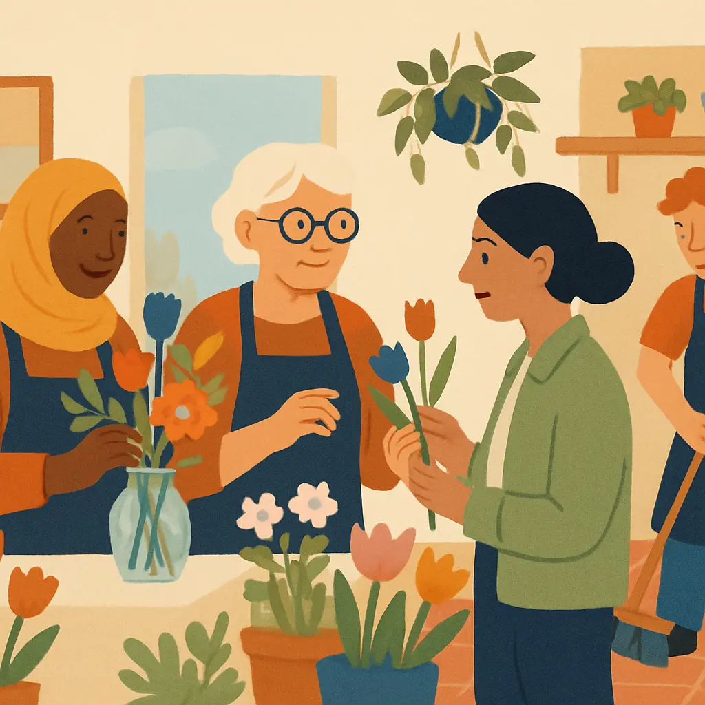
a2/lezen/exam2-bloemen minorBeste collega's, We hebben vanmorgen met zijn allen gepraat. Dat was goed om te doen. We hebben duidelijke afspraken gemaakt over het werk in de winkel. Iedereen moet zich aan deze afspraken houden. De afspraken staan hieronder: 1. De winkel is vanaf nu elke eerste en derde zon…
Q: Wie werken op de eerste zondag van april? / Hoeveel kost de nieuwe klantenkaart? / Hoe vaak moeten Omar en zijn collega's dweilen?
alt: Drie medewerkers werken in een bloemenwinkel
audit: minor — The image shows three diverse employees working with flowers in a lively shop, matching the brief well. However, it does not depict the cleaning activity or any textual information about schedules or customer cards, so it cannot reveal answers to the multiple-choice questions.
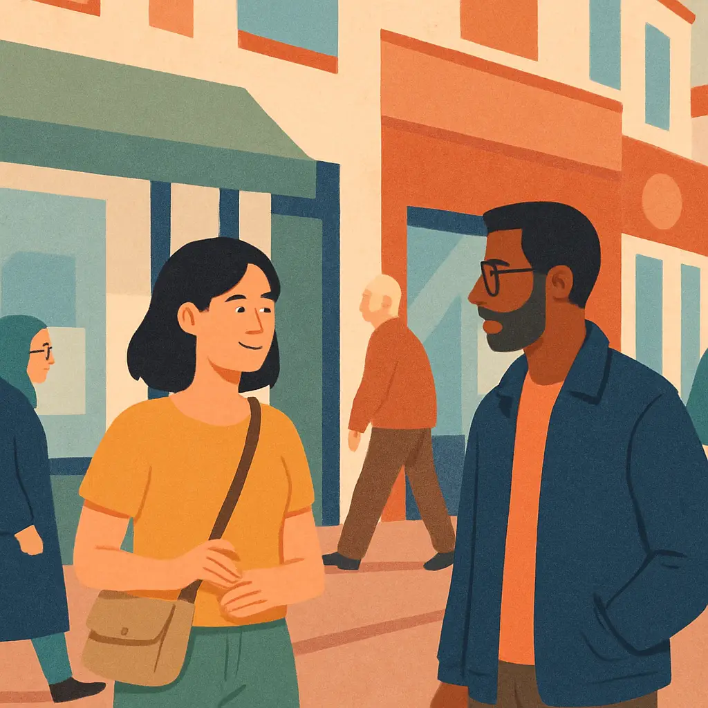
a2/luisteren/l1-q1 minorMan: Ga je mee naar de markt? Vrouw: Nee, ik moet eerst naar de apotheek. Ik heb medicijnen nodig. Man: Oké, dan zie ik je later.
Q: Waar gaat de vrouw naartoe?
alt: Vrouw en man praten op een drukke straat.
audit: minor — The main situation of a man and woman talking on a busy street corner is clear, with shops and people in the background. No market, pharmacy, medicines, clock, or text appear. However, the woman's bag is not clearly small, and the man's gaze is not obvious.
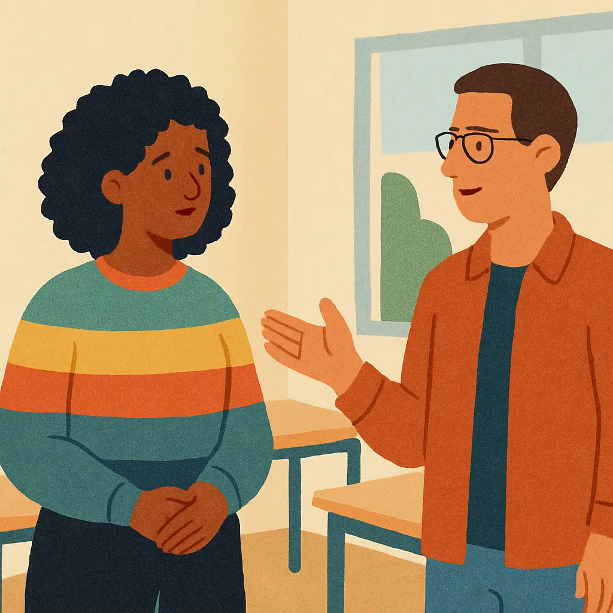
a2/luisteren/l1-q2 minorVrouw: Wanneer begint de Nederlandse les? Man: De les begint om half tien. Maar je moet er om kwart over negen zijn. Vrouw: Oké, dan kom ik vroeg.
Q: Hoe laat begint de les?
alt: Een vrouw en een man praten in een klaslokaal
audit: minor — The image matches the main situation well but lacks clear depiction of a bright, modern classroom with natural light and desks; the woman's sweater is colorful but the classroom details are minimal.
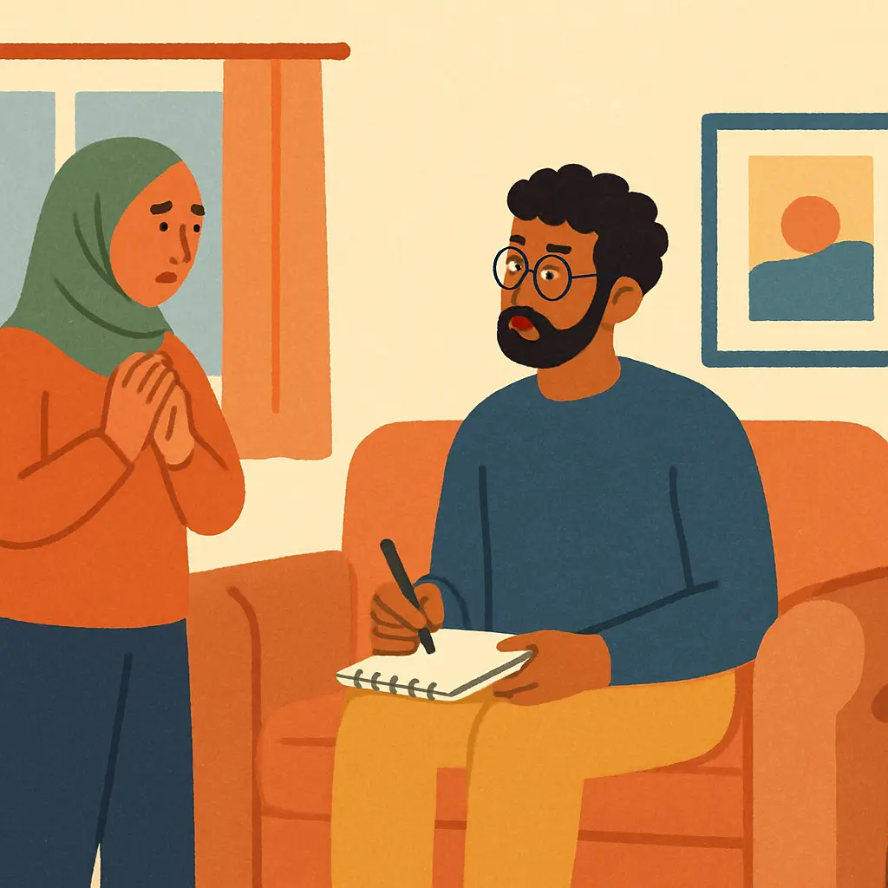
a2/luisteren/l1-q3 minorVrouw: Goedemorgen, ik bel over mijn bestelling. Ik heb vorige week een tafel besteld, maar ik heb een stoel gekregen. Man: Oh, dat spijt me. Ik zoek het voor u uit.
Q: Wat is het probleem?
alt: Vrouw en man praten in een gezellige woonkamer
audit: minor — No plants visible in the room; other elements match the brief well.
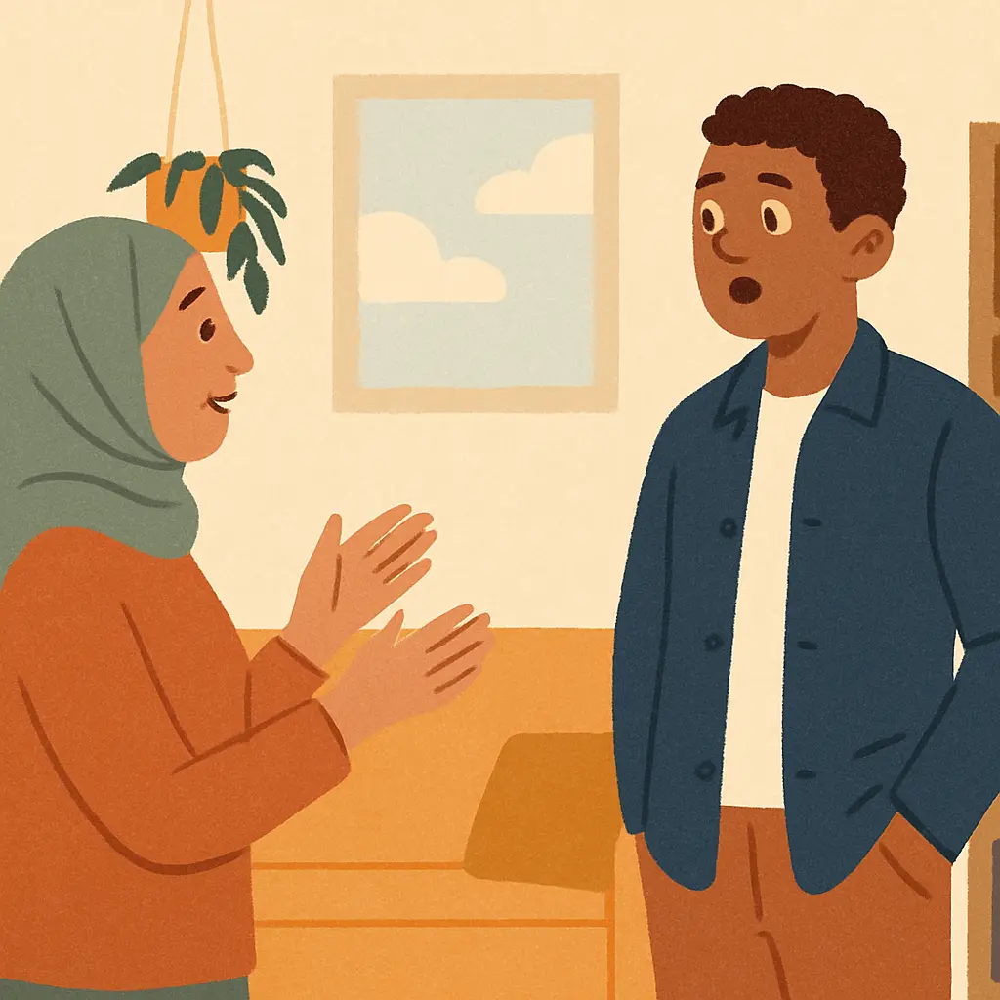
a2/luisteren/l1-q4 minorVrouw: Je hebt morgen een afspraak bij de tandarts om twee uur. Man: Oh, ik was het vergeten. Moet ik iets meenemen? Vrouw: Ja, neem je paspoort en je verzekeringspas mee.
Q: Wat moet de man doen?
alt: Een vrouw en een man praten in een woonkamer
audit: minor — The image shows a woman gesturing and a man looking surprised with hands in pockets in a cozy living room with plants, matching the brief well. However, the bookshelf mentioned in the brief is missing.
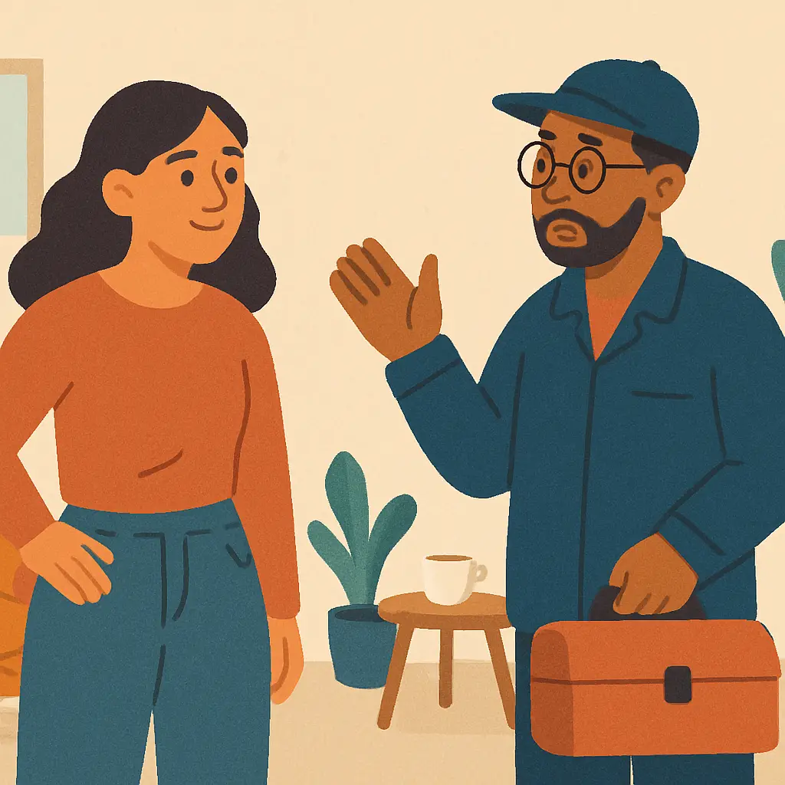
a2/luisteren/l1-q5 Vrouw: Kom je zaterdag naar het feest? Man: Nee, helaas niet. Ik moet werken dit weekend. Vrouw: Jammer! Volgende keer dan.
Q: Waarom kan de man niet komen?
alt: Vrouw en man praten in een woonkamer
audit: ok — The image shows a woman and a man in a cozy living room, the woman looks friendly and casually dressed, the man looks apologetic and wears work attire holding a toolbox. Background includes plants and a table with a coffee cup. The image clearly supports the MCQ answer 'Hij moet werken'.
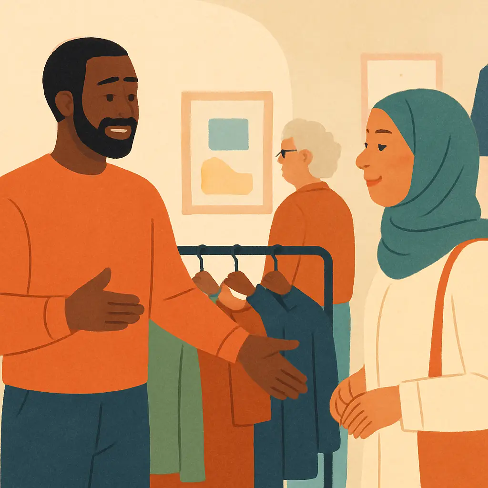
a2/luisteren/l1-q6 minorMan: Kan ik u helpen? Vrouw: Ja, ik zoek een winterjas. Heeft u iets in maat 40? Man: Ja, hier hangen een paar jassen. Deze blauwe is in de aanbieding.
Q: Wat wil de vrouw kopen?
alt: Vrouw en man praten in een kledingwinkel
audit: minor — The image shows a man and woman in a clothing store with the man gesturing towards clothes on a rack, matching the brief and MCQ context. The warm atmosphere and colorful displays are only partially visible.
a2/luisteren/l1-q7 REJECTED — answer leakage: train platform, answer is Met de treinMan: Ga je met de auto naar je werk? Vrouw: Nee, ik pak altijd de trein. Het is sneller en beter voor het milieu. Man: Dat is waar.
Q: Hoe gaat de vrouw naar haar werk?
alt: Man en vrouw praten op een treinstation
audit: ok — The image shows a man and woman at a train station with a train and sign in the background, matching the brief. The presence of the train visually supports the correct answer 'Met de trein'.
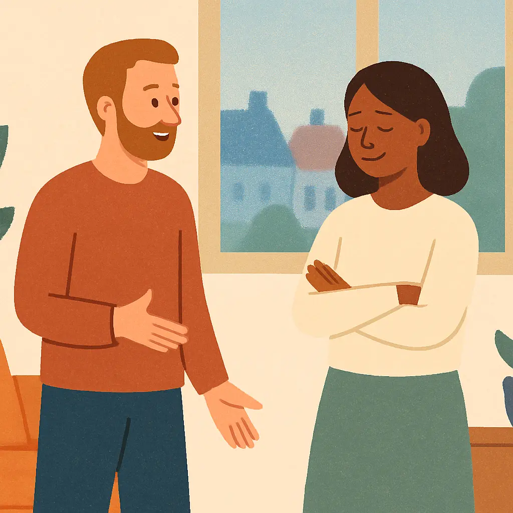
a2/luisteren/l1-q8 minorMan: Zullen we naar het strand gaan? Vrouw: Vandaag niet. Het regent de hele dag. Misschien morgen, dan wordt het zonnig. Man: Oké, dan gaan we morgen.
Q: Wat is het weer vandaag?
alt: Man en vrouw praten in een woonkamer
audit: minor — The main situation is recognizable and the weather (rain) is implied by the woman's refusal; however, the woman is shown with arms crossed rather than shaking her head gently, and the man's hopeful expression is not very clear.
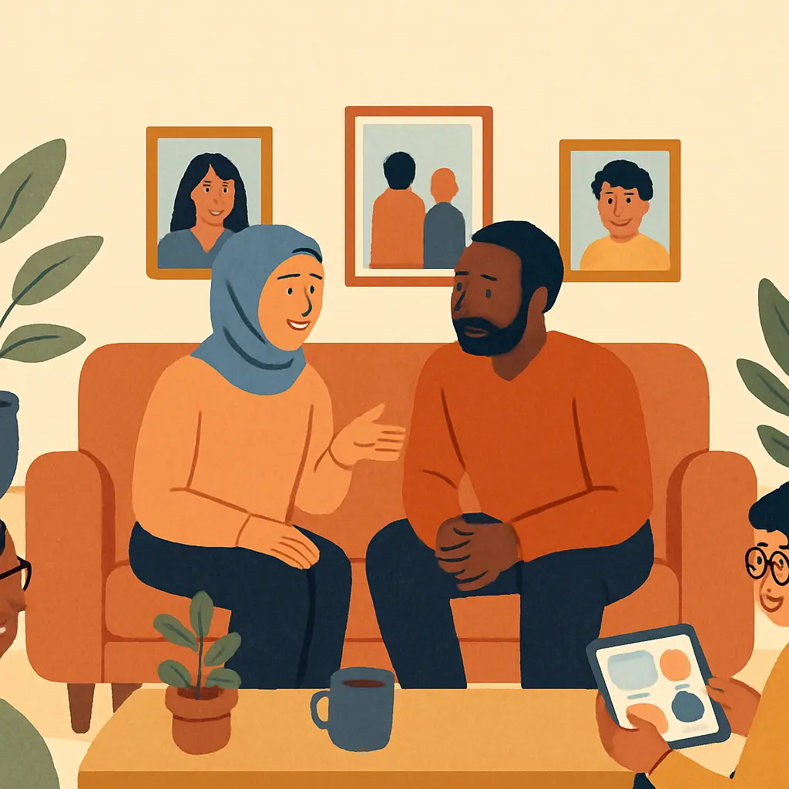
a2/luisteren/l1-q9 minorMan: Heeft u kinderen? Vrouw: Ja, ik heb drie kinderen. Twee jongens en een meisje. Man: Leuk! Hoe oud zijn ze? Vrouw: Vijf, acht en twaalf.
Q: Hoeveel kinderen heeft de vrouw?
alt: Een man en een vrouw praten in een woonkamer
audit: minor — The image shows a man and woman on a sofa in a cozy living room with family photos and plants, matching the brief well. However, the woman's gesture and the man's attentive posture are not very clear.
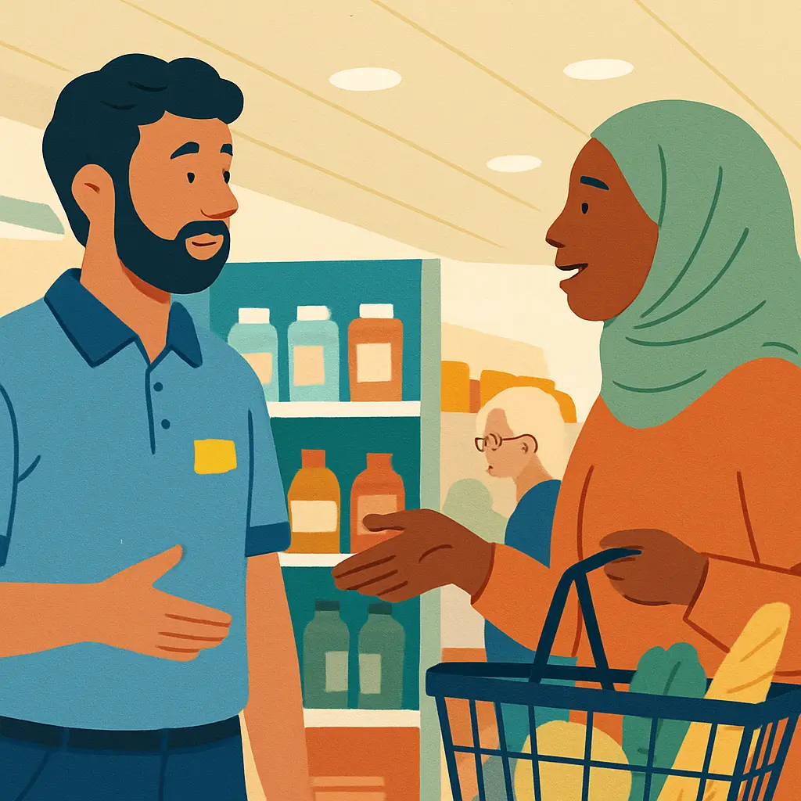
a2/luisteren/l1-q10 minorDit is een bericht van Albert Heijn. Wij zijn geopend van maandag tot en met zaterdag van acht uur 's ochtends tot negen uur 's avonds. Op zondag zijn wij gesloten.
Q: Wanneer is de winkel open?
alt: Een medewerker praat met een klant in de supermarkt
audit: minor — The image shows a friendly conversation between a male employee and a female customer with a shopping basket near grocery shelves, matching the brief. However, there is no visible text or signage indicating store hours or Albert Heijn branding, so the multiple-choice question answer cannot be inferred from the image alone.
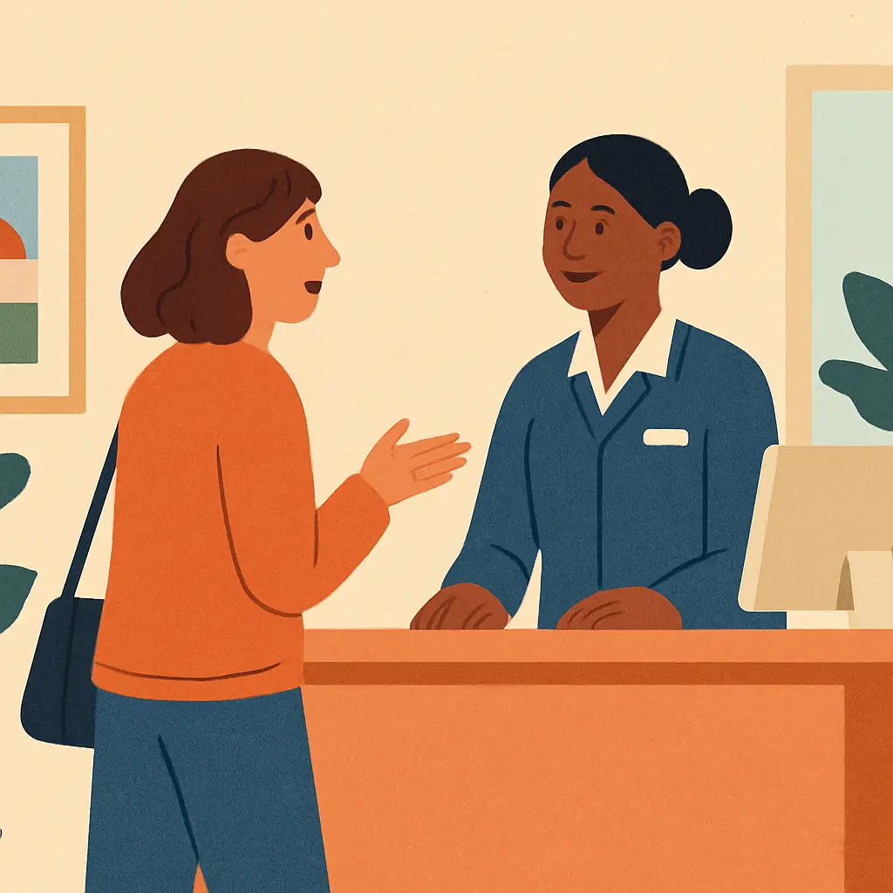
a2/luisteren/l2-q1 minorVrouw: Goedemiddag, ik bel om een afspraak te maken bij de huisarts. Receptionist: Wanneer wilt u komen? Vrouw: Kan het morgenochtend? Ik heb al drie dagen hoofdpijn. Receptionist: Morgen om negen uur kan. Neemt u uw verzekeringspas mee.
Q: Waarom belt de vrouw?
alt: Vrouw spreekt met de receptioniste in een kantoor
audit: minor — The image shows a woman talking to a receptionist at a desk, matching the main situation. However, the woman wears a plain orange sweater, not clearly casual, and the office lacks visible plants or colorful artwork as described.
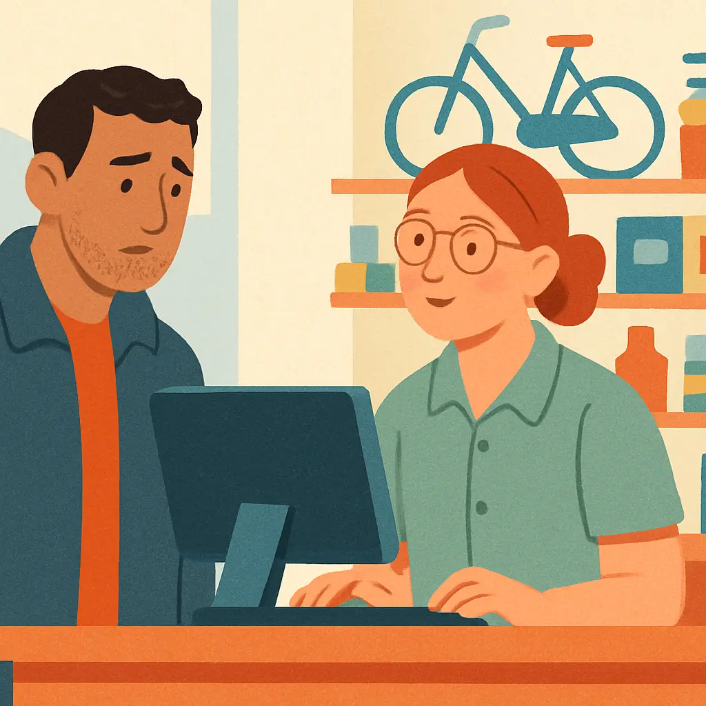
a2/luisteren/l2-q2 minorMan: Ik heb vorige week een pakket besteld, maar het is nog niet aangekomen. Vrouw: Wat is uw bestelnummer? Man: Eendrievier-zevenacht. Vrouw: Ik zie het. Uw pakket is onderweg. Het komt morgen.
Q: Wat is het probleem met het pakket?
alt: Man en vrouw praten bij een servicebalie
audit: minor — The main situation is recognizable, but some details from the brief like the man's expression being slightly concerned, the woman's uniform, and the busy shelves are not fully clear.
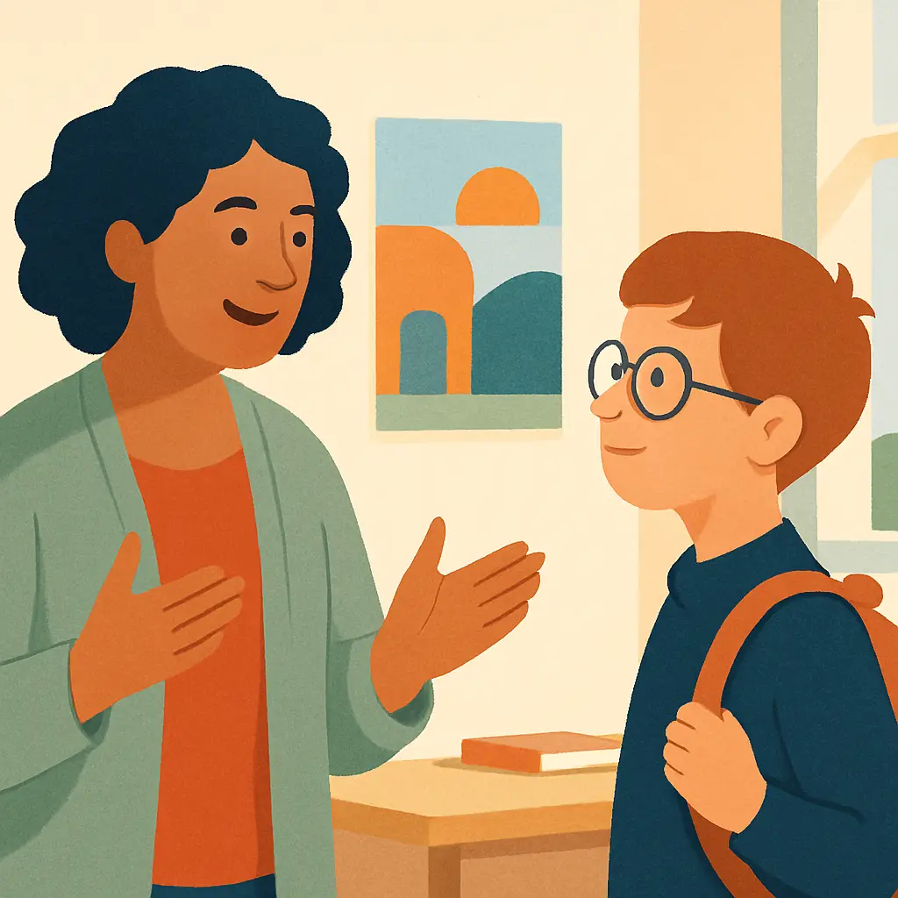
a2/luisteren/l2-q3 minorLeraar: Volgende week hebben we een excursie naar het museum. Leerling: Leuk! Hoe laat moeten we er zijn? Leraar: Om tien uur. We gaan met de bus. Vergeet niet om eten en drinken mee te nemen. Leerling: Moet ik geld meenemen? Leraar: Nee, de school betaalt alles.
Q: Waar gaat het gesprek over?
alt: Leraar en leerling praten in een klaslokaal
audit: minor — The image shows a teacher and student talking, but the teacher does not have curly hair and the classroom details like colorful posters and large window are missing or unclear.
a2/luisteren/l2-q4 minorReizigers, let op. De trein naar Amsterdam Centraal van kwart over elf vertrekt vandaag vijf minuten later, om twintig over elf, vanaf spoor drie. Wij bieden onze excuses aan voor het ongemak.
Q: Hoe laat vertrekt de trein?
alt: Vrouw en man praten in een druk treinstation
audit: minor — The image shows a diverse group of travelers with two people conversing, matching the brief. However, there is no visible text or signage indicating the train departure time or platform, so the multiple-choice question answer cannot be derived from the image alone.
a2/luisteren/l2-q5 minorVrouw: Goedemiddag, wat mag het zijn? Man: Ik wil graag een broodje kaas en een kop koffie. Vrouw: Met melk en suiker? Man: Alleen melk, geen suiker alstublieft. Vrouw: Dat is dan vier euro vijftig.
Q: Wat wil de man bestellen?
alt: Een man en een vrouw praten in een café
audit: minor — The image shows a woman behind a counter and a man talking, with potted plants and a coffee machine, matching the main situation. However, the counter's material and the man's posture are not clearly depicted, and warm lighting is not evident.
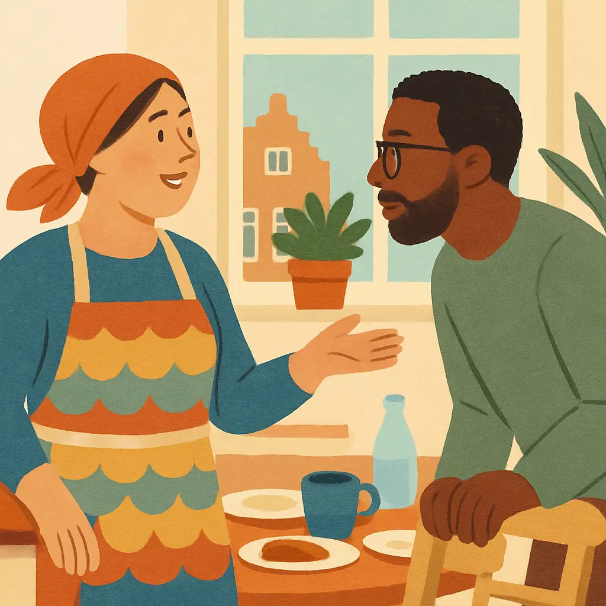
a2/luisteren/l2-q6 minorVrouw: Hoi, ik bel even om te zeggen dat we zaterdag een verjaardagsfeest hebben voor Sanne. Man: Leuk! Hoe laat? Vrouw: Om drie uur 's middags. Bij ons thuis. Kun je een salade meenemen? Man: Ja, natuurlijk. Tot zaterdag!
Q: Wanneer is de verjaardag?
alt: Vrouw en man praten in een gezellige keuken
audit: minor — The image shows a woman and man in a cozy kitchen talking, with plants and a window, matching the brief well. However, the woman is wearing a patterned apron but not very colorful, the table is not fully set for a meal (only a few items), and the man is leaning but not strongly forward. Overall minor missing details.
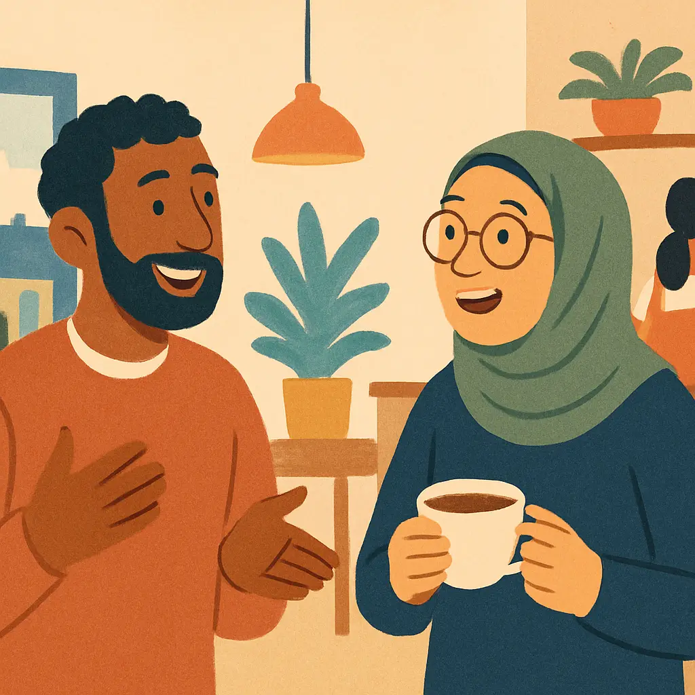
a2/luisteren/l2-q7 minorMan: Gefeliciteerd met je nieuwe baan! Wanneer begin je? Vrouw: Volgende week maandag. Maar ik moet eerst nog een paar formulieren invullen en een kopie van mijn diploma opsturen. Man: Dat klinkt goed. Veel succes!
Q: Wat moet de vrouw doen voor haar nieuwe baan?
alt: Man en vrouw praten in een café
audit: minor — The image shows a cheerful man and woman in conversation, with the woman holding a cup, but the cozy café setting with wooden furniture is not clearly visible.
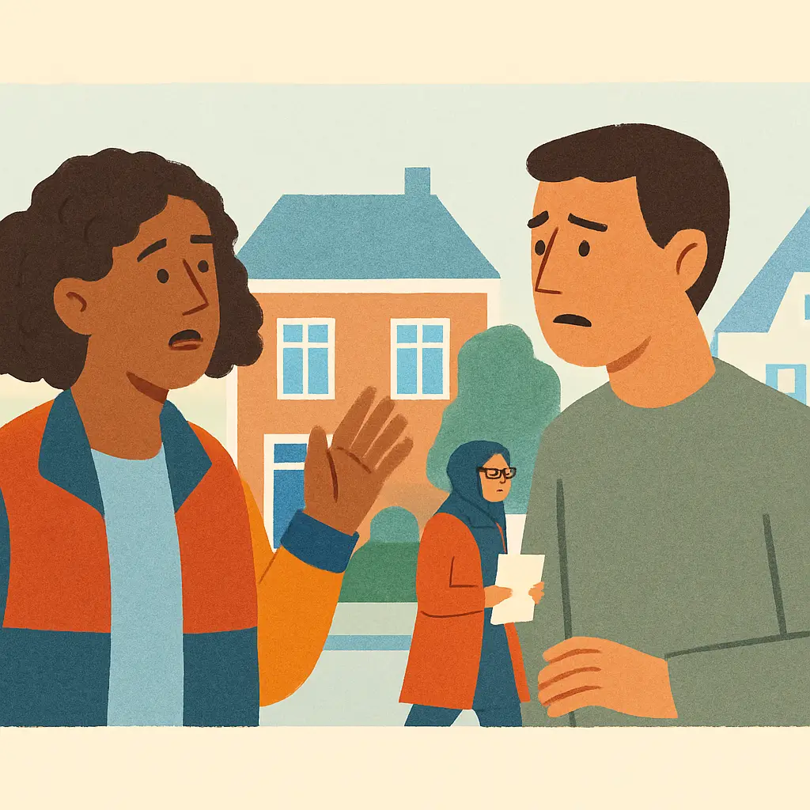
a2/luisteren/l2-q8 minorVrouw: Heb je gehoord? Meneer Jansen van hiernaast is gevallen op straat. Man: Oh nee! Is het erg? Vrouw: Hij heeft zijn been gebroken. Hij ligt nu in het ziekenhuis. Man: Zullen we bloemen voor hem kopen? Vrouw: Goed idee.
Q: Wat is er met de buurman?
alt: Een man en vrouw praten bezorgd op de stoep
audit: minor — The image shows a woman and a man on a sidewalk in a residential area with concerned expressions, matching the brief. Some specific details like hair texture and clothing colors are not fully clear but the main situation is recognizable. The image does not reveal the correct MCQ answer explicitly.
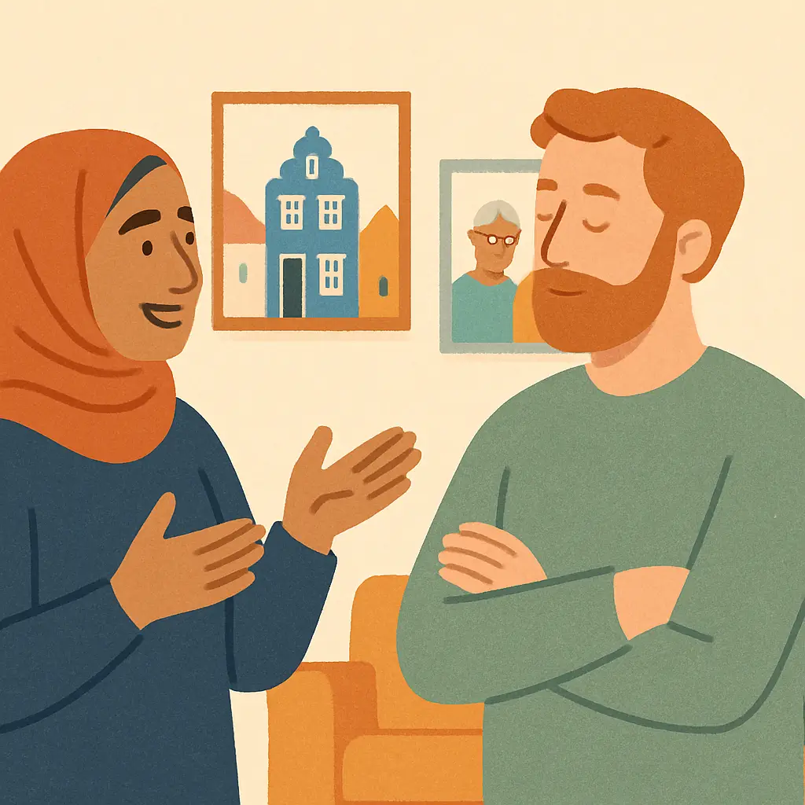
a2/luisteren/l2-q9 minorVrouw: Vergeet niet dat je vanavond de kinderen van school moet halen. Man: Hoe laat is de school uit? Vrouw: Om half vier. En daarna moeten ze naar zwemles om vier uur. Man: Oké, ik haal ze op en breng ze naar het zwembad.
Q: Wat moet de man vanavond doen?
alt: Een man en een vrouw praten in een woonkamer
audit: minor — The image shows a man and a woman in a cozy living room with the woman gesturing and the man listening attentively, matching the brief well. However, the family pictures and sofa are not clearly visible, which are minor missing details.
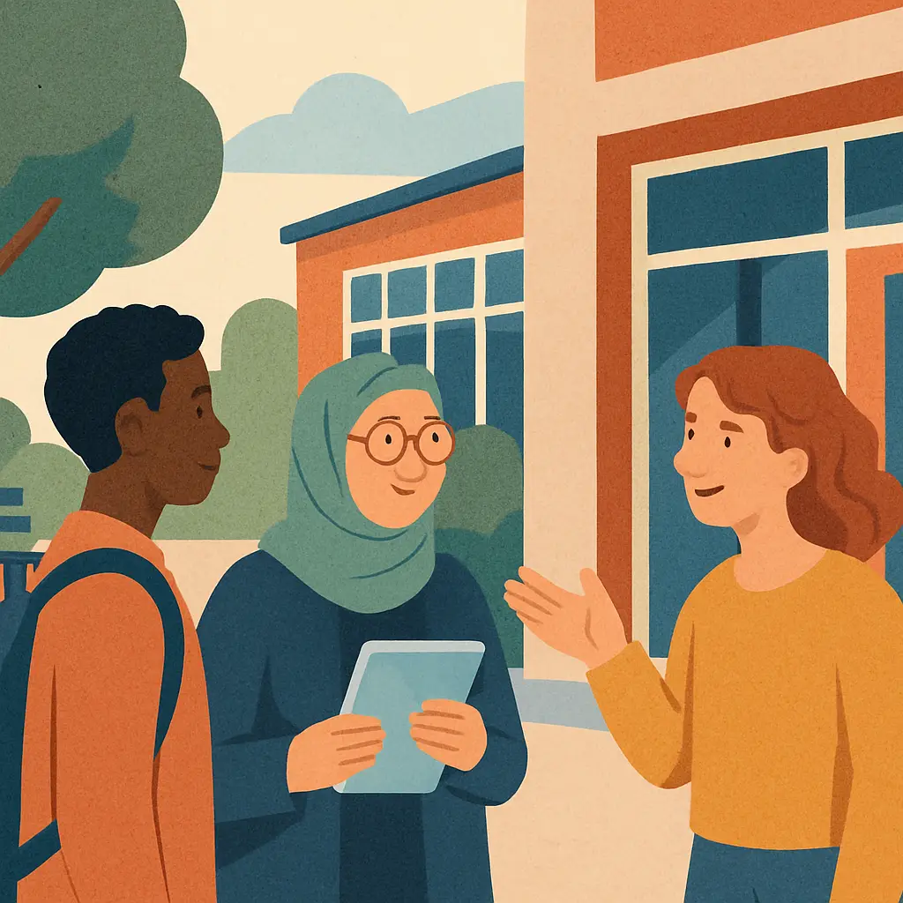
a2/luisteren/l2-q10 minorBeste bezoekers, de bibliotheek is vandaag gesloten wegens een waterleidingbreuk. Morgen zijn we weer open vanaf negen uur. Boeken die vandaag teruggebracht moeten worden, kunt u in de brievenbus bij de ingang doen. Excuses voor het ongemak.
Q: Waarom kan de bibliotheek niet open?
alt: Drie mensen praten buiten een gebouw
audit: minor — The image matches the brief with three diverse people conversing outside a modern building, but lacks explicit signs or details about the library closure or water leak.
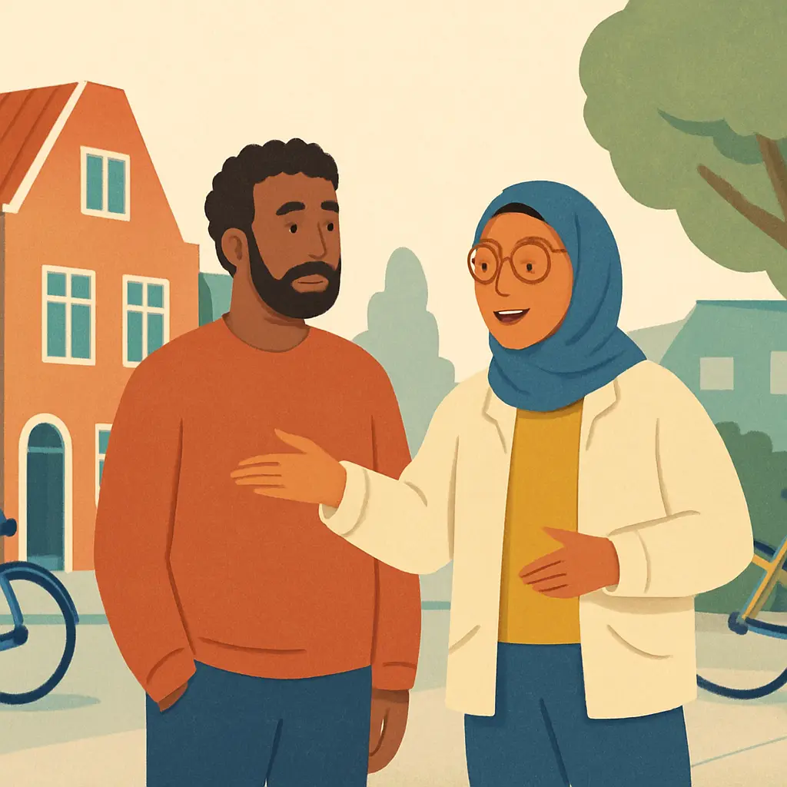
a2/luisteren/l3-q1 minorMan: Goedemorgen, ik ben nieuw in deze buurt. Kunt u mij vertellen waar de dichtstbijzijnde huisarts is? Vrouw: Ja hoor, er is een huisartspraktijk aan de Hoofdstraat, naast de apotheek. Man: Dank u wel. Zijn ze ook op zaterdag open? Vrouw: Nee, alleen doordeweeks.
Q: Wat wil de man weten?
alt: Man en vrouw praten op de stoep in de buurt
audit: minor — The image shows a man and a woman talking on a sidewalk in a residential area, matching the brief. However, the background details like typical Dutch houses, bicycles, and trees are only partially visible or missing, and the man's expression is neutral rather than clearly curious. The woman's clothing is not clearly a light jacket. The image does not reveal the answer to the multiple-choice question.
a2/luisteren/l3-q2 minorVrouw: Ik wil me graag inschrijven voor de zwemcursus. Man: De cursus is op dinsdag en donderdag van zes tot zeven uur. Het kost vijfenveertig euro per maand. Vrouw: Oké, en moet ik zelf een badpak meenemen? Man: Ja, en ook een handdoek.
Q: Hoeveel kost de cursus?
alt: Vrouw en man praten bij de receptie van een centrum
audit: minor — The image shows a woman and a man at a reception desk talking, with a bulletin board in the background, matching the main situation. However, some specific details from the brief about hair style, clothing, and expressions are not clearly depicted or differ slightly.
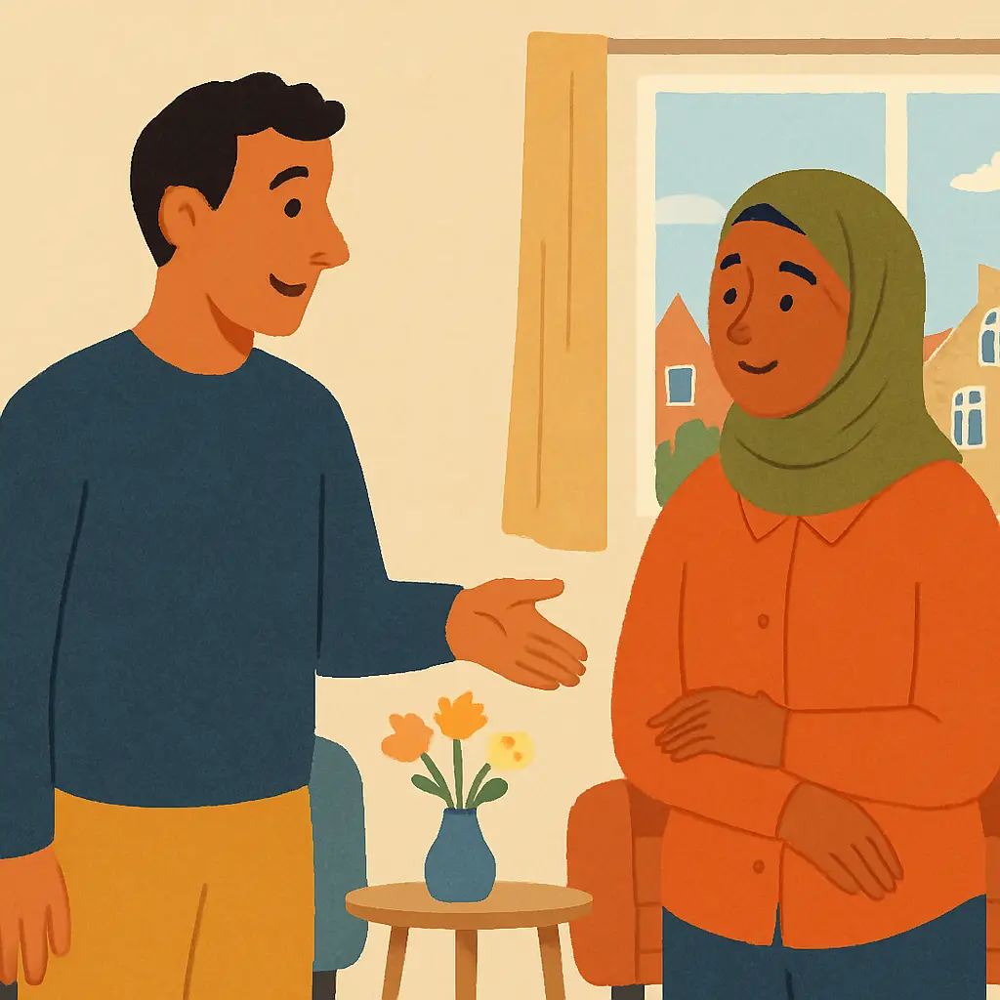
a2/luisteren/l3-q3 minorMan: We geven vrijdagavond een feest. Kun je komen? Vrouw: Vrijdag kan ik helaas niet. Ik moet oppassen op de kinderen van mijn zus. Man: Jammer! Misschien een andere keer. Vrouw: Ja, leuk. Veel plezier vrijdag!
Q: Waarom kan de vrouw niet naar het feest?
alt: Man en vrouw praten in een gezellige woonkamer
audit: minor — The image shows a man and woman talking in a cozy living room with a window and flowers on a table, matching the brief well. The couches are not clearly visible, which is a minor missing detail. The image does not reveal the reason why the woman cannot come, so it does not reveal the answer to the MCQ.
a2/luisteren/l3-q4 minorVrouw: U wilt zich inschrijven bij de gemeente? Dan moet u een afspraak maken. Man: Oké, wat moet ik meenemen? Vrouw: Uw paspoort, een pasfoto, en een bewijs van uw adres. Dat kan een huurcontract zijn. Man: Goed, ik maak een afspraak.
Q: Wat moet de man meenemen naar het gemeentehuis?
alt: Vrouw en man praten bij de balie van het gemeentehuis
audit: minor — The image shows a woman and man at a reception desk in an office, matching the main situation, but some brief details like curly hair and blue blouse on the woman and posters in the background are not clearly visible.
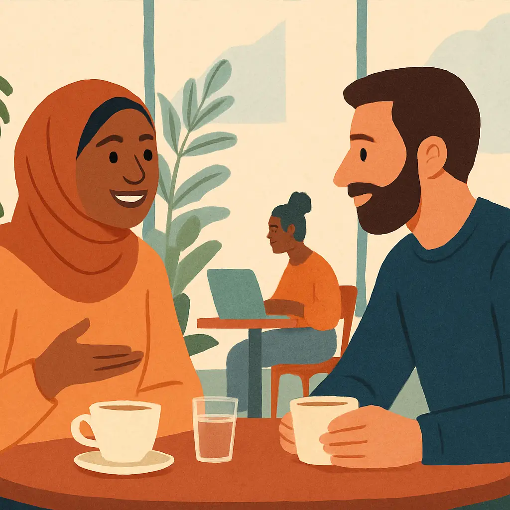
a2/luisteren/l3-q5 minorMan: Wat voor werk doe je? Vrouw: Ik werk in een ziekenhuis als verpleegkundige. Ik werk drie dagen per week. Man: Vind je het leuk? Vrouw: Ja, het is soms zwaar, maar ik vind het mooi om mensen te helpen.
Q: Waar werkt de vrouw?
alt: Man en vrouw praten in een café
audit: minor — The image shows a man and woman conversing at a café table with plants and another customer in the background, matching the brief well. The woman's warm smile and the man's attentive posture are somewhat implied but not very detailed. The image does not reveal the woman's workplace, so it does not reveal the answer to the MCQ.
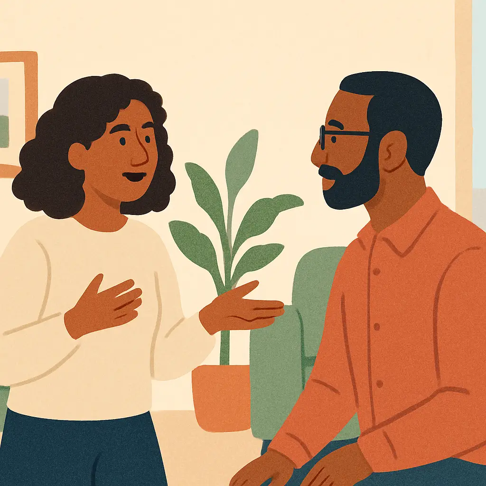
a2/luisteren/l3-q6 minorVrouw: Je auto staat morgen klaar bij de garage. Man: Hoe laat kan ik hem ophalen? Vrouw: Vanaf half drie 's middags. Vergeet niet om de factuur contant te betalen. Man: Oké, ik kom om drie uur.
Q: Hoe laat moet de man bij de garage zijn?
alt: Vrouw en man praten in een gezellige woonkamer
audit: minor — The image matches the main situation well but misses some specific details from the brief such as the woman's curly hair and light sweater, the man's posture, and the sofa in the background. No text or visual clues reveal the correct MCQ answer.
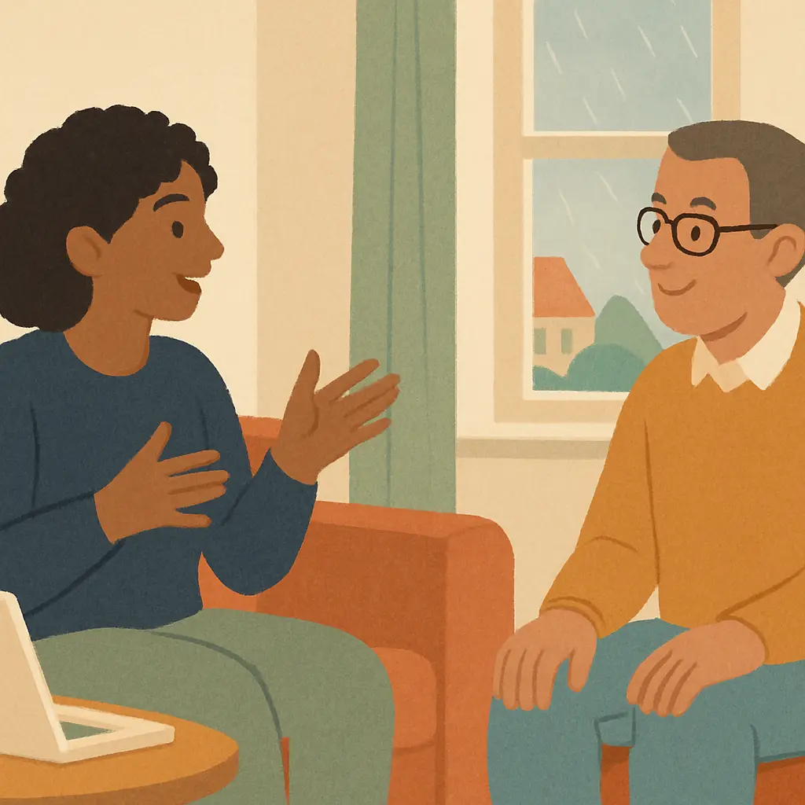
a2/luisteren/l3-q7 minorBeste ouders, de schoolreis van volgende week woensdag gaat niet door vanwege het slechte weer. De nieuwe datum is vrijdag twee mei. De kinderen moeten om half negen op school zijn. Neem lunchpakketten en drinken mee.
Q: Wat is er veranderd?
alt: Twee volwassenen praten in een gezellige woonkamer
audit: minor — The image matches the brief with two adults talking in a cozy living room and rain outside, but it lacks explicit visual clues about the school trip date change or lunch packs, so the MCQ answer cannot be inferred from the image alone.
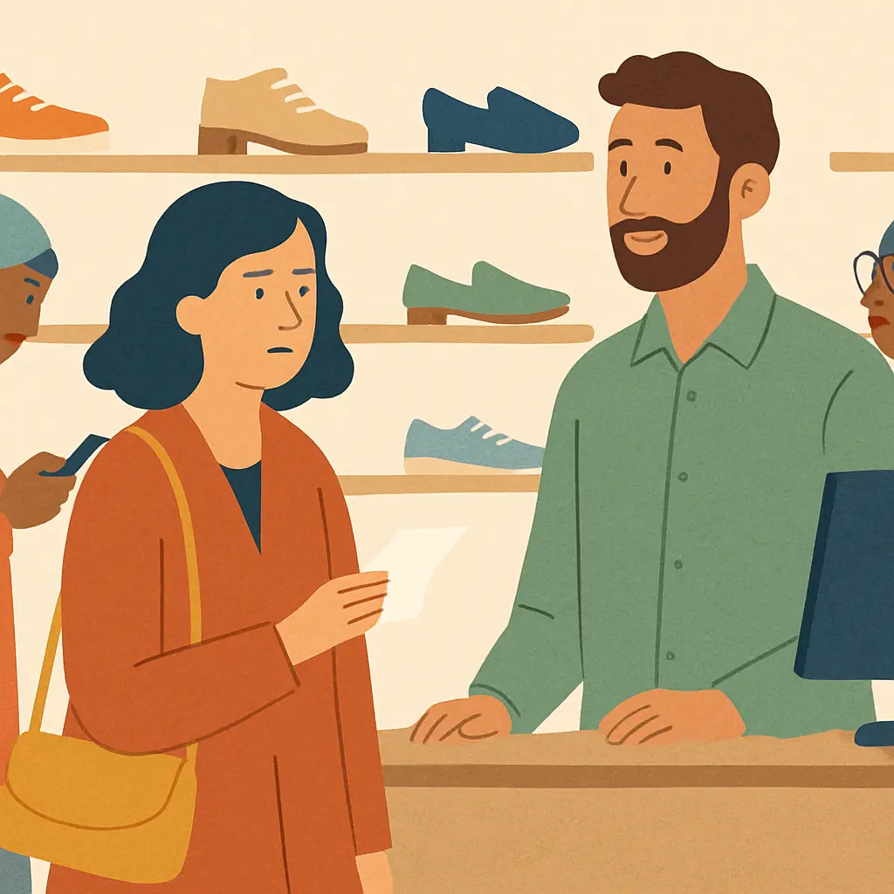
a2/luisteren/l3-q8 REJECTED — answer leakage: shoe shop, answer is SchoenenVrouw: Ik heb deze schoenen gisteren gekocht, maar ze zijn te klein. Kan ik ze ruilen? Man: Heeft u de bon nog? Vrouw: Ja, hier is de bon. Man: Goed, welke maat heeft u nodig? Vrouw: Maat negenendertig, alstublieft.
Q: Wat wil de vrouw ruilen?
alt: Vrouw vraagt iets aan een man in een schoenenwinkel
audit: ok — The image shows a woman holding a paper (receipt) talking to a man behind a counter in a shoe store with shoes on shelves, matching the brief and MCQ context.
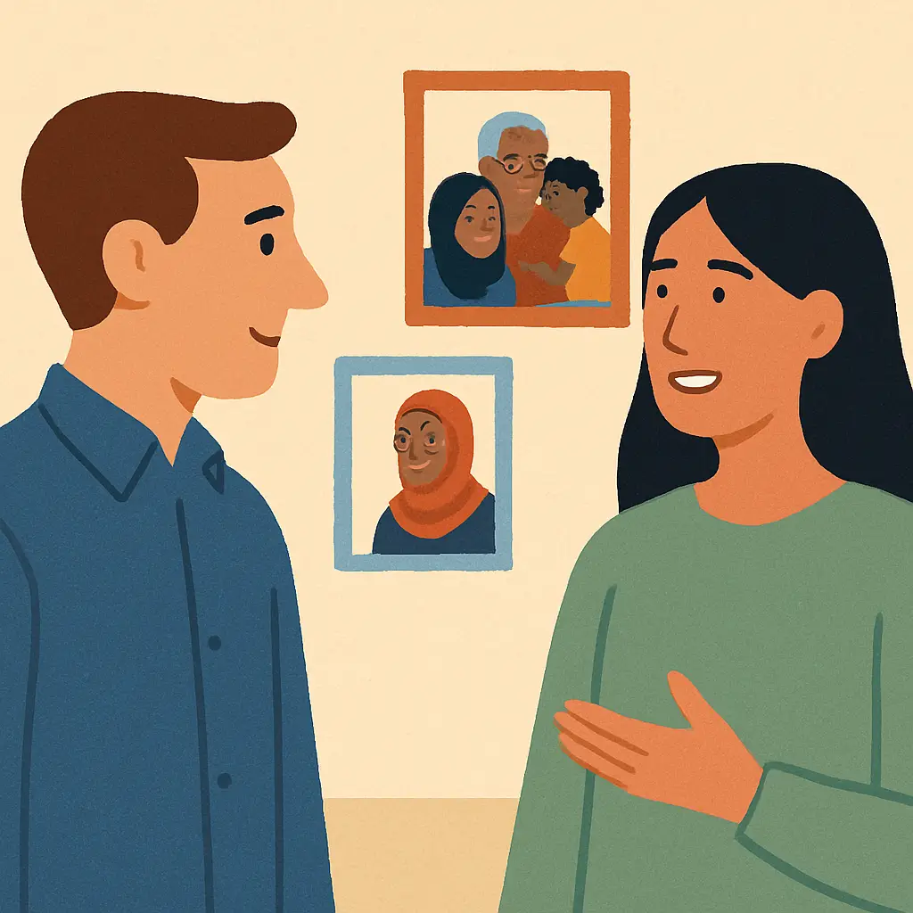
a2/luisteren/l3-q9 minorMan: Zullen we dit weekend iets leuks doen? Vrouw: Ja, goed idee! Zullen we naar de dierentuin gaan? De kinderen vinden dat altijd leuk. Man: Oké, dan gaan we zondag. Is het weer goed? Vrouw: Ja, het wordt droog en een beetje bewolkt.
Q: Waar gaan ze naartoe in het weekend?
alt: Man en vrouw praten in een gezellige woonkamer
audit: minor — The image shows a man and woman facing each other and smiling, but the man has darker brown hair and the woman does not have clearly long black hair; no potted plant is visible; family photos are present but do not fully match the brief; overall the main situation is somewhat recognizable but several details differ.
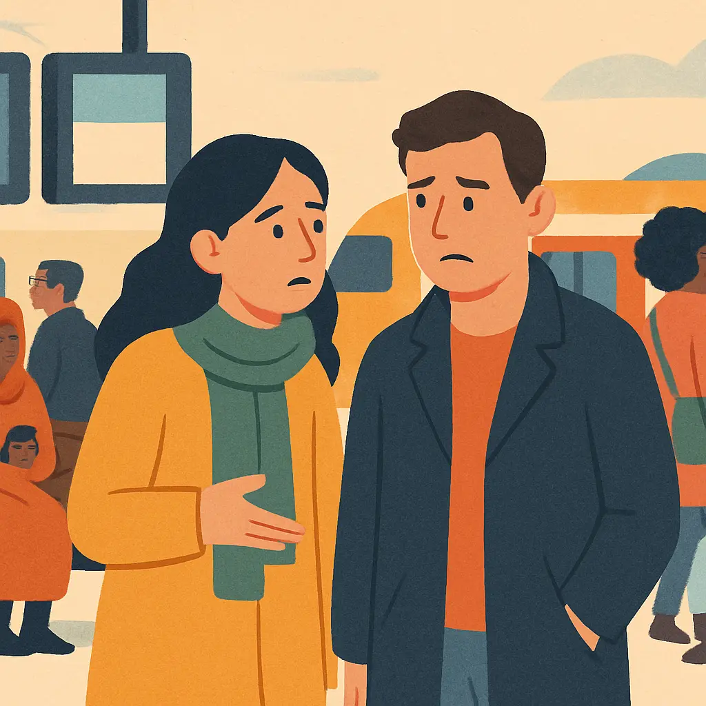
a2/luisteren/l3-q10 minorMan: Ik ben mijn portemonnee kwijt. Ik denk dat ik hem in de bus heb laten liggen. Vrouw: Heb je al gebeld naar het vervoersbedrijf? Man: Nee, nog niet. Heb je het telefoonnummer? Vrouw: Ja, wacht even. Het nummer is nul-negen-honderd-achttien-achttien.
Q: Wat heeft de man verloren?
alt: Man en vrouw praten in een druk treinstation
audit: minor — The image shows a worried man and a concerned woman at a busy train station, matching the brief well. However, benches and information boards mentioned in the brief are not visible, and the image does not visually reveal the lost item for the MCQ.
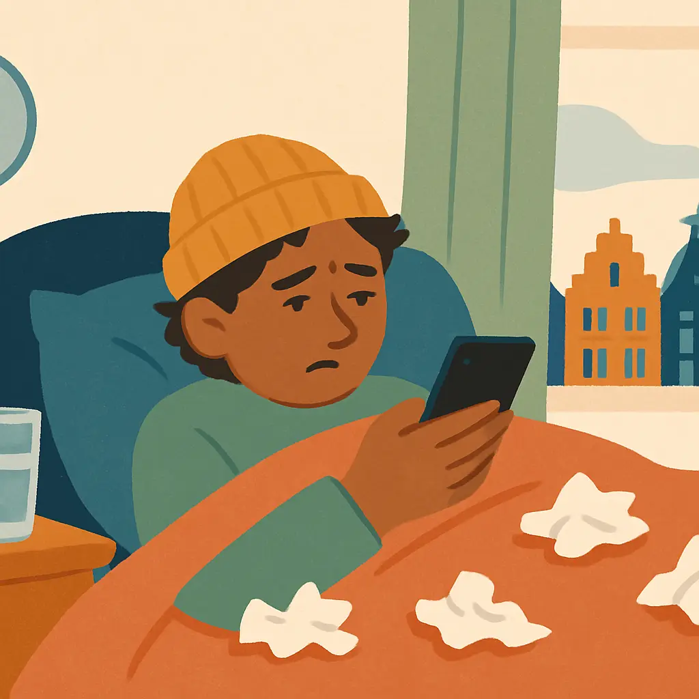
a2/schrijven/q01 minorJe bent ziek en kunt niet naar je werk komen. Schrijf een e-mail aan je baas. • Schrijf dat je ziek bent • Schrijf wanneer je waarschijnlijk weer kunt werken • Vraag wat je moet doen met je taken
alt: Een persoon ligt ziek in bed met een smartphone.
audit: minor — The image clearly shows a sick person in bed with tissues and a phone, matching the brief situation. However, it does not visually indicate the expected return to work date or asking about tasks.
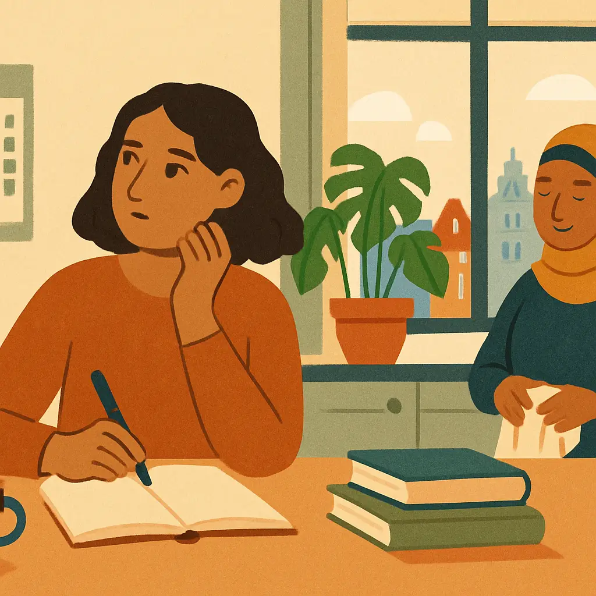
a2/schrijven/q02 minorJe volgt een cursus. Morgen heb je een afspraak met Amber, een andere student. Je kunt niet komen en wilt de afspraak verzetten. • Schrijf dat je de afspraak wilt verzetten • Schrijf waarom • Stel een nieuwe datum voor
alt: Vrouw denkt na over het verzetten van een afspraak
audit: minor — The image shows a young woman at a table with a notebook and books, looking thoughtful and glancing towards a calendar, matching the brief's main situation. However, specific details about Amber, the reason for rescheduling, and a new date are not visually indicated.
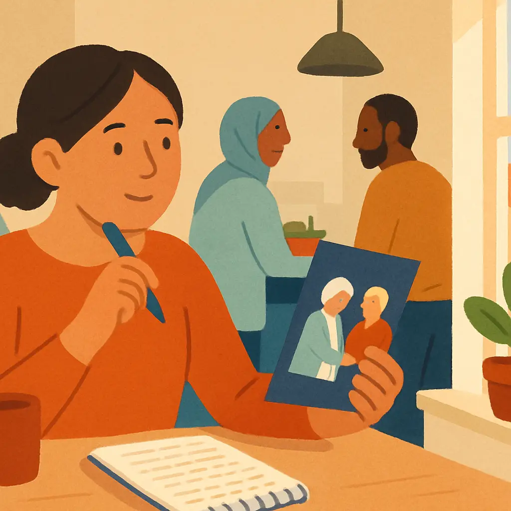
a2/schrijven/q03 minorEen verzorgingshuis zoekt vrijwilligers. Je bent geïnteresseerd. Vul het formulier in: • Voornaam: • Achternaam: • Telefoonnummer: • Hoe vaak bent u beschikbaar? • Waarom wilt u vrijwilligerswerk doen? • Wanneer kunt u beginnen?
alt: Vrouw leest over vrijwilligerswerk in de keuken
audit: minor — The image shows a woman holding a photo and a pen, but no brochure about volunteering at a care home or a notepad with notes is visible. The setting is not clearly a cozy kitchen table with sunlight and a small plant beside her. The main situation of filling a volunteer form is not clearly depicted.
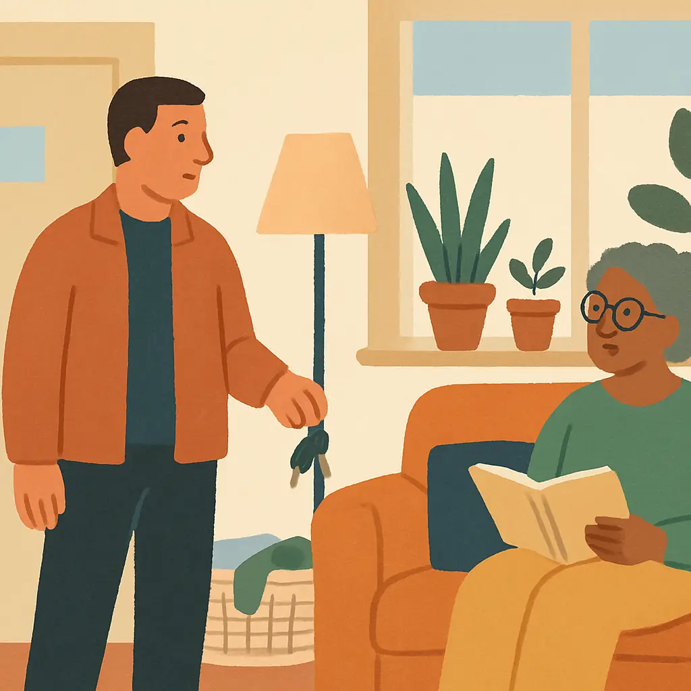
a2/schrijven/q04 minorJe hebt zo rijles en moet weg. Later komt je partner thuis. Hij/zij moet een paar dingen doen. Schrijf een briefje voor je partner. Schrijf drie dingen die hij/zij moet doen: • De plantjes water geven • De was in de wasmachine doen • Het eten opwarmen
alt: Een persoon zegt gedag tegen hun partner in de woonkamer
audit: minor — The image shows a person by the door holding keys and a partner on the couch with plants and a laundry basket visible, but no indication of washing machine or heating food.
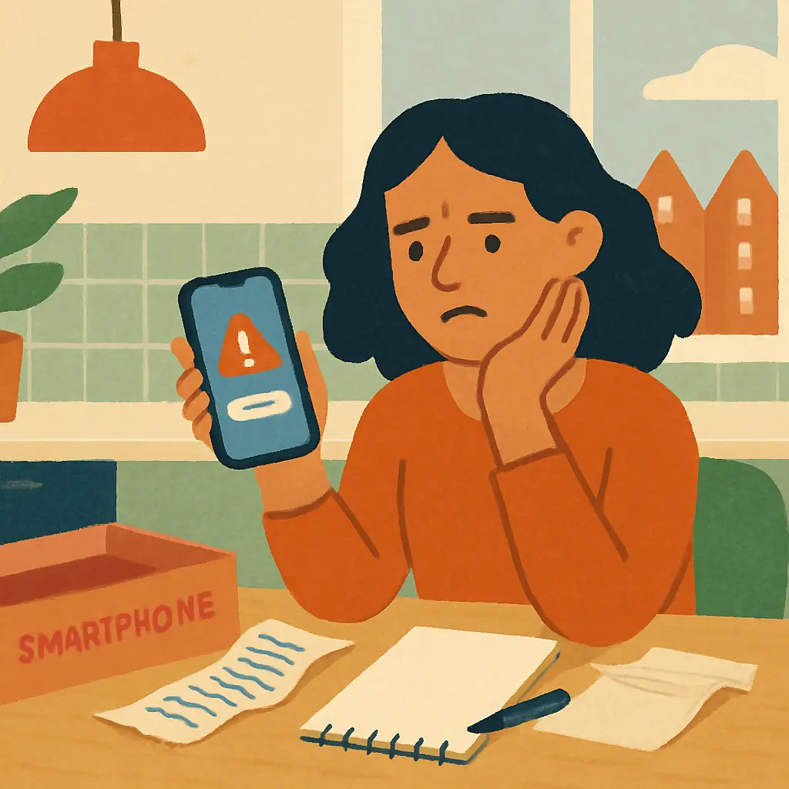
a2/schrijven/q05 REJECTED — text in image (SMARTPHONE box)Je hebt vorige week een telefoon gekocht maar hij werkt niet goed. Schrijf een e-mail aan de winkel. • Schrijf wat het probleem is • Schrijf wanneer je de telefoon hebt gekocht • Vraag om een oplossing
alt: Vrouw met kapotte telefoon aan tafel, kijkt gefrustreerd
audit: minor — The image shows a frustrated woman with a smartphone error, a box labeled 'SMARTPHONE', a receipt, and a notepad with pen, matching the brief situation. However, it lacks visible details about the purchase date, the exact problem, and a clear request for a solution.
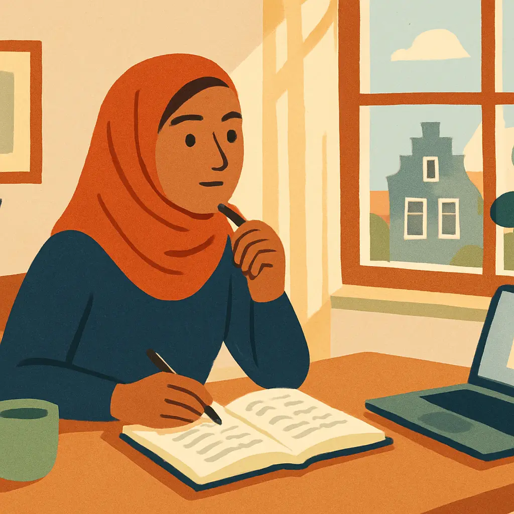
a2/schrijven/q06 minorJe wilt je inschrijven voor een Nederlandse cursus. Schrijf een e-mail naar de school. • Schrijf dat je je wilt inschrijven • Vraag naar de kosten en tijden • Vertel iets over je Nederlandse niveau
alt: Vrouw schrijft aan tafel over een Nederlandse cursus
audit: minor — The image shows a young woman writing and thinking, but lacks many details like multiple books, notes about Dutch skills, tea cup, plants, and a clearly cozy study environment as described in the brief.
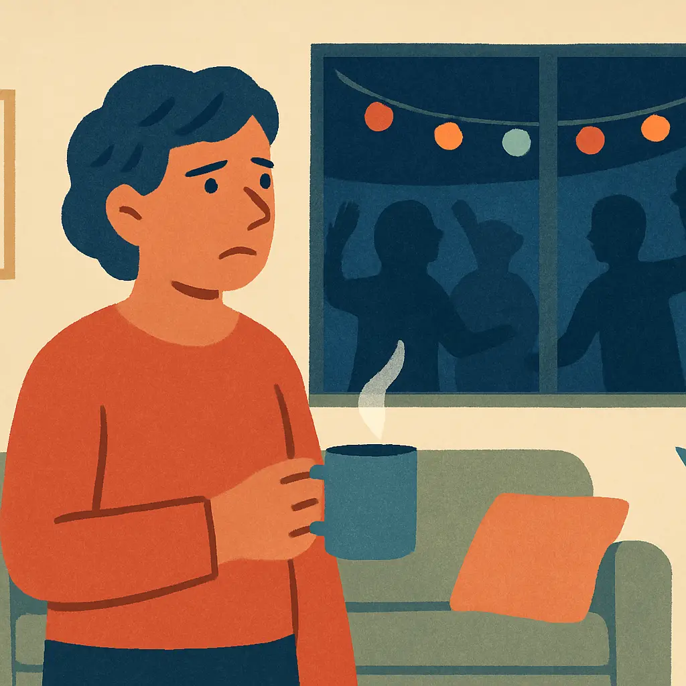
a2/schrijven/q07 minorJe buren hadden een feestje. Het was erg luid na 22.00 uur. Schrijf een briefje aan je buren. • Schrijf dat je buren een feestje hadden • Schrijf dat het geluid te hard was • Vraag of ze iets rustiger kunnen zijn
alt: Een persoon kijkt naar een feestje bij de buren
audit: minor — The image shows a person looking frustrated with a cup of tea and party silhouettes outside, matching the brief's main situation. However, it lacks explicit visual cues about loud noise or the time after 22.00.
a2/schrijven/q08 minorBeschrijf je huisdier of een dier dat je leuk vindt. • Schrijf hoe het eruitziet • Schrijf wat het doet • Schrijf waarom je het leuk vindt
alt: Vrouw aait haar oranje kat op de bank
audit: minor — The main scene matches the brief well, but the bowl of treats and colorful toys are missing.
a2/schrijven/q09 minorJe wilt een boek reserveren in de bibliotheek. Schrijf een e-mail. • Schrijf welk boek je wilt • Vraag of het beschikbaar is • Vraag hoe lang je het kunt lenen
alt: Vrouw schrijft notities aan de keukentafel
audit: minor — The image matches the brief's main situation well but does not show specific details about the book or the email content.
a2/schrijven/q10 minorVertel over een dag dat je iets nieuws hebt geleerd. • Schrijf wat je hebt geleerd • Schrijf hoe je het hebt gedaan • Schrijf wat moeilijk was • Schrijf hoe je je voelde
alt: Vrouw leert iets nieuws in een café met een vriend
audit: minor — The image shows two women at a café with one holding a notebook and a pencil visible, both smiling and engaged, matching the main situation. However, the notebook is not very colorful, the pencil is only partially visible, and the cozy atmosphere with plants and artwork is only partially depicted.
a2/schrijven/q11 minorU moet morgen werken maar u zult later komen. U moet naar de huisarts. Schrijf een email aan uw manager. • U schrijft waarom u mailt. • U schrijft hoe laat u ongeveer op uw werk komt. • U vraagt of dat goed is.
alt: Persoon aan tafel met een kop thee en een kalender
audit: minor — The image shows a concerned person with a calendar and a stethoscope bag, matching the doctor's visit and marked date, but does not indicate the approximate time they will arrive at work.
a2/schrijven/q12 minorU krijgt elke week een wijkkrant. Iedereen uit de buurt mag iets voor deze krant schrijven. U schrijft over de sportdag van de buurt. Schrijf minimaal drie zinnen op. Denk aan: • Wie komen er op de sportdag? • Wat kunnen mensen doen op de sportdag? • Op welke dag is de sportdag…
alt: Buurgenoten bespreken de sportdag in het park
audit: minor — The image shows neighbors gathering and preparing for a sports day with children playing and adults setting up, but it does not specify the day or time of the event.
a2/schrijven/q13 minorU solliciteert voor de functie van verkoper bij bloemenwinkel DE TULP. U kunt alleen op weekdagen werken en u heeft geen rijbewijs. U kunt wel direct starten met werken. Sommige gegevens moet u zelf bedenken. Vul het formulier in: • Persoonsgegevens (naam, adres, postcode, woon…
alt: Jonge persoon schrijft sollicitatie bij bloemenwinkel
audit: minor — The image shows a young person writing at a table with flowers and a laptop, matching the brief's setting and activity. However, specific details about the job application form are not depicted.
a2/schrijven/q14 minorU moet vrijdag werken maar u heeft in de middag een afspraak bij de tandarts. Schrijf een email aan uw manager. • U schrijft waarom u mailt. • U schrijft hoe laat u weg moet. • U schrijft dat u de rest van de dag thuis werkt. Schrijf in hele zinnen.
alt: Persoon kijkt bezorgd naar een afspraakkaart bij de tafel
audit: minor — The image shows a person concerned about a dental appointment and working at a laptop, matching the main situation, but does not specify Friday, the exact time to leave, or that they will work from home afterwards.
a2/schrijven/q15 minorU volgt een cursus Chinees. U hebt les in de avond. U kunt niet meer in de avond naar de lessen komen. Schrijf een email aan uw docent. • U schrijft waarom u mailt. • U schrijft waarom u niet meer in de avond naar de lessen kunt komen. Bedenk het zelf. • U vraagt of u de les in…
alt: Vrouw aan tafel met notitieboek en pen
audit: minor — The image shows a concerned young woman writing with a child playing in the background and a calendar on the wall, matching the brief's situation well, but it does not explicitly indicate a Chinese course or evening lessons or that she is writing an email.
a2/schrijven/q16 minorU krijgt elke week een wijkkrant. Iedereen uit de buurt mag iets voor deze krant schrijven. U schrijft over uw verjaardag. Schrijf minimaal drie zinnen op. Denk aan: • Wat doet u graag op uw verjaardag? • Waar viert u uw verjaardag? • Wie komen op uw verjaardag? Schrijf in hel…
alt: Een feestelijke woonkamer met ballonnen en een verjaardagstaart
audit: minor — The image shows a cheerful living room with colorful balloons, people setting a table with a cake and snacks, and wrapped gifts, matching the birthday gathering theme. However, the birthday banner is replaced by triangular flags, and the window does not clearly show a sunny day.
a2/schrijven/q17 minorU heeft een auto gehuurd bij autoverhuurbedrijf 'BESTE HUURAUTO'S'. U was niet blij met de auto. Het was een Opel met kentekennummer 21-KBB-7. U heeft twee klachten over de auto. Vul het beoordelingsformulier van het autoverhuurbedrijf in. Sommige gegevens moet u zelf bedenken. …
alt: Persoon met klachten over huurauto in parkeerplaats
audit: minor — The image shows a person with a pen and paper in a parking lot next to a silver car and a rental office with an employee, matching the main situation. However, no text or specific details like license plate or complaints are visible.
a2/schrijven/q18 minorU werkt in een kantine. Straks komt uw collega Jesper. Hij moet een paar dingen doen. Schrijf een briefje voor Jesper. Vertel wat hij moet doen. Schrijf drie dingen op. Schrijf in hele zinnen.
alt: Een medewerker in de kantine kijkt naar een takenlijst
audit: minor — The image shows a staff member with a checklist in a canteen with colleagues in the background, matching the brief situation. However, Jesper and the specific tasks are not visually detailed.
a2/schrijven/q19 minorU heeft volgende week een bedrijfsuitje. U heeft geen auto. U vraagt of uw collega Marianne u kan ophalen. • U schrijft dat u geen auto heeft. • U vraagt of uw collega u kan ophalen. • U schrijft waar u woont (bedenk zelf een adres). Schrijf in hele zinnen.
alt: Een persoon staat bij de voordeur en wacht
audit: minor — The image shows a person at the front door with a bicycle and flowers, gesturing as if waiting, matching the brief's situation. However, it does not explicitly show the details about no car, asking for a pickup, or an address.
a2/schrijven/q20 minorU krijgt elke week een wijkkrant. Iedereen uit de buurt mag iets voor deze krant schrijven. U schrijft over uw fiets. Schrijf minimaal drie zinnen op. Denk aan: • Waar gaat u op de fiets naartoe? • Hoe ziet uw fiets eruit? • Met wie fietst u wel eens? Schrijf in hele zinnen.
alt: Een persoon met een blauwe fiets in een park
audit: minor — The image shows people with a bicycle and a bike path, matching the brief's main situation, but the bike is not clearly bright blue and the person is not clearly smiling or pointing towards a scenic path with flowers as described.
a2/schrijven/q21 REJECTED — text in image (book title)U wilt zich graag inschrijven voor een cursus Chinees bij Talenschool WERELDTALEN. U wilt twee keer per week les en u wilt groepslessen. Sommige gegevens moet u zelf bedenken. Vul het formulier in: • Persoonsgegevens (naam, adres, postcode, woonplaats, telefoon, geslacht, geboo…
alt: Vrouw kijkt naar een brochure voor een cursus Chinees
audit: minor — The image shows a woman thinking and reading a brochure about a Chinese language course, but it lacks details about registration, lesson frequency, type, level, and personal data.
a2/schrijven/q22 minorU gaat volgende week op vakantie. U wilt aan uw buurman, Mark, vragen of hij de planten water kan geven. U schrijft hem een e-mail. • U schrijft waarom u de email stuurt. • U vraagt of uw buurman volgende week de planten water kan geven. • U vertelt hem waar de sleutel van de vo…
alt: Persoon kijkt naar planten en houdt een sleutel vast
audit: minor — The image shows a person holding a key and a watering can nearby, looking out the window with plants present, matching the main situation. However, it lacks textual or visual details about the email content, the specific request, and the key's location.
a2/schrijven/q23 minorU organiseert volgende week een spelletjesavond bij u thuis. U nodigt uw vrienden uit. Schrijf een e-mail aan uw vrienden. • U schrijft waarom u mailt. • U schrijft welke dag en hoe laat de spelletjesavond is. • U vraagt of uw vrienden iets willen meenemen (bijvoorbeeld drinken…
alt: Een persoon organiseert een spelletjesavond in de woonkamer
audit: minor — The image clearly shows a cozy living room with people around a table set for a game night, including snacks, drinks, and a game box, matching the main situation. However, it lacks explicit details about the day/time and a request for friends to bring items.
a2/schrijven/q24 REJECTED — text in image (Espana book)U volgt een cursus Spaans bij een school. U bent niet tevreden over de cursus. Schrijf een e-mail aan de school. • U schrijft waarom u mailt. • U schrijft waarom u niet tevreden bent. Bedenk het zelf. • U vraagt of u kunt stoppen met de cursus en uw geld terug kunt krijgen. Sc…
alt: Vrouw is ontevreden over haar Spaanse cursus aan tafel
audit: minor — The image shows a frustrated young woman with a Spanish textbook and notebook, matching the situation well. However, it does not explicitly show the reason for dissatisfaction or the request to stop and refund, which are key parts of the brief.
a2/schrijven/q25 minorU volgt een cursus. U moet een opdracht inleveren, maar u bent niet klaar. Schrijf een e-mail aan uw docent. • U schrijft waarom u mailt. • U schrijft waarom u niet klaar bent. Bedenk het zelf. • U vraagt of u de opdracht later kunt inleveren. Schrijf in hele zinnen.
alt: Student met boeken en een laptop aan een bureau
audit: minor — The image shows a young adult student at a cluttered desk, looking frustrated and writing, matching the brief well. The laptop is open but not in use. However, there is no visible cup of coffee on the desk.
a2/schrijven/q26 minorU werkt bij een bibliotheek. U wilt graag in het weekend werken. Schrijf een e-mail naar uw manager. • U schrijft waarom u mailt. • U schrijft waarom u in het weekend wilt werken. Bedenk het zelf. • U vraagt of u in het weekend kunt werken. Schrijf in hele zinnen.
alt: Vrouw in de bibliotheek met notepad en pen
audit: minor — The image shows a young woman in a library with a notepad and pen, matching the setting and activity, but does not explicitly show the email writing or mention of weekend work.
a2/schrijven/q27 minorUw portemonnee is gestolen. U schrijft een e-mail aan de politie. Schrijf een e-mail aan de politie. • U schrijft waarom u mailt. • U schrijft wat er is gestolen en waar. • U vraagt wat u moet doen. Schrijf in hele zinnen.
alt: Een persoon kijkt bezorgd naar lege zakken
audit: minor — The image clearly shows a person distressed about empty pockets in a busy street with a shop in the background, matching the brief well. However, it does not explicitly show the wallet or the act of theft, nor the exact location where the wallet was stolen.
a2/schrijven/q28 minorU wilt een fiets kopen. U heeft een advertentie gezien. Schrijf een e-mail aan de verkoper. • U schrijft waarom u mailt. • U stelt een vraag over de fiets. Bedenk het zelf. • U vraagt wanneer u de fiets kunt bekijken. Schrijf in hele zinnen.
alt: Vrouw kijkt naar een fietsadvertentie in haar huis
audit: minor — The image shows a young woman looking thoughtfully at a bicycle advertisement and preparing to write, matching the brief well. However, the bicycle helmet hanging on the wall is missing.
a2/schrijven/q29 minorUw fiets is kapot. U brengt de fiets naar de fietsenmaker. Schrijf een briefje voor de fietsenmaker. • U schrijft wat er kapot is. • U vraagt hoeveel de reparatie kost. • U schrijft wanneer u de fiets wilt ophalen. Schrijf in hele zinnen.
alt: Een persoon wijst naar een fiets met een lekke band
audit: minor — The image clearly shows a person discussing a bike repair with a mechanic, matching the brief. However, details about repair cost and pickup time are not visible.
a2/schrijven/q30 minorU gaat op vakantie. U vraagt aan uw vriend of hij/zij op uw kat kan passen. Schrijf een e-mail aan uw vriend. • U schrijft waarom u mailt. • U schrijft wanneer u op vakantie gaat. • U vraagt of uw vriend op de kat kan passen. • U schrijft wat uw vriend moet doen voor de kat. S…
alt: Persoon denkt na over vakantie en kat verzorgen
audit: minor — The image shows a person looking at a calendar with a suitcase and a cat nearby, matching the brief. However, it lacks specific details about the vacation dates and care instructions for the cat.
a2/schrijven/q31 minorU werkt vandaag niet, maar u heeft een vraag voor uw collega. Schrijf een e-mail aan uw collega. • U schrijft waarom u mailt. • U stelt een vraag over het werk. Bedenk het zelf. • U bedankt uw collega. Schrijf in hele zinnen.
alt: Zieke persoon op de bank met een kopje thee
audit: minor — The image mostly fits the brief but the laptop is open instead of closed, and the cup of tea is on the coffee table not a side table. The person looks thoughtful but not clearly holding a tissue to the face.
a2/schrijven/q32 minorU organiseert een feestje voor uw verjaardag. U nodigt uw collega uit. Schrijf een e-mail aan uw collega. • U schrijft waarom u mailt. • U schrijft wanneer en waar het feestje is. • U vraagt of uw collega kan komen. Schrijf in hele zinnen.
alt: Een persoon nodigt een collega uit voor een feestje
audit: minor — The image clearly shows a cheerful person with party decorations, an invitation card, and a calendar with a date circled, matching the birthday party invitation scenario. However, the image does not explicitly show the reason for mailing, the exact date and place of the party, or a direct invitation question.
a2/schrijven/q33 minorU kunt volgende week niet werken op woensdag. U wilt met uw collega van dienst ruilen. Schrijf een e-mail aan uw collega. • U schrijft waarom u mailt. • U schrijft waarom u niet kunt werken. Bedenk het zelf. • U vraagt of uw collega met u wil ruilen. Schrijf in hele zinnen.
alt: Een persoon zit aan de tafel met een notitieblok
audit: minor — The image shows a person looking concerned with a cup of tea, a notepad and pen on the table, and a colleague waving from the doorway, matching the brief well. However, the calendar with a marked date is not visible.
a2/schrijven/q34 minorUw kind is ziek en kan niet naar de kinderopvang. Schrijf een e-mail aan de kinderopvang. • U schrijft waarom u mailt. • U schrijft wat uw kind heeft. • U schrijft wanneer uw kind weer kan komen. Schrijf in hele zinnen.
alt: Ouder met zieke kind op de bank in de keuken
audit: minor — The image shows a concerned parent holding a tissue and a child lying on the couch, suggesting illness. However, the child is not visibly wrapped in a blanket nor has a thermometer in their mouth as described in the brief.
a2/schrijven/q35 minorU krijgt elke week een wijkkrant. Iedereen uit de buurt mag iets voor deze krant schrijven. U schrijft over uw vakantie. Schrijf minimaal drie zinnen op. Denk aan: • Waar ging u op vakantie? • Wat deed u op vakantie? • Hoe was het weer? Schrijf in hele zinnen.
alt: Een persoon kijkt naar een fotoalbum over hun vakantie
audit: minor — The image clearly shows a person looking at a photo album with vacation pictures, a sunny window with flowers, and a cup of coffee, matching the brief's main situation. However, there is no visible indication of writing or the neighborhood newspaper context.
a2/schrijven/q36 minorU krijgt elke week een wijkkrant. Iedereen uit de buurt mag iets voor deze krant schrijven. U schrijft over uw favoriete muziek. Schrijf minimaal drie zinnen op. Denk aan: • Welke muziek vindt u mooi? • Wanneer luistert u naar muziek? • Waarom vindt u deze muziek mooi? Schrijf…
alt: Vrouw luistert naar muziek op de bank met een platenspeler
audit: minor — The image shows a young woman with headphones listening to music on a sofa with some cushions and a plant, and a record player is visible, but the cushions are not very colorful and the vinyl records are not clearly stacked.
a2/schrijven/q37 minorU krijgt elke week een wijkkrant. Iedereen uit de buurt mag iets voor deze krant schrijven. U schrijft over Nederland. Schrijf minimaal drie zinnen op. Denk aan: • Wat vindt u mooi aan Nederland? • Wat vindt u niet zo leuk aan Nederland? • Wat is anders dan in uw land? Schrijf…
alt: Vrouw zit aan tafel en kijkt naar buiten
audit: minor — The image shows a person writing at a table with postcards and a cup of tea, and a Dutch landscape with windmills visible outside. However, the person appears to be a younger man with short curly hair and glasses, not a middle-aged woman, and the postcards are not clearly colorful.
a2/schrijven/q38 minorU krijgt elke week een wijkkrant. Iedereen uit de buurt mag iets voor deze krant schrijven. U schrijft over een goede vriend. Schrijf minimaal drie zinnen op. Denk aan: • Wie is uw goede vriend? • Hoe kent u deze vriend? • Wat doet u samen met uw vriend? Schrijf in hele zinnen…
alt: Twee vrienden zitten op de bank en lachen samen
audit: minor — The image shows two friends sitting on a couch with two mugs and a small plant on the coffee table, matching the cozy living room and friendly atmosphere. However, the photos on the walls and books on a shelf are minimal and the warm lighting is not very evident.
a2/schrijven/q39 U krijgt elke week een wijkkrant. Iedereen uit de buurt mag iets voor deze krant schrijven. U schrijft over uw favoriete eten. Schrijf minimaal drie zinnen op. Denk aan: • Wat is uw favoriete eten? • Wanneer eet u dit? • Waarom vindt u dit lekker? Schrijf in hele zinnen.
alt: Persoon kookt en glimlacht in de keuken
audit: major — The image shows a person chopping vegetables but lacks a cozy kitchen table setting, a plate of prepared food, sunlight streaming, and a notebook with a pen; the scene does not clearly match the brief.
a2/schrijven/q40 minorU krijgt elke week een wijkkrant. Iedereen uit de buurt mag iets voor deze krant schrijven. U schrijft over de leukste dag van de week. Schrijf minimaal drie zinnen op. Denk aan: • Welke dag vindt u het leukst? • Wat doet u op die dag? • Waarom vindt u die dag leuk? Schrijf in…
alt: Persoon denkt na over de leukste dag van de week
audit: minor — The image shows a person sitting at a kitchen table with a cup of coffee looking out the window at children playing, matching the main situation. Magazines are present but only abstractly represented. The person's cheerfulness is implied but not strongly emphasized.
a2/schrijven/q41 minorUw fiets is gestolen. U doet aangifte bij de politie. Vul het meldingsformulier in: • Persoonsgegevens (naam, adres, postcode, woonplaats, telefoonnummer, e-mail) • Wat is er gestolen? • Waar is het gestolen? • Wanneer is het gestolen? • Heeft u nog andere informatie? Sommige …
alt: Persoon meldt een gestolen fiets bij de politie
audit: minor — The image clearly shows a person reporting to a police officer with a helmet, fitting the stolen bike report scenario, but no textual details or forms are visible.
a2/schrijven/q42 REJECTED — text in image (FIT poster, RICO flyer)U wilt lid worden van Sportschool Rico. U kunt alleen in de ochtend sporten. Vul het inschrijfformulier in: • Persoonsgegevens (naam, adres, postcode, woonplaats, telefoonnummer, geboortedatum, e-mail) • Wanneer wilt u sporten? (ochtend/middag/avond) • Welke sporten wilt u doen…
alt: Een vrouw in sportkleding bij de sportschool receptie
audit: minor — The image shows a young woman in workout clothes looking at a brochure for Sportschool Rico and a receptionist behind the desk, matching the main situation. However, exercise equipment and motivational posters are not clearly visible, and the inscription form details are not shown.
a2/schrijven/q43 minorU solliciteert voor een baan bij een supermarkt. U wilt fulltime werken. Vul het sollicitatieformulier in: • Persoonsgegevens (naam, adres, postcode, woonplaats, telefoonnummer, geboortedatum, e-mail) • Wilt u fulltime of parttime werken? • Kunt u in het weekend werken? • Wat i…
alt: Vrouw vult een sollicitatieformulier in de keuken in
audit: minor — The image clearly shows a young woman filling out a form at a kitchen table with a coffee cup and plant nearby, matching the brief's main situation. However, the specific details required on the form are not visible.
a2/schrijven/q44 minorU heeft een wasmachine gekocht. De winkel vraagt u om een beoordeling. Vul het beoordelingsformulier in: • Persoonsgegevens (naam, e-mail) • Welk product heeft u gekocht? • Hoe tevreden bent u? (heel tevreden/tevreden/niet tevreden) • Wat vindt u goed aan het product? • Wat kan…
alt: Een stel schrijft een beoordeling over hun wasmachine
audit: minor — The image shows a diverse couple discussing a washing machine with one person taking notes, matching the brief well. However, personal details and specific review content are not visible, which is expected for an illustration.
a2/spreken/s1-p1-q1 minorVeel Nederlanders eten om 18.00 uur 's avonds. Wat vindt u daarvan?
alt: Vrienden praten in een gezellige keuken met ingrediënten
audit: minor — The image shows three diverse friends chatting and cooking with colorful ingredients, but sunlight through the window is not visible.
a2/spreken/s1-p1-q2 minorNaar welke muziek luistert u graag? Zeg ook hoe vaak u daar naar luistert.
alt: Vrienden praten gezellig in een woonkamer
audit: minor — The image shows three friends on a sofa with one talking and others listening, and music-related items on a shelf, but sunlight streaming through the window is not clearly visible.
a2/spreken/s1-p1-q3 minorWat vindt u van het weer in Nederland? Vertel ook hoe het weer is in uw eigen land.
alt: Vrienden praten samen in een café buiten
audit: minor — The image shows a diverse group of three friends at an outdoor café table with drinks and snacks, engaged in lively conversation with one person gesturing, but the sky is partly cloudy and no other patrons are visible.
a2/spreken/s1-p1-q4 minorIk wandel vaak naar mijn werk. Wat vindt u van wandelen?
alt: Drie mensen wandelen samen in een park
audit: minor — The image shows four people walking and smiling, but the background does not clearly show a couple sitting on a bench or a path lined with trees and flowers. The setting is ambiguous and does not clearly resemble a vibrant city park on a sunny day.
a2/spreken/s2-p1-q1 minorWat voor eten eet u het liefst? Vertel ook waarom.
alt: Vrienden koken samen in een gezellige keuken
audit: minor — The image shows three friends cooking together with one chopping vegetables, one stirring a pot, and one holding a plate, matching the brief. However, some details like colorful ingredients scattered around and sunlight are less emphasized.
a2/spreken/s2-p1-q2 minorWat doet u graag in uw vrije tijd? Vertel ook hoe vaak u dat doet.
alt: Drie vrienden in een gezellige woonkamer met hobby's
audit: minor — The main activities (reading, painting, playing guitar) and group setting match the brief well, but some environmental details like sunlight, plants, and scattered art supplies are missing.
a2/spreken/s2-p1-q3 minorIn Nederland sneeuwt het soms. Wat vindt u daarvan?
alt: Vrienden praten in een café met een winterse sfeer
audit: minor — The image shows three friends with warm drinks and a winter scene outside, but they are standing very close and not clearly looking out the window; only one person gestures, but the café atmosphere and wooden tables are not clearly visible.
a2/spreken/s2-p1-q4 minorIk krijg graag een cd op mijn verjaardag. Welk cadeau krijgt u het liefst?
alt: Vrienden praten in een gezellige woonkamer
audit: minor — The image shows a cozy living room with friends, one holding a small unwrapped gift, and a festive atmosphere, matching the brief well. However, the gift is a box, not a CD as mentioned in the intended brief.
a2/spreken/s3-p1-q1 minorWat voor hobby's heeft u nu? Vertel ook wat voor hobby's u vroeger had.
alt: Vrienden praten in een gezellige woonkamer
audit: minor — The image shows three friends talking in a cozy living room, one holding a cup of tea, but lacks visible guitar, paintbrush, and clear sunny window background as described in the brief.
a2/spreken/s3-p1-q2 minorHoe vaak gebruikt u een computer? Vertel ook waarvoor u de computer gebruikt.
alt: Vrienden praten samen in een gezellige woonkamer
audit: minor — The image shows three friends in a cozy living room with a warm atmosphere, one holding a cup, another gesturing, and the third nodding, matching the brief well. However, there is no visible computer or indication of computer use, which is relevant to the exam question.
a2/spreken/s3-p1-q3 REJECTED — wrong scene: Sinterklaas question shows menorah + Easter eggsIn Nederland geven mensen elkaar met Sinterklaas cadeautjes. Wat vindt u daarvan?
alt: Vrienden zitten samen in een gezellige woonkamer
audit: minor — The image shows three friends drinking from mugs but the diversity is not as described (one woman wears a hijab but no clear Asian person), the table decorations are colorful but look like Easter eggs, not neutral festive decorations, and the setting is not clearly a cozy living room with a sofa.
a2/spreken/s3-p1-q4 minorReist u liever met de trein of de auto? Vertel ook waarom.
alt: Vrienden praten in een café over reizen
audit: minor — The image shows a diverse group of friends animatedly discussing around a table with drinks, one person gesturing enthusiastically, and a window with a view of a lively street, matching the brief well. However, snacks are not clearly visible on the table.
a2/spreken/pictures/markt minorBekijk de afbeelding. Beschrijf wat je ziet. Wat doen de mensen? Waar zijn ze? Tip: Beschrijf de markt. Wat kun je kopen? Hoeveel mensen zijn er? Wat is het weer?
alt: Een drukke markt met kraampjes en mensen in de zon
audit: minor — The image shows a lively outdoor market with fruit, bread, and flowers, and about eight people including a parent with child and a woman choosing tulips. However, cheese wheels and apples are not clearly visible, the sky is blue but without distinct white clouds, and the vendor is handing a bag but not specifically apples. The man paying is not clearly depicted.
a2/spreken/pictures/park minorBekijk de afbeelding. Beschrijf wat je ziet. Wat gebeurt er? Tip: Beschrijf het park. Wat doen de mensen? Zijn er kinderen? Dieren?
alt: Een park met kinderen, een hond, eenden en mensen op het gras
audit: minor — The image matches almost all elements but lacks clear Dutch architectural or cultural markers to confirm it is a Dutch city park.
a2/spreken/pictures/stad minorBekijk de twee afbeeldingen. De ene toont een drukke stad, de andere een rustig dorp. Vergelijk de twee plekken. Wat is hetzelfde? Wat is anders? Tip: Vergelijk stad en dorp. Denk aan: mensen, gebouwen, verkeer, natuur.
alt: Een drukke straat in de stad met tram, fietsers en veel mensen
audit: minor — The image shows a busy Dutch city street with tall buildings, many cyclists, a tram, cars, shops with awnings, and some small trees. The canal houses are present but not clearly distinguishable as such.
a2/spreken/pictures/dorp minorBekijk de twee afbeeldingen. De ene toont een drukke stad, de andere een rustig dorp. Vergelijk de twee plekken. Wat is hetzelfde? Wat is anders? Tip: Vergelijk stad en dorp. Denk aan: mensen, gebouwen, verkeer, natuur.
alt: Een rustig dorp met huizen, een kerk, weilanden en een molen
audit: minor — The image shows a small church, narrow road with one cyclist and one person walking a dog, green fields, cows, a windmill, and big trees, matching the brief well. However, the houses are not clearly shown as low brick houses with gardens.
a2/spreken/pictures/zomer Bekijk de twee afbeeldingen. De ene toont een zomer dag, de andere een winter dag. Vergelijk de twee. Wat is hetzelfde? Wat is anders? Tip: Vergelijk de seizoenen. Denk aan: weer, kleding, activiteiten.
alt: Een zomerdag aan het strand met zon en zwemmende mensen
audit: ok — The image shows a hot summer day at a beach with bright sun, people in summer clothes, children building a sandcastle, someone eating ice cream, a family under a parasol, and people swimming, matching the brief well.
a2/spreken/pictures/winter minorBekijk de twee afbeeldingen. De ene toont een zomer dag, de andere een winter dag. Vergelijk de twee. Wat is hetzelfde? Wat is anders? Tip: Vergelijk de seizoenen. Denk aan: weer, kleding, activiteiten.
alt: Een winterdag met sneeuw, een sneeuwpop en schaatsers
audit: minor — The image shows snow on roofs and ground, people in winter clothes, children making a snowman, people ice skating on a frozen canal, and someone drinking hot chocolate. However, the sky is blue-grey rather than clearly grey as specified.
a2/spreken/pictures/story1-a minorBekijk de drie afbeeldingen. Vertel een verhaal over wat er gebeurt. Gebruik de afbeeldingen in de juiste volgorde. Tip: Afbeelding 1: Een man kijkt naar zijn fiets. Afbeelding 2: De band is lek. Afbeelding 3: Hij repareert de fiets. Vertel het verhaal.
alt: Een man kijkt naar zijn fiets
audit: minor — The man matches the description and is looking at his bike with a worried expression, hand on handlebar. The setting and details fit the brief well, though the facial expression could be more pronounced to clearly show puzzlement or worry.
a2/spreken/pictures/story1-b minorBekijk de drie afbeeldingen. Vertel een verhaal over wat er gebeurt. Gebruik de afbeeldingen in de juiste volgorde. Tip: Afbeelding 1: Een man kijkt naar zijn fiets. Afbeelding 2: De band is lek. Afbeelding 3: Hij repareert de fiets. Vertel het verhaal.
alt: De voorband van de fiets is lek
audit: minor — The image mostly matches the brief with a man crouching next to a bicycle and pointing at a flat front tyre, wearing a mustard-yellow jacket and dark jeans. Minor details like the tyre being fully squashed and the man's exact age and expression are less clear.
a2/spreken/pictures/story1-c minorBekijk de drie afbeeldingen. Vertel een verhaal over wat er gebeurt. Gebruik de afbeeldingen in de juiste volgorde. Tip: Afbeelding 1: Een man kijkt naar zijn fiets. Afbeelding 2: De band is lek. Afbeelding 3: Hij repareert de fiets. Vertel het verhaal.
alt: De man repareert zijn fiets
audit: minor — The main situation is clear and the man is repairing the bike upside down with tools nearby, but some specific details from the brief are not clearly visible or explicit in the image.
a2/spreken/pictures/story2-a minorBekijk de drie afbeeldingen. Vertel een verhaal over wat er gebeurt. Tip: Afbeelding 1: Een vrouw gaat naar de supermarkt. Afbeelding 2: Ze doet boodschappen. Afbeelding 3: Ze kookt thuis. Vertel het verhaal.
alt: Een vrouw gaat naar de supermarkt
audit: minor — The woman matches the description well, but her age is not clearly indicated and the shopping bag is a canvas tote rather than an empty shopping bag; overall the scene fits the brief.
a2/spreken/pictures/story2-b minorBekijk de drie afbeeldingen. Vertel een verhaal over wat er gebeurt. Tip: Afbeelding 1: Een vrouw gaat naar de supermarkt. Afbeelding 2: Ze doet boodschappen. Afbeelding 3: Ze kookt thuis. Vertel het verhaal.
alt: De vrouw doet boodschappen
audit: minor — The image shows a woman with a navy headscarf and terracotta coat shopping and picking tomatoes, but the trolley contents and the canvas shopping bag are not clearly visible, and her age is not apparent.
a2/spreken/pictures/story2-c minorBekijk de drie afbeeldingen. Vertel een verhaal over wat er gebeurt. Tip: Afbeelding 1: Een vrouw gaat naar de supermarkt. Afbeelding 2: Ze doet boodschappen. Afbeelding 3: Ze kookt thuis. Vertel het verhaal.
alt: De vrouw kookt thuis
audit: minor — The image shows a woman with a navy headscarf, terracotta coat, and canvas bag cooking pasta with groceries on the counter, matching the brief well. However, her age is not clearly indicated as 'in her forties'.
a2/spreken/pictures/restaurant minorBekijk de afbeelding. Beschrijf wat je ziet. Wat doen de mensen? Wat eten of drinken ze? Tip: Beschrijf het restaurant. Hoeveel mensen zijn er? Wat staat er op tafel? Wat is de sfeer?
alt: Vrienden eten samen in een gezellig restaurant
audit: minor — The image shows a group of four friends eating and a waiter carrying plates in a restaurant, but the specific food items and drink details from the brief are not clearly visible or fully matching; lighting and atmosphere are warm but not explicitly evening or distinctly Dutch.
a2/spreken/pictures/klas Bekijk de afbeelding. Beschrijf wat je ziet. Wat doen de kinderen? Wat doet de juf of meester? Tip: Beschrijf het klaslokaal. Hoeveel kinderen zijn er? Wat leren ze? Wat hangt aan de muur?
alt: Een juf geeft les aan kinderen in een klaslokaal
audit: ok — The image shows a teacher explaining a lesson with simple drawings on the whiteboard, about twelve children at desks with notebooks, some raising hands, a world map, children's drawings, and a plant on the windowsill, matching the brief well.
a2/spreken/pictures/kantoor minorBekijk de twee afbeeldingen. De ene toont werken op kantoor, de andere werken thuis. Waar werkt u liever? Waarom? Tip: Vergelijk kantoor en thuiswerken. Denk aan: collega's, reistijd, rust, concentratie.
alt: Collega's werken samen op kantoor
audit: minor — The image shows a modern open-plan office with colleagues working at desks and talking, a coffee machine, big windows, and plants. The computer screens do not clearly show abstract shapes as requested.
a2/spreken/pictures/thuiswerken Bekijk de twee afbeeldingen. De ene toont werken op kantoor, de andere werken thuis. Waar werkt u liever? Waarom? Tip: Vergelijk kantoor en thuiswerken. Denk aan: collega's, reistijd, rust, concentratie.
alt: Iemand werkt thuis met een laptop
audit: ok — The image clearly shows a person working alone at home at a desk with a laptop and a cup of coffee, a cat sleeping on the sofa, and Dutch canal houses visible through the window, matching the brief well.
a2/spreken/pictures/thuis-koken minorBekijk de twee afbeeldingen. De ene toont thuis koken, de andere uit eten gaan. Wat doet u liever? Waarom? Tip: Vergelijk thuis koken en uit eten. Denk aan: kosten, gezelligheid, gezondheid, tijd.
alt: Iemand kookt thuis in de keuken
audit: minor — The image shows a person cutting vegetables in a Dutch kitchen with pots on the stove and fresh ingredients visible, but the family member setting the table in the background is not clearly depicted.
a2/spreken/pictures/uit-eten minorBekijk de twee afbeeldingen. De ene toont thuis koken, de andere uit eten gaan. Wat doet u liever? Waarom? Tip: Vergelijk thuis koken en uit eten. Denk aan: kosten, gezelligheid, gezondheid, tijd.
alt: Twee mensen eten in een restaurant
audit: minor — The image shows two people dining with a waiter serving plates, a well-set table with a candle and plates, and other guests in the background but the glasses are not clearly visible and other guests are somewhat obscured.
a2/spreken/pictures/story3-a Bekijk de drie afbeeldingen. Vertel een verhaal over wat er gebeurt. Gebruik de afbeeldingen in de juiste volgorde. Tip: Afbeelding 1: Een man voelt zich ziek. Afbeelding 2: Hij gaat naar de dokter. Afbeelding 3: Hij haalt medicijnen bij de apotheek. Vertel het verhaal.
alt: Een man is ziek thuis
audit: ok — The image clearly shows a man in his fifties with grey hair, glasses, and a sage-green cardigan sitting on a sofa, looking ill and tired, holding his head, with a thermometer in his mouth and tissues on the table, matching the brief well.
a2/spreken/pictures/story3-b minorBekijk de drie afbeeldingen. Vertel een verhaal over wat er gebeurt. Gebruik de afbeeldingen in de juiste volgorde. Tip: Afbeelding 1: Een man voelt zich ziek. Afbeelding 2: Hij gaat naar de dokter. Afbeelding 3: Hij haalt medicijnen bij de apotheek. Vertel het verhaal.
alt: De man is bij de huisarts
audit: minor — The image matches the general situation of a man being examined by a female doctor in a consulting room with relevant furniture and equipment, but the man's hair is not clearly grey and the cardigan color is not exactly sage-green as specified.
a2/spreken/pictures/story3-c minorBekijk de drie afbeeldingen. Vertel een verhaal over wat er gebeurt. Gebruik de afbeeldingen in de juiste volgorde. Tip: Afbeelding 1: Een man voelt zich ziek. Afbeelding 2: Hij gaat naar de dokter. Afbeelding 3: Hij haalt medicijnen bij de apotheek. Vertel het verhaal.
alt: De man haalt medicijnen bij de apotheek
audit: minor — The man has grey hair and glasses but the cardigan is more teal than sage-green; the pharmacist is a woman wearing a white coat and a headscarf, which is acceptable; shelves have medicine boxes with no writing as requested.
a2/spreken/pictures/story4-a FLAGGEDBekijk de drie afbeeldingen. Vertel een verhaal over wat er gebeurt. Tip: Afbeelding 1: Een gezin pakt dozen in. Afbeelding 2: Een verhuiswagen staat voor het huis. Afbeelding 3: Ze zijn in hun nieuwe huis. Vertel het verhaal.
alt: Een gezin pakt dozen in
audit: major — The image shows a family packing boxes but the father has darker skin than described and the boy is not clearly about 5 years old; no rolled-up rug visible; the room does not appear half empty; only one child is wrapping an item, not clearly two children involved; some key brief details missing or not matching.
a2/spreken/pictures/story4-b Bekijk de drie afbeeldingen. Vertel een verhaal over wat er gebeurt. Tip: Afbeelding 1: Een gezin pakt dozen in. Afbeelding 2: Een verhuiswagen staat voor het huis. Afbeelding 3: Ze zijn in hun nieuwe huis. Vertel het verhaal.
alt: Een verhuiswagen staat voor het huis
audit: ok — The image clearly shows a family with the described features carrying moving boxes from a Dutch brick terraced house to a moving van with a bicycle leaning against the wall.
a2/spreken/pictures/story4-c minorBekijk de drie afbeeldingen. Vertel een verhaal over wat er gebeurt. Tip: Afbeelding 1: Een gezin pakt dozen in. Afbeelding 2: Een verhuiswagen staat voor het huis. Afbeelding 3: Ze zijn in hun nieuwe huis. Vertel het verhaal.
alt: Het gezin pakt uit in het nieuwe huis
audit: minor — The main situation of a family unpacking in a new home is clear, but some specific details from the brief about appearances, ages, and environment brightness/furniture are missing or not clearly depicted.
a2/spreken/pictures/supermarkt minorBekijk de afbeelding. U bent in een supermarkt. Beschrijf wat je ziet. Wat kunt u kopen? Tip: Beschrijf de supermarkt. Welke producten ziet u? Hoeveel mensen zijn er? Wat koopt u zelf vaak?
alt: Mensen doen boodschappen in een supermarkt
audit: minor — The image shows a supermarket with shelves and shoppers, but the fresh produce section is not clearly in front, there are fewer than five shoppers, no visible cashier or checkout, and some product categories from the brief are missing or unclear.
a2/spreken/pictures/station minorBekijk de afbeelding. Beschrijf wat je ziet. Wat doen de mensen op het station? Tip: Beschrijf het station. Waar wachten de mensen? Is het druk? Waar gaan ze naartoe?
alt: Reizigers wachten op het perron bij de trein
audit: minor — The image shows a yellow and blue Dutch train arriving, passengers waiting with suitcases and backpacks, some sitting on a bench, a covered platform roof, and a person with a bicycle. The departure board is present but only shows abstract colored bars instead of realistic text or times. The platform is moderately busy but not very crowded.
a2/spreken/pictures/fietsen minorBekijk de twee afbeeldingen. De ene toont fietsen naar werk, de andere met de auto naar werk. Hoe gaat u het liefst naar uw werk? Waarom? Tip: Vergelijk fietsen en autorijden. Denk aan: gezondheid, snelheid, kosten, milieu.
alt: Iemand fietst naar het werk
audit: minor — The image shows people cycling to work with a backpack, canal houses, and a canal visible, but the bike path is not clearly red and the canal bridge is only partially visible. Sunshine is depicted by the sun, but 'fresh air' is implied, not explicit.
a2/spreken/pictures/autorijden minorBekijk de twee afbeeldingen. De ene toont fietsen naar werk, de andere met de auto naar werk. Hoe gaat u het liefst naar uw werk? Waarom? Tip: Vergelijk fietsen en autorijden. Denk aan: gezondheid, snelheid, kosten, milieu.
alt: Iemand rijdt met de auto naar het werk
audit: minor — The image shows a person driving a car on a motorway with a traffic jam and other cars, fitting the main situation. The motorway signs have arrows but no text, which matches the brief. The landscape is green but not clearly flat or distinctly Dutch. There is no clear indication that it is morning.
a2/spreken/pictures/huis-tuin minorBekijk de twee afbeeldingen. De ene toont een groot huis met een tuin, de andere een klein appartement in de stad. Waar woont u liever? Waarom? Tip: Vergelijk een huis met tuin en een appartement. Denk aan: ruimte, locatie, kosten, buren.
alt: Een groot huis met een tuin
audit: minor — The image shows a large detached house with a garden, a child playing on the grass, a car in the driveway, and flower beds, matching most of the brief. However, the street is not clearly spacious or quiet as described.
a2/spreken/pictures/appartement FLAGGEDBekijk de twee afbeeldingen. De ene toont een groot huis met een tuin, de andere een klein appartement in de stad. Waar woont u liever? Waarom? Tip: Vergelijk een huis met tuin en een appartement. Denk aan: ruimte, locatie, kosten, buren.
alt: Een klein appartement in de stad
audit: major — The image shows people indoors with a window view of a building and a bicycle outside, but lacks clear details of balconies with plants, shops with awnings, a tram, and a person watering plants on a balcony as required by the brief.
a2/spreken/pictures/story5-a minorBekijk de drie afbeeldingen. Vertel een verhaal over wat er gebeurt. Tip: Afbeelding 1: Een vrouw ziet een bord 'open dag' bij een school. Afbeelding 2: Ze praat met een leraar in een klaslokaal. Afbeelding 3: Ze schrijft haar kind in. Vertel het verhaal.
alt: Een moeder en dochter bij een school met open dag
audit: minor — The image matches the brief well overall; minor details like exact skin tone and braided hair are not fully distinct but implied.
a2/spreken/pictures/story5-b minorBekijk de drie afbeeldingen. Vertel een verhaal over wat er gebeurt. Tip: Afbeelding 1: Een vrouw ziet een bord 'open dag' bij een school. Afbeelding 2: Ze praat met een leraar in een klaslokaal. Afbeelding 3: Ze schrijft haar kind in. Vertel het verhaal.
alt: De moeder praat met een leraar in de klas
audit: minor — The image shows a woman and child talking to a teacher in a classroom, but the woman is not wearing a sky-blue coat, the child's hairstyle is not pigtails, and the teacher is not clearly showing a reading corner or colorful materials.
a2/spreken/pictures/story5-c Bekijk de drie afbeeldingen. Vertel een verhaal over wat er gebeurt. Tip: Afbeelding 1: Een vrouw ziet een bord 'open dag' bij een school. Afbeelding 2: Ze praat met een leraar in een klaslokaal. Afbeelding 3: Ze schrijft haar kind in. Vertel het verhaal.
alt: De moeder schrijft haar kind in
audit: ok — The image shows a dark brown-skinned woman with braided hair in a bun wearing a sky-blue coat filling in a form at a table with her happy daughter with pigtails, and a smiling school secretary across the table, matching the brief well.
a2/spreken/pictures/story6-a minorBekijk de drie afbeeldingen. Vertel een verhaal over wat er gebeurt. Tip: Afbeelding 1: Een man kookt in de keuken. Afbeelding 2: Vrienden komen aan de deur. Afbeelding 3: Ze eten samen aan tafel. Vertel het verhaal.
alt: Een man kookt in de keuken
audit: minor — The man is cooking and stirring a pot, wearing a navy apron over a white T-shirt, but the vegetables on the cutting board are whole, not chopped, and there are no visible herbs on the counter. The man's features are not clearly East Asian or specifically late twenties age.
a2/spreken/pictures/story6-b minorBekijk de drie afbeeldingen. Vertel een verhaal over wat er gebeurt. Tip: Afbeelding 1: Een man kookt in de keuken. Afbeelding 2: Vrienden komen aan de deur. Afbeelding 3: Ze eten samen aan tafel. Vertel het verhaal.
alt: Vrienden komen aan de deur
audit: minor — The image shows a man greeting three friends with flowers and wine, but the man's specific age, hair color, and ethnic features are not clearly depicted, and the house style is not identifiable as Dutch. The warm greeting and smiles are present but could be more expressive.
a2/spreken/pictures/story6-c minorBekijk de drie afbeeldingen. Vertel een verhaal over wat er gebeurt. Tip: Afbeelding 1: Een man kookt in de keuken. Afbeelding 2: Vrienden komen aan de deur. Afbeelding 3: Ze eten samen aan tafel. Vertel het verhaal.
alt: De vrienden eten samen aan tafel
audit: minor — The image shows a group of four people eating together with a pot of food, candles, and wine, matching the cozy dinner atmosphere. However, specific details about the man's age, hair color, and clothing are not clearly visible or distinct, and the exact number of friends is ambiguous.
b1/lezen/exam1-rooster minorNieuw roostersysteem Beste collega's, Vanaf 1 maart gaan wij werken met een nieuw digitaal roostersysteem: FlexRooster. Wij doen dit omdat veel medewerkers hebben aangegeven dat zij hun rooster te laat ontvangen. Met het nieuwe systeem staat het rooster drie weken van tevoren o…
Q: Waarom stuurt Sandra Vermeer deze e-mail? / Wat is nieuw aan de manier waarop medewerkers hun rooster ontvangen? / Wanneer is het ruilen van een dienst definitief? / Ahmed wil over twee weken een vrije dag opnemen. Wat is waarschijnlijk? / Wat is waar over de informatiebijeenkomsten?
alt: Collega's bespreken een nieuw roostersysteem in kantoor
audit: minor — The image shows a diverse group of colleagues discussing a colorful calendar on a digital display, with one person taking notes and another holding a tablet, matching the brief well. However, there are no visible plants or clear natural light in the workspace.
b1/lezen/exam1-afval minorNieuwe afvalinzameling Geachte heer, mevrouw, De gemeente Westervoort gaat de inzameling van huishoudelijk afval veranderen. In deze brief leest u wat er voor u verandert. Vanaf 1 mei halen wij het restafval niet meer bij u thuis op. U brengt uw restafval voortaan zelf naar ee…
Q: Wat is het belangrijkste doel van deze brief? / Wat verandert er vanaf 1 mei NIET? / Wat gebeurt er als u uw afvalpas verliest? / Wat wordt in de tekst bedoeld met 'zwerfvuil'? / Meneer Silva zet een oude kast naast de ondergrondse container. Wat kan er volgens de tekst gebeuren?
alt: Drie mensen bij een ondergrondse afvalcontainer in een park
audit: minor — The image shows a diverse group near a modern underground waste container, matching the main situation. However, the bag of waste and the afvalpas usage are not clearly depicted, and the background details like benches are minimal.
b1/lezen/exam1-cursus minorAvondcursus Nederlands, niveau B2 Volksuniversiteit Rijnstad Wilt u uw Nederlands verbeteren voor uw werk of studie? In september start onze avondcursus Nederlands op weg naar niveau B2. De cursus duurt twintig weken en vindt plaats op dinsdag- en donderdagavond van 19.00 tot 2…
Q: Voor wie is deze tekst vooral bedoeld? / Waarom moet u eerst een intaketoets maken? / Mevrouw Petrova annuleert de cursus één week voor de startdatum. Wat moet zij betalen? / Wanneer ontvangt u aan het einde een certificaat? / 'U kunt in twee delen betalen, mits u dit bij de inschrijving aangeeft.' Wat betekent 'mits'?
alt: Groep volwassenen in een klaslokaal, leren samen
audit: minor — The image shows a diverse group of adults in a classroom setting engaged in conversation and writing, matching the brief well. However, the whiteboard and window details are not clearly visible.
b1/lezen/exam1-zorgverzekering minorWijziging zorgverzekering Geachte mevrouw Jansen, Uw zorgverzekering bij ZilverZorg verandert per 1 januari. In deze brief leest u wat de wijzigingen zijn en wat u kunt doen. De premie van uw basisverzekering stijgt van € 138,50 naar € 145,25 per maand. Deze stijging komt voor…
Q: Waarom stuurt ZilverZorg deze brief? / Wat blijft volgend jaar gelijk? / Waarom stijgt de premie van de basisverzekering? / Mevrouw Jansen wil overstappen naar een andere verzekeraar. Wat moet zij vóór 31 december doen? / 'Die nieuwe verzekering geldt dan met terugwerkende kracht vanaf 1 januari.' Wat betekent dit?
alt: Drie mensen bespreken zorgverzekering in een woonkamer
audit: minor — The image shows three diverse people in a cozy room, one holding a cup, another gesturing, and the third listening, with a window and a plant visible, matching the brief well. However, the small table with magazines is not clearly visible and the health insurance topic is only implied by the document held, not explicit.
b1/lezen/exam1-opinie_auto minorMinder auto's in de binnenstad? Juist goed voor iedereen Volgende maand beslist de gemeenteraad of het centrum van onze stad autovrij wordt. Veel winkeliers zijn tegen het plan, omdat zij bang zijn klanten te verliezen. Die angst begrijp ik, maar volgens mij is ze onterecht. Ui…
Q: Wat vindt Karim el Amrani? / Waarom zijn veel winkeliers tegen het plan? / Wat blijkt uit onderzoek in andere steden? / Waarom stelt Karim een gratis pendelbusje voor? / 'Ook moeten bewoners van het centrum en leveranciers een ontheffing kunnen krijgen.' Wat is een 'ontheffing'?
alt: Drukke binnenstad met mensen, fietsen en bomen
audit: minor — The image shows a diverse group of people walking, cycling, and carrying shopping bags in a city center setting, matching the brief well. However, some specific details like trees lining the streets, benches with people sitting and chatting, and a young woman with a bicycle are missing or not clearly depicted.
b1/lezen/exam1-spoorwerk minorWerkzaamheden tussen Rijnstad en Zuidburg Van zaterdag 3 oktober tot en met zondag 11 oktober rijden er geen treinen tussen Rijnstad en Zuidburg. ProRail vervangt in deze periode de rails en vernieuwt twee overwegen. Dit onderhoud is nodig omdat het spoor op dit traject meer dan…
Q: Wat is het doel van deze tekst? / Waarom is het onderhoud nodig? / Wat is het verschil tussen de snelbus en de stopbus? / Wat is waar over het meenemen van een fiets in de vervangende bus? / Mevrouw Kaya reist op maandag om 8.00 uur van Rijnstad naar Zuidburg. Waarmee moet zij rekening houden?
alt: Drukke stationsomgeving met wachtende reizigers en bussen
audit: minor — The image shows a busy station platform with people looking at a map and standing near a bus stop, matching the brief. However, the train in the background is not clearly shown as out of service, and no bus boarding is visible, which are minor missing details.
b1/lezen/exam2-contract minorVerlenging arbeidscontract Geachte heer Tavares, Uw arbeidscontract bij Zonneveld Installatietechniek loopt op 31 december af. Wij zijn tevreden over uw werk en bieden u daarom een nieuw contract aan voor de duur van één jaar. In het nieuwe contract verandert er een aantal zak…
Q: Waarom heeft meneer Tavares deze brief ontvangen? / Wat verandert er in het nieuwe contract? / 'U komt in aanmerking voor een reiskostenvergoeding.' Wat betekent dit? / Meneer Tavares reageert niet vóór 15 december. Wat gebeurt er dan? / Wat moet meneer Tavares doen als hij over de inhoud van het aanbod wil praten?
alt: Collega's bespreken iets belangrijks in een kantoor
audit: minor — The image shows a diverse group of colleagues in a modern office engaged in discussion, matching the brief well. Some minor details like multiple coffee cups, notebooks, and a more detailed cityscape view are less prominent.
b1/lezen/exam2-zorgtoeslag minorControleer uw zorgtoeslag Geachte heer Nowak, U ontvangt zorgtoeslag. Met deze brief vragen wij u om uw gegevens voor volgend jaar te controleren. Zo voorkomt u dat u geld moet terugbetalen. De hoogte van uw zorgtoeslag hangt af van uw inkomen. Voor volgend jaar zijn wij uitge…
Q: Wat wil de Belastingdienst dat meneer Nowak doet? / Waarop is het geschatte inkomen van € 24.000 gebaseerd? / Meneer Nowak krijgt een hoger salaris, maar geeft dit niet door. Wat gebeurt er waarschijnlijk? / Meneer Nowak gaat samenwonen. Binnen hoeveel tijd moet hij dit doorgeven? / 'Wij zijn uitgegaan van een geschat inkomen.' Wat is een 'geschat' inkomen?
alt: Drie mensen bespreken financiële zaken in een woonkamer
audit: minor — The image matches the main situation with three diverse people discussing finances in a cozy living room. However, the middle-aged man is not clearly holding a pen, and the senior woman is holding a cup but not clearly a warm smile. The plant and family photo are present but not very detailed.
b1/lezen/exam2-opleiding minorWerken en leren in de zorg Start in september met de opleiding Helpende Zorg en Welzijn (bbl) Wilt u graag in de zorg werken, maar heeft u nog geen diploma? Bij ROC Rijnstad kunt u werken en leren combineren. U werkt drie dagen per week bij een zorginstelling en gaat één dag pe…
Q: Voor wie is deze tekst vooral bedoeld? / Waarom ontvangen studenten vanaf de eerste dag salaris? / Waarom is taalniveau B1 nodig voor deze opleiding? / Wie betaalt de Verklaring Omtrent het Gedrag (VOG)? / Waarom moet u zich uiterlijk 1 juni aanmelden?
alt: Drie mensen leren samen in een klaslokaal
audit: minor — The image matches the main situation well with a diverse group in a classroom and healthcare-related diagrams, but lacks visible sunlight and the middle-aged woman's warm smile is not very clear.
b1/lezen/exam2-deelscooters FLAGGEDGemeente pakt overlast van deelscooters aan RIJNSTAD — Het aantal deelscooters in Rijnstad is in twee jaar tijd gegroeid van 300 naar ruim 1.200. Veel inwoners zijn blij met de scooters, omdat ze een snelle en goedkope manier zijn om door de stad te reizen. Toch groeit ook het a…
Q: Waar gaat dit artikel vooral over? / Voor wie zijn verkeerd geparkeerde scooters volgens de tekst vooral een probleem? / Wat gebeurt er als een gebruiker zijn scooter buiten een parkeervak achterlaat? / Zoomy 'vreest dat klanten afhaken'. Wat betekent 'afhaken' hier? / Wat doet de gemeente als het aantal klachten na een jaar niet is gedaald?
alt: Drukke straat met mensen en een deelscooter op de stoep
audit: unknown — audit failed: 429 You have no credits remaining. Add credits to continue using the API at https://platform.openai.com/settings/organization/billing/.
b1/lezen/exam2-thuiswerken FLAGGEDLaat het thuiswerken niet verdwijnen Steeds meer bedrijven roepen hun personeel terug naar kantoor. Sommige directeuren willen zelfs dat iedereen weer vijf dagen per week aanwezig is. Volgens mij is dat een grote stap terug. Thuiswerken heeft de afgelopen jaren bewezen dat het …
Q: Wat is de mening van Sanne de Boer? / Welk voordeel van thuiswerken noemt de schrijfster? / Waar zijn werkgevers volgens de tekst bang voor? / Welke oplossing stelt de schrijfster voor? / 'Wie in deze krappe arbeidsmarkt goede mensen wil vinden, moet flexibel zijn.' Wat betekent een 'krappe arbeidsmarkt'?
alt: Mensen genieten van een park met werk en spel
audit: unknown — audit failed: 429 You have no credits remaining. Add credits to continue using the API at https://platform.openai.com/settings/organization/billing/.
b1/lezen/exam2-huurverhoging REJECTED — not generated: OpenAI credits exhaustedJaarlijkse huurverhoging Geachte heer en mevrouw Ozdemir, Elk jaar mag de huur van uw woning worden verhoogd. In deze brief leest u wat dit voor u betekent. Per 1 juli verhogen wij de huur van uw woning aan de Lindenstraat 24 met 3,1%. Uw kale huur stijgt daardoor van € 640,00…
Q: Waarom hebben meneer en mevrouw Ozdemir deze brief gekregen? / Wat verandert er per 1 juli NIET? / Wanneer heeft bezwaar maken zin? / In de badkamer van de familie Ozdemir zit al maanden schimmel. Wat kunnen zij volgens de brief het beste doen? / Wat moeten huurders die huurtoeslag ontvangen doen?
b1/luisteren/b1-l1-q1 REJECTED — not generated: OpenAI credits exhaustedMan: Heb je het nieuwe rooster al gezien? Er zijn een paar dingen veranderd. Vrouw: Nee, nog niet. Ik hoop dat mijn dinsdag gewoon blijft, want dan breng ik mijn dochter naar zwemles. Man: Helaas, juist die dag is gewijzigd. Vanaf volgende maand werk je op donderdag in plaats van…
Q: Wat verandert er in het rooster van de vrouw?
b1/luisteren/b1-l1-q2 minorGoedemiddag, u spreekt met Sandra van uitzendbureau Werkplus. Dit bericht is voor meneer Aydin. Ik bel u omdat we een baan voor u hebben gevonden in een magazijn in Diemen. U kunt daar maandag beginnen, maar dan moet ik vandaag nog een paar dingen met u regelen. Belt u mij daarom…
Q: Wat moet meneer Aydin vandaag doen?
alt: Meneer Aydin en Sandra praten in een kantoor
audit: minor — The image shows a man and woman in an office setting matching the brief, but the background details like bookshelf and potted plant are missing or not clearly visible, and the desk is only partially shown.
b1/luisteren/b1-l1-q3 minorDit is een bericht van de gemeente. Vanaf 1 maart verandert de afvalinzameling in de wijk Oosterpark. Tot nu toe werd het restafval op maandag opgehaald, maar omdat de routes efficiënter worden ingedeeld, gebeurt dat voortaan op woensdag. Papier en karton halen wij één keer per m…
Q: Op welke dag wordt het restafval voortaan opgehaald?
alt: Twee mensen praten in een park met bomen
audit: minor — The image matches the brief well with two people conversing in a park setting, but lacks some specific details like the colorful jacket and clear depiction of a bright contemporary park.
b1/luisteren/b1-l1-q4 minorVrouw: Huisartsenpraktijk De Linde, goedemorgen. Man: Goedemorgen, ik wil graag een afspraak maken. Ik heb al een week last van mijn schouder. Vrouw: Is het dringend? Vandaag hebben we namelijk alleen plek voor spoedgevallen, omdat één van de artsen ziek is. Man: Nee, spoed is he…
Q: Wanneer kan de man bij de dokter terecht?
alt: Vrouw en man praten in een dokterspraktijk
audit: minor — The image shows a woman at a reception desk and a concerned man, matching the main situation. However, the waiting area and multiple plants are not visible, only one plant is partially visible.
b1/luisteren/b1-l1-q5 minorEn dan nu het verkeersnieuws. Door de zware storm van vannacht rijden er vandaag in het hele land minder treinen. Op verschillende trajecten zijn bomen op het spoor gevallen, waardoor treinen moeten omrijden of helemaal niet kunnen rijden. De spoorwegen verwachten dat de probleme…
Q: Wat is het belangrijkste nieuws in dit bericht?
alt: Vrouw spreekt in een radiostudio met een man
audit: minor — The image matches the brief well with a woman speaking into a microphone and a man taking notes, but lacks visible soundproof walls, audio equipment, and specific studio lighting details.
b1/luisteren/b1-l1-q6 minorBeste ouders, dit is een bericht van basisschool De Regenboog. De ouderavond van dinsdag 12 november kan helaas niet doorgaan, omdat er die avond een probleem is met de verwarming in het gebouw. Daarom verplaatsen wij de avond naar donderdag 21 november, van zeven tot negen uur. …
Q: Waarom stuurt de school dit bericht?
alt: Twee ouders praten in een schoolgang met kunstwerken
audit: minor — The image shows two parents talking in a school hallway, matching the brief. However, the artwork is simple and not very bright, lockers are not visible, and the posture of the parents does not fully match the brief.
b1/luisteren/b1-l1-q7 minorVrouw: Goedemiddag, ik bel omdat ik een brief heb gekregen over mijn maandbedrag. Ik begrijp niet waarom het omhoog gaat. Man: Dat kan ik voor u nakijken. Een moment... Ik zie het. U betaalt nu 120 euro per maand, maar omdat u het afgelopen jaar meer energie heeft verbruikt dan v…
Q: Hoeveel gaat de vrouw voortaan per maand betalen?
alt: Vrouw en man praten in een kantooromgeving
audit: minor — The image shows a woman and a man in a conversation with a laptop on the desk, matching the main situation. However, the woman’s hair is not clearly curly, the man is not clearly sitting at a desk, and the background details like plants and bookshelf are missing. The woman’s gesture is subtle but present.
b1/luisteren/b1-l1-q8 Dames en heren, mag ik uw aandacht. De intercity naar Utrecht van veertien uur tweeëndertig vertrekt vandaag niet van spoor 5, maar van spoor 8. Ik herhaal: de intercity naar Utrecht vertrekt van spoor 8. Deze wijziging komt door een defecte trein op spoor 5. Reizigers naar Almer…
Q: Wat moeten reizigers naar Utrecht doen?
alt: Vrouw met koffer luistert naar een omroep in het station
audit: major — The image does not clearly show a middle-aged woman with a suitcase listening attentively, nor a young man looking at the departure board. The atmosphere is not lively and the departure board is not detailed. Overall, it does not match the brief or support the multiple-choice question.
b1/luisteren/b1-l1-q9 minorVrouw: Hoi Ahmed, heb je even? Ik wil iets met je bespreken over je verbouwing. Man: Natuurlijk. Is er iets aan de hand? Vrouw: Ja, het boren 's avonds is best storend. Mijn zoontje gaat om zeven uur naar bed en hij kan door het lawaai niet slapen. Man: Oh, dat wist ik niet. Sorr…
Q: Wat spreken de buren af?
alt: Vrouw en man praten in een gang van een appartement
audit: minor — The image matches the main situation well but lacks some specific visual details from the brief. The image does not clearly reveal the correct MCQ answer.
b1/luisteren/b1-l1-q10 minorDit is een informatiebericht van zorgverzekeraar Gezond Samen. In november ontvangt u van ons de nieuwe polis voor volgend jaar. Daarin staat wat er verandert in uw premie en in de vergoedingen. Wilt u uw verzekering aanpassen of overstappen naar een andere verzekeraar? Dat kan t…
Q: Tot wanneer kunnen klanten hun zorgverzekering aanpassen?
alt: Twee medewerkers praten in een modern kantoor
audit: minor — The image shows two people conversing in an office with a window and plant, matching the brief, but the woman does not clearly appear middle-aged and the man's hair is not very short; overall details are close enough.
b1/luisteren/b1-l2-q1 minorGoedemorgen, u spreekt met de assistente van tandartspraktijk Molenwijk. Dit is een bericht voor mevrouw Silva. U heeft aanstaande vrijdag om kwart voor elf een afspraak voor een controle, maar helaas moeten wij die verzetten, omdat de tandarts die dag op cursus is. Wij hebben u …
Q: Waarom belt de assistente van de tandarts?
alt: Tandartsassistente spreekt in een wachtkamer met patiënten
audit: minor — The image shows a dental assistant speaking to patients in a reception area, matching the brief's setting, but it does not visually indicate the specific reason for the call or rescheduling details.
b1/luisteren/b1-l2-q2 minorMan: Ik voel me niet zo lekker. Als ik morgen nog ziek ben, wat moet ik dan precies doen? Ik werk hier pas twee weken. Vrouw: Dan bel je vóór negen uur rechtstreeks met je leidinggevende. Een berichtje sturen is niet genoeg, want ze wil je even spreken. Man: Oké. En moet ik ook e…
Q: Wat moet de man doen als hij morgen ziek is?
alt: Man en vrouw praten in een kantoorruimte
audit: minor — The image matches the brief well but lacks some specific visual details mentioned, such as hair color and clothing style. The image does not reveal the correct MCQ answer.
b1/luisteren/b1-l2-q3 minorWelkom bij bibliotheek Centrum. Graag informeren wij u over onze nieuwe activiteiten. Vanaf volgende maand organiseren wij elke vrijdagochtend van tien tot twaalf een taalcafé. Daar kunt u in een gezellige groep Nederlands oefenen onder begeleiding van vrijwilligers. Deelname is …
Q: Wanneer is het taalcafé in de bibliotheek?
alt: Twee mensen praten in de bibliotheek bij een tafel
audit: minor — The image matches the brief well with two diverse adults conversing in a library setting with bookshelves and a round table. However, it lacks explicit visual cues related to the taalcafé event or timing that would help answer the multiple-choice question directly.
b1/luisteren/b1-l2-q4 minorVrouw: Goedemiddag, ik wil graag een nieuw paspoort aanvragen. Mijn oude is bijna verlopen. Man: Dat kan, maar daarvoor moet u eerst online een afspraak maken. Zonder afspraak kunnen we u helaas niet helpen. Vrouw: Oké. Wat moet ik meenemen naar de afspraak? Man: U neemt een rece…
Q: Wat moet de vrouw meenemen naar haar afspraak?
alt: Vrouw en man praten bij een balie in een kantoor
audit: minor — The image shows a woman and a man at a service desk in a bright office, matching the brief well. However, plants and informational posters are not visible, and the image does not visually reveal what the woman must bring to the appointment.
b1/luisteren/b1-l2-q5 minorDan het verkeer. Automobilisten op de A12 moeten dit weekend rekening houden met flinke vertraging. De weg is tussen Zoetermeer en Den Haag in beide richtingen afgesloten, omdat het asfalt wordt vernieuwd. De werkzaamheden beginnen vrijdagavond om acht uur en duren het hele weeke…
Q: Hoe lang duren de werkzaamheden aan de A12?
alt: Drie mensen praten bij een bushalte in de stad
audit: minor — The image shows a diverse group of three people at a bus stop matching the brief, but the background lacks visible trees and a clear city street to fully match the urban atmosphere described.
b1/luisteren/b1-l2-q6 minorBeste ouders, volgende week is het bij kinderdagverblijf De Vlinder themaweek. Het thema is de natuur en daarom gaan we elke ochtend naar buiten, ook als het regent. Wilt u uw kind daarom laarzen en oude kleren meegeven die vies mogen worden? Voor het eten hoeft u niets te regele…
Q: Wat moeten de kinderen volgende week meenemen?
alt: Twee volwassenen praten in een vrolijke kinderdagverblijf
audit: minor — The image shows two adults and a child in a bright room with children's drawings, matching the daycare setting. However, sunlight streaming and clear hair type distinction are not very prominent. The image does not depict laarzen or old clothes, so it does not reveal the correct MCQ answer.
b1/luisteren/b1-l2-q7 minorMan: Goedemiddag, met meneer De Boer van woningstichting Thuis. U had gebeld over een lekkage? Vrouw: Ja, klopt. Er komt water uit het plafond van de badkamer, vooral als de buren douchen. Man: Vervelend. Ik kan morgenochtend een monteur sturen, tussen acht en twaalf. Bent u dan …
Q: Wanneer komt de monteur langs?
alt: Man en vrouw praten in een gezellige woonkamer
audit: minor — The image shows a man holding a notepad and pen and a woman gesturing in a cozy living room, matching the main situation. However, some background details like plants, sunlight, and a comfortable sofa are missing, and the image does not visually reveal the correct answer to the question about the technician's visit time.
b1/luisteren/b1-l2-q8 minorDames en heren, uw aandacht alstublieft voor een mededeling. Wil de eigenaar van de blauwe personenauto met kenteken 5-XKL-22 zijn auto verplaatsen? De auto staat voor de nooduitgang aan de achterkant van het gebouw en blokkeert de doorgang. Als de auto niet binnen vijftien minut…
Q: Wat wordt er in dit bericht gevraagd?
alt: Drie mensen praten in een warenhuis
audit: minor — The image shows three people in conversation in a store setting, matching the brief, but lacks clear visual elements related to the car, emergency exit, or announcement that would help answer the question from the image alone.
b1/luisteren/b1-l2-q9 Vrouw: Ik wil graag een cursus Nederlands op een hoger niveau doen. Weet jij of het bedrijf dat betaalt? Man: Ja, dat kan via het opleidingsbudget. Ik heb vorig jaar zo een cursus Excel gedaan. Vrouw: Hoe werkt dat dan? Man: Je moet vooraf toestemming vragen aan je manager. Als z…
Q: Wat moet de vrouw doen om de cursus vergoed te krijgen?
alt: Vrouw en man praten in een kantoorruimte
audit: major — The image shows a man and woman talking, but the woman has short curly hair (not medium-length), the man's shirt is green but the setting lacks a coffee machine and table with snacks; the room does not look like a bright modern office break room, and key details from the brief are missing.
b1/luisteren/b1-l2-q10 minorGoedemiddag, dit is een bericht van zorgverzekeraar Vita voor mevrouw Osei. U heeft bij ons een vergoeding aangevraagd voor fysiotherapie. Wij hebben uw aanvraag ontvangen, maar we kunnen deze nog niet verwerken, omdat de handtekening op het formulier ontbreekt. Wilt u het formul…
Q: Wat moet mevrouw Osei doen?
alt: Mevrouw Osei en een man in de woonkamer
audit: minor — The image matches the main situation and characters well, but the sunlight effect and the plant on the table are not clearly depicted.
b1/luisteren/b1-l3-q1 minorGoedemorgen, u spreekt met Peter van restaurant De Haven. Dit bericht is voor mevrouw Nowak. Zoals afgesproken kunt u aanstaande zaterdag komen meewerken, zodat we kunnen kijken of het werk bij u past. We beginnen om tien uur. Let op: u komt niet binnen via de hoofdingang aan de …
Q: Waar moet mevrouw Nowak zich zaterdag melden?
alt: Een man en een vrouw praten in een restaurantkeuken
audit: minor — The image shows a man in a chef's coat talking to a woman with dark hair in casual clothes, near a window. However, the kitchen looks calm with only one pot on the stove and few ingredients, lacking the bustling activity described.
b1/luisteren/b1-l3-q2 minorVrouw: Fijn dat u er bent. Ik wil graag met u praten over Sara. Met rekenen gaat het heel goed, maar lezen vindt ze nog moeilijk. Man: Dat herken ik, thuis pakt ze ook nooit zelf een boek. Vrouw: Daarom wil ik haar extra oefeningen meegeven voor thuis. Als u elke dag een kwartier…
Q: Wat gaat de leerkracht doen om Sara te helpen?
alt: Leerkracht en vader praten in een schoolkantoor
audit: minor — The image shows a teacher and a man in a school office having a serious conversation with a plant on the desk, but lacks colorful educational posters and the teacher leaning forward as described.
b1/luisteren/b1-l3-q3 minorDit is een bericht van de gemeente voor de bewoners van de Julianastraat en omgeving. Op donderdag 14 mei voeren wij werkzaamheden uit aan de waterleiding. Daardoor heeft u die ochtend van acht tot ongeveer twaalf uur geen water. Wij raden u aan om van tevoren wat water af te tap…
Q: Wat kunnen de bewoners donderdag verwachten?
alt: Drie bewoners praten op een straat in de buurt
audit: minor — The image shows three diverse residents talking as described, but lacks clear background details like trees, houses, and street to fully match the brief.
b1/luisteren/b1-l3-q4 minorMan: Goedemiddag, ik kom medicijnen ophalen. De huisarts heeft vanochtend een recept gestuurd. Vrouw: Even kijken... Ja, ik zie het recept. Alleen hebben we één van de twee medicijnen op dit moment niet op voorraad. Man: Oh, dat komt slecht uit. Mijn oude doosje is bijna leeg. Vr…
Q: Wanneer kan de man zijn medicijnen ophalen?
alt: Een man en vrouw praten in een apotheek
audit: minor — The image matches the pharmacy scene and characters but lacks some specific details from the brief and does not visually reveal the correct answer to the MCQ.
b1/luisteren/b1-l3-q5 REJECTED — text in image (BUS sign) + hints the answerHet regionale nieuws. Reizigers in de regio moeten dinsdag rekening houden met grote problemen in het openbaar vervoer. Het personeel van het streekvervoer legt die dag het werk neer, omdat de vakbonden en de werkgevers het niet eens worden over een nieuw contract. Daardoor rijde…
Q: Wat is dinsdag het gevolg van de staking?
alt: Drie mensen praten bij een bushalte in de stad
audit: minor — The image shows three diverse people at a bus stop with a bus sign, matching the brief. However, some details like city setting and specific gestures are not fully clear, and the image does not visually reveal the strike or bus/tram cancellation, so it does not reveal the correct MCQ answer.
b1/luisteren/b1-l3-q6 minorWelkom bij voetbalvereniging Sportief. In dit bericht hoort u hoe u lid kunt worden. Inschrijven kan het hele jaar via het formulier op onze website. De contributie voor volwassenen is 18 euro per maand; jeugdleden tot en met zeventien jaar betalen 12 euro. Daarnaast betaalt iede…
Q: Hoeveel contributie betaalt een volwassen lid per maand?
alt: Vrouw en man praten bij een voetbalveld
audit: minor — The image shows a friendly conversation at a football club with a middle-aged woman and a young man, a football field and players in the background, matching the brief well. However, no textual or visual clues about membership fees or registration details are present, which are needed for the listening task and MCQ.
b1/luisteren/b1-l3-q7 minorMan: Balen! Ik wilde in augustus drie weken naar Marokko, maar mijn aanvraag is afgekeurd. Vrouw: Hoe kan dat? Je hebt toch nog genoeg vakantiedagen? Man: Ja, dagen genoeg. Maar er hebben al te veel collega's vrij gevraagd in augustus, en er moeten minimaal vier mensen per dienst…
Q: Waarom kan de man niet in augustus op vakantie?
alt: Man en vrouw praten in een kantoor breakroom
audit: minor — The image shows a man and woman in a break room with appropriate expressions and setting, but some specific details from the brief like the rule about colleagues on leave and children are not visually represented.
b1/luisteren/b1-l3-q8 minorBeste bezoekers, mag ik even uw aandacht. Vanwege een technische storing in de installatie sluit het zwembad vandaag eerder dan normaal. Wij sluiten om vier uur in plaats van om negen uur 's avonds. Wilt u op tijd uit het water komen en de kleedkamers gebruiken vóór half vijf? Om…
Q: Wat krijgen de bezoekers omdat het zwembad eerder sluit?
alt: Drie mensen praten in de receptie van een zwembad
audit: minor — The image matches the main situation with three diverse people in a swimming facility reception area, but lacks a visible window and detailed expressions; no text or visual clue reveals the correct MCQ answer.
b1/luisteren/b1-l3-q9 minorVrouw: Goedemiddag, mijn portemonnee is gisteren gestolen en mijn bankpas zat erin. Wat moet ik nu doen? Man: Vervelend voor u. Heeft u de pas al geblokkeerd? Vrouw: Ja, dat heb ik gisteren meteen via de app gedaan. Man: Heel goed, dan kan niemand er geld mee opnemen. Ik vraag nu…
Q: Hoe ontvangt de vrouw haar nieuwe bankpas?
alt: Vrouw en man praten bij de balie van de bank
audit: minor — The image shows a woman and a man at a bank counter with the man gesturing and the woman looking concerned, matching the main situation. However, the background details like plants and other customers waiting in line are only partially visible or not clear, and the woman's expression could be more concerned.
b1/luisteren/b1-l3-q10 minorDit is een bericht van taalschool Taalrijk voor alle cursisten. In april organiseren wij een extra examentraining voor het Staatsexamen. Tijdens vier bijeenkomsten oefent u met oude examenopgaven en krijgt u tips van onze docenten voor de onderdelen luisteren en lezen. De trainin…
Q: Hoe kunnen cursisten zich aanmelden voor de examentraining?
alt: Twee studenten praten in een klaslokaal
audit: minor — The image shows two diverse students discussing in a cozy classroom with books, matching the brief well. However, it lacks explicit details about the examentraining or how to register, so it does not reveal the correct MCQ answer.
b1/schrijven/q01 minorJe hebt drie weken geleden online een wasmachine besteld bij webshop HuisTotaal. De machine is beschadigd geleverd en de klantenservice reageert niet op je telefoontjes. Schrijf een e-mail aan de webshop. • Beschrijf wat je hebt besteld en wanneer • Leg uit wat er mis is gegaan …
alt: Vrouw kijkt gefrustreerd naar een beschadigde wasmachine
audit: minor — The image shows a frustrated woman looking at a washing machine and an open laptop with a webshop homepage, matching the main situation. However, the washing machine's damage is not clearly visible and no direct evidence of prior contact attempts is shown.
b1/schrijven/q02 minorIn jouw straat worden de afvalcontainers al drie weken niet geleegd. Er ligt vuilnis naast de containers en het stinkt. Je hebt al een melding gedaan via de website van de gemeente, maar er is niets gebeurd. Schrijf een brief aan de gemeente. • Beschrijf het probleem en hoe lang…
alt: Een persoon bij volle afvalcontainers en rommel op straat
audit: minor — The image clearly shows overflowing waste containers, scattered trash, a frustrated person with clipboard, neighbors covering noses, a dog sniffing, and houses with a tree; however, the duration of the problem and the prior report are not visually indicated.
b1/schrijven/q03 minorIn de slaapkamer van je huurwoning zit al twee maanden schimmel op de muur. Je hebt je verhuurder al gebeld, maar er is nog niets gerepareerd. Je maakt je zorgen over de gezondheid van je kinderen. Schrijf een brief aan je verhuurder. • Beschrijf het probleem en hoe lang het al …
alt: Ouder wijst naar schimmel op de muur in slaapkamer
audit: minor — The image clearly shows a parent concerned about mold in a child's bedroom, matching the brief's situation. However, specific details like duration, previous contact, and repair request are not visually represented.
b1/schrijven/q04 minorJe hebt een parkeerboete van 70 euro gekregen, maar volgens jou klopt de boete niet: je had wel betaald via de parkeerapp. Schrijf een bezwaarbrief aan de gemeente. • Schrijf waarom je de brief schrijft (noem de datum en de plaats van de boete) • Leg uit waarom de boete volgens …
alt: Persoon met parkeerboete en smartphone bij auto
audit: minor — The image shows a person holding a parking ticket and smartphone with a frustrated expression next to a parked car, matching the brief situation. However, specific details like date and place of the fine and proof to send are not visible.
b1/schrijven/q05 minorJe wilt samen met je buren een buurtfeest organiseren om de bewoners van je straat beter met elkaar in contact te brengen. De gemeente geeft subsidie voor zulke activiteiten. Schrijf een aanvraagbrief aan de gemeente. • Schrijf wat je wilt organiseren en wanneer • Leg uit waarom…
alt: Buren bespreken plannen voor een buurtfeest in de woonkamer
audit: minor — The image shows three neighbors planning and discussing, matching the brief's situation, but it lacks specific details about the event, budget, and response timing.
b1/schrijven/q06 minorJe moeder in het buitenland wordt geopereerd en je wilt twee weken onbetaald verlof opnemen om haar te helpen. Schrijf een e-mail aan je leidinggevende, mevrouw Bakker. • Schrijf waarom je verlof nodig hebt • Schrijf van wanneer tot wanneer je vrij wilt zijn • Leg uit hoe je wer…
alt: Jonge volwassene kijkt bezorgd naar een foto van hun moeder
audit: minor — The main situation is clearly depicted: a worried young adult looking at a photo of their mother while holding a cup of tea in a cozy kitchen. However, the suitcase and calendar are missing or not clearly visible, which are minor details from the brief.
b1/schrijven/q07 minorJe bent ziek en kunt deze week niet werken. Vandaag staat er een belangrijke presentatie voor een klant gepland en morgen moet er een grote bestelling verstuurd worden. Schrijf een e-mail aan je manager. • Meld dat je ziek bent en hoe lang je verwacht thuis te blijven • Beschrij…
alt: Zieke persoon in bed met een laptop en tissue
audit: minor — The image shows a sick person in bed with a tissue and a glass of water, and a laptop with a presentation, but it lacks details about the email content such as sick leave duration, task descriptions, task delegation, and contact information.
b1/schrijven/q08 minorJe werkt in een magazijn en je diensten beginnen om 7.00 uur. Vanaf volgende maand moet je je dochter naar school brengen; de school begint om 8.30 uur. Je wilt daarom structureel later beginnen met werken. Schrijf een e-mail aan je leidinggevende. • Schrijf wat je wilt verander…
alt: Een ouder in de woonkamer met een kind en schoolspullen
audit: minor — The image shows a family morning routine with a child playing and a school uniform on a chair, matching the brief's atmosphere. However, specific details like the calendar, backpack, lunchbox, and work-related elements are missing.
b1/schrijven/q09 minorJe ziet online een vacature voor logistiek medewerker bij transportbedrijf Van Dijk. Je hebt twee jaar ervaring in een magazijn en een heftruckcertificaat. Schrijf een sollicitatie-e-mail. • Schrijf op welke vacature je reageert en waar je die hebt gezien • Beschrijf je relevant…
alt: Vrouw schrijft sollicitatie aan de keukentafel
audit: minor — The image clearly shows a young woman focused on writing and working on a laptop in a bright kitchen, matching the main situation, but it lacks specific details about the job application content.
b1/schrijven/q10 minorJe volgt een cursus Nederlands bij taalschool TaalPlus. In de afgelopen maand zijn vier lessen uitgevallen omdat er geen docent was. Je hebt voor de hele cursus betaald en je doet over twee maanden examen. Schrijf een e-mail aan de directie. • Beschrijf het probleem • Leg uit wa…
alt: Student schrijft over gemiste taallessen aan tafel
audit: minor — The image shows a frustrated student with notes and a calendar, matching the exam preparation and concern, but does not include explicit details about cancelled lessons, payment, or response request.
b1/schrijven/q11 minorDe gemeente wil het grasveld in jouw buurt veranderen in een parkeerterrein. Bewoners mogen per e-mail reageren op dit plan. Jij bent het niet eens met het plan. Schrijf een reactie aan de gemeente. • Schrijf op welk plan je reageert • Geef je mening over het plan • Geef minsten…
alt: Buren bespreken plannen voor het grasveld in de buurt
audit: minor — The image shows three neighbors discussing in front of a grassy field with a playground visible, matching the community discussion context. However, it does not explicitly show the plan to turn the field into a parking lot or the specific arguments and alternative proposal.
b1/schrijven/q12 minorJe vriend Karim heeft twee aanbiedingen: een vaste baan in een supermarkt of een opleiding tot elektricien met een leercontract. Hij vraagt jou om advies. Schrijf hem een e-mail. • Reageer op zijn vraag • Schrijf welk advies je hem geeft • Geef minstens twee redenen voor je advi…
alt: Vrouw op de bank denkt na met een kopje thee
audit: minor — The image matches the brief well except the cat is missing, which is a minor detail.
b1/schrijven/q13 minorDe schutting tussen jouw tuin en de tuin van je buurman is oud en kapot. Je wilt hem samen met je buurman vervangen en de kosten delen. Je buurman is overdag nooit thuis, daarom schrijf je een briefje en doet dat in zijn brievenbus. • Beschrijf het probleem met de schutting • Do…
alt: Persoon kijkt naar een kapotte schutting in de tuin
audit: minor — The image shows a person placing a note in the neighbor's mailbox near an old, broken fence, matching the main situation. However, specific details about the problem, proposal, cost division, and contact request are not visually depicted.
b1/schrijven/q14 minorJe hebt zaterdag met je vriendin Fatima afgesproken om samen naar de markt te gaan. Je kunt nu toch niet, omdat je die dag onverwacht moet werken. Schrijf haar een e-mail. • Schrijf dat je zaterdag niet kunt komen • Leg uit waarom • Stel een ander moment voor • Vraag of dat voor…
alt: Jongere kijkt bezorgd naar de markt vanuit de keuken
audit: minor — The image shows a worried young adult holding a cup of tea, looking out at a market scene with a plant on the windowsill and a notebook and pen on the table, matching the brief well. However, it lacks explicit visual cues about the reason for cancelling, proposing another time, or asking if it suits Fatima.
b1/schrijven/q15 minorJij sport elke week bij een voetbalclub in de buurt. Je vriend Ali zit veel thuis en zegt dat hij zich vaak alleen voelt. Jij denkt dat de voetbalclub iets voor hem is. Schrijf hem een e-mail. • Schrijf waarom je hem mailt • Vertel over de voetbalclub • Geef minstens twee redene…
alt: Jongeman op de bank met een voetbal en een glimlach
audit: minor — The image shows a young person holding a football with football gear nearby in a cozy living room, matching the setting and atmosphere of the brief. However, it lacks explicit textual or visual cues about Ali's loneliness, the invitation, and reasons for joining the club.
b1/schrijven/q16 REJECTED — text in image (WELCOME doormat)Je bent vorige maand verhuisd naar een nieuwe woning. Je organiseert een housewarming voor familie en vrienden. Schrijf een e-mail aan je nicht Samira. • Vertel over je verhuizing en je nieuwe woning • Nodig haar uit voor de housewarming en noem de datum en tijd • Leg uit hoe ze…
alt: Jonge vrouw in haar nieuwe woonkamer met vrienden
audit: minor — The image clearly shows a woman in a new home with moving boxes and friends helping, matching the housewarming theme. However, specific details like date/time, directions, and RSVP request are not visually represented.
b1/schrijven/q17 minorIn de buurtapp discussiëren bewoners over een plan om jullie straat elke zaterdag autovrij te maken, zodat kinderen buiten kunnen spelen. Sommige bewoners vinden het lastig dat ze dan niet voor de deur kunnen parkeren. Jij geeft je mening. Schrijf een bericht voor de buurtapp. •…
alt: Bewoners discuss een autovrije straat met kinderen die spelen
audit: minor — The image shows a diverse group of residents discussing outside, including a middle-aged woman gesturing and a young man with a bicycle, matching the main situation. However, the child playing with a ball, elderly neighbor leaning on a fence, and parked cars are not visible.
b1/schrijven/q18 minorVolgende week zaterdag geef je een tuinfeest voor de verjaardag van je partner. Je hebt niet genoeg stoelen en je wilt ook graag de grote partytent van je vriend Tom lenen, omdat er regen is voorspeld. Schrijf hem een e-mail. • Vertel over het feest • Vraag of je de stoelen en d…
alt: Persoon denkt na over een tuinfeest met notitieboekje
audit: minor — The image shows a person in a backyard with decorations, a calendar, snacks, and stacked chairs, matching the situation but missing explicit details from the brief.
b1/schrijven/q19 minorJe werkt in een verpleeghuis. Volgende week donderdag moet je de avonddienst draaien, maar dan heeft je dochter een belangrijke voorstelling op school. Je wilt van dienst ruilen met je collega Sandra. Schrijf haar een e-mail. • Leg uit waarom je donderdag niet kunt werken • Vraa…
alt: Verpleegkundige kijkt bezorgd naar een foto van haar dochter
audit: minor — The image shows a caregiver in scrubs holding a photo of a child performing, a calendar with a marked date, and a warm setting, matching the main situation. However, it lacks explicit details about the email content such as the request to swap shifts with Sandra and the offer to take a shift in return.
b1/schrijven/q20 minorJe hebt volgende week dinsdag om 9.00 uur een afspraak bij de gemeente om je nieuwe paspoort op te halen en gelijk een parkeervergunning aan te vragen. Die ochtend moet je onverwacht naar het ziekenhuis voor een onderzoek. Schrijf een e-mail aan de gemeente. • Schrijf welke afsp…
alt: Vrouw aan tafel, bezorgd over ziekenhuisafspraak
audit: minor — The image shows a concerned woman with a calendar and a packed medical bag, matching the situation of needing to reschedule a municipal appointment due to a hospital visit. However, specific details like the appointment date/time and the request to reschedule are not visually indicated.
b1/spreken/b1-s1-p1-q1 minorWat vindt u belangrijker: een hoog salaris of leuk werk? Waarom?
alt: Vrienden praten in een gezellig café
audit: minor — The image shows three people at a table with coffee and a pastry, but only one pastry is visible, the discussion is calm not animated, no plants, and only one piece of artwork on the wall; the warm ambiance is minimal.
b1/spreken/b1-s1-p1-q2 Werkt u liever in een team of liever alleen? Leg uit waarom.
alt: Twee mensen praten in een café, iemand schrijft alleen.
audit: ok — The image shows a cozy café with two people talking and one person writing alone, matching the brief without implying preference or teamwork tools.
b1/spreken/b1-s1-p1-q3 minorWat is volgens u belangrijker bij het vinden van een baan: werkervaring of een diploma? Waarom?
alt: Drie mensen praten in een gezellig café
audit: minor — The image shows a diverse group of three people sitting at a table engaged in lively discussion with coffee cups, but the café atmosphere lacks visible plants and detailed artwork, only a simple framed picture is present.
b1/spreken/b1-s1-p1-q4 minorZou u een cursus in de avond willen volgen naast uw werk? Waarom wel of niet?
alt: Drie mensen praten in een gezellig café
audit: minor — The image matches the brief well with three diverse adults around a table with coffee and pastries in a cozy setting. The woman with curly hair is gesturing, implying discussion, but the expressions are subtle. Overall suitable for the speaking prompt.
b1/spreken/b1-s1-p2-q1 minorVindt u dat kinderen op de basisschool al Engels moeten leren? Waarom wel of niet?
alt: Kinderen spelen samen in het park met een vlieger
audit: minor — The image shows a diverse group of three children playing in a park with one building a sandcastle, another drawing in the sand, and the third flying a kite, matching the brief well. The expressions suggest joy but sharing ideas is not clearly depicted.
b1/spreken/b1-s1-p2-q2 REJECTED — wrong scene: brief writer returned no scene, image is generic/off-topicWat zou u doen als uw buren vaak veel lawaai maken? Leg uit waarom u dat zou doen.
audit: major — The image shows a group of people calmly interacting, but there is no indication of noisy neighbors or any conflict related to noise, so it does not match the brief scenario.
b1/spreken/b1-s1-p2-q3 minorWat wilt u over vijf jaar bereikt hebben? Noem één doel en leg uit waarom dat doel belangrijk voor u is.
alt: Vrienden praten in een gezellige woonkamer
audit: minor — The image shows three friends in a cozy living room engaged in lively conversation, with one person gesturing. However, the warm light effect is subtle and the table holds cups but no visible plant.
b1/spreken/b1-s1-p2-q4 minorVindt u het belangrijk dat mensen vrijwilligerswerk doen? Waarom?
alt: Verschillende mensen hebben een picknick in het park
audit: minor — The image shows a woman sharing food with a man and some people chatting, but the child playing nearby and colorful flowers in the park are missing, so it only partially matches the brief.
b1/spreken/b1-s1-p3-q1 minorUw buurt heeft geld gekregen van de gemeente voor één verbetering: een speeltuin, meer groen of extra verlichting. Wat zou u kiezen? Leg uit waarom en noem twee voordelen van uw keuze.
alt: Buren bespreken verbeteringen in het park met elkaar
audit: minor — The image shows three diverse neighbors in a park, with one pointing and another holding a cup, matching the brief's social setting. However, it lacks clear visual cues about the specific improvement options or advantages, which are important for the speaking task.
b1/spreken/b1-s1-p3-q2 minorUw werkgever wil dat alle werknemers weer vijf dagen per week naar kantoor komen. Bent u het daarmee eens? Geef uw mening en ondersteun die met twee argumenten.
alt: Collega's bespreken hun mening in een kantoor
audit: minor — The image shows a diverse group of colleagues around a coffee table with coffee cups and pastries, one person speaking and others listening attentively, matching the brief well. However, the setting lacks clear bright office elements and more visible plants, and the window view is limited.
b1/spreken/b1-s1-p4-q1 Vertel over een cursus of opleiding die u heeft gevolgd. Wat heeft u geleerd, wat vond u moeilijk, en wat heeft u er later aan gehad?
alt: Vrouw vertelt over haar cursus in een café
audit: ok — The image shows a diverse group of three people around a table in a cozy setting with a notebook and a cup of coffee, matching the brief well.
b1/spreken/b1-s1-p4-q2 minorIn uw straat rijden auto's vaak veel te hard. Beschrijf het probleem en leg uit welke oplossing u aan de gemeente zou voorstellen. Noem twee redenen waarom uw oplossing goed is.
alt: Buren kijken naar een rustige straat met spelende kinderen
audit: minor — The image shows a quiet residential street with children playing and neighbors observing, including a man with a dog and a bicycle leaning against a fence. However, a woman with a stroller is missing, and the children are playing on the ground but not explicitly on the sidewalk.
b1/spreken/b1-s2-p1-q1 minorVindt u dat werknemers zelf mogen kiezen of ze thuiswerken? Waarom wel of niet?
alt: Vrienden praten in een gezellig café
audit: minor — The main scene with three friends in a cozy café discussing is clear, but other patrons in the background are not visible.
b1/spreken/b1-s2-p1-q2 minorVindt u het belangrijk om op het werk Nederlands te spreken? Waarom?
alt: Collega's praten samen in een modern kantoor
audit: minor — The image shows a diverse group of three colleagues around a table, one woman gesturing and smiling, a man with a beard listening, and another man taking notes, with a plant in the background. However, the woman does not clearly appear to be of Asian descent, and the man taking notes is not clearly Caucasian. The coffee machine mentioned in the brief is missing.
b1/spreken/b1-s2-p1-q3 minorLeert u liever in een klas met een docent of liever online? Leg uit waarom.
alt: Drie mensen praten gezellig in een café
audit: minor — The image shows three diverse people at a round table with one gesturing and one holding a cup, matching the discussion scene. However, warm lighting and plants in the background are missing.
b1/spreken/b1-s2-p1-q4 Wat vindt u van een werkweek van vier dagen? Noem een reden voor uw mening.
alt: Vrienden praten gezellig in een café buiten
audit: ok — The image shows a diverse group of three friends at a café table outdoors, engaged in lively conversation with coffee and pastries, matching the brief well.
b1/spreken/b1-s2-p2-q1 minorVindt u dat winkels op zondag open moeten zijn? Waarom wel of niet?
alt: Vrienden praten gezellig in een café buiten
audit: minor — The image shows a diverse group of three friends sitting outdoors at a café table, enjoying coffee and pastries, and engaged in lively conversation, matching the brief well. However, the background lacks visible people walking by and a clearly sunny sky, which are minor missing details.
b1/spreken/b1-s2-p2-q2 Vindt u dat de gemeente meer moet doen tegen zwerfafval op straat? Waarom?
alt: Drie mensen praten in een park met kinderen en een hond
audit: major — The image shows three people standing, one holding a water bottle and another pointing, but no one is sitting on the grass. The background lacks flowers, a dog, and a bench, and children playing are only faintly visible and not clearly part of the group.
b1/spreken/b1-s2-p2-q3 Zou u later een eigen bedrijf willen beginnen? Waarom wel of niet?
alt: Vrienden praten in een café over hun toekomst
audit: ok — The image shows three diverse friends in a café setting, engaged in friendly discussion with coffee cups and a small plant on the table, matching the brief well.
b1/spreken/b1-s2-p2-q4 minorVindt u dat jongeren te veel tijd op hun telefoon doorbrengen? Waarom?
alt: Vrienden praten in een gezellig café met drankjes
audit: minor — The image shows three young people in a cozy café setting, one person speaking animatedly and others listening, matching the brief well. However, no phones are visible, which could better link to the question about phone usage.
b1/spreken/b1-s2-p3-q1 Een goede vriend wil stoppen met zijn opleiding om direct te gaan werken. Wat zou u hem adviseren? Geef uw advies en ondersteun het met twee argumenten.
alt: Vrienden praten in een café over werk en opleiding
audit: ok — The image shows three friends in a cozy café setting, with one animatedly speaking and others listening or thinking, matching the brief well.
b1/spreken/b1-s2-p3-q2 minorUw werkgever vraagt alle medewerkers om ideeën om het bedrijf duurzamer te maken. Welk idee zou u voorstellen? Leg uit waarom en noem twee voordelen van uw idee.
alt: Collega's bespreken duurzame ideeën in een kantoor
audit: minor — The image shows three colleagues discussing around a table with plants, coffee cups, and a notepad with sketches, matching the brief well. Some details like the modern office and clarity of eco-friendly sketches are only partially visible.
b1/spreken/b1-s2-p4-q1 minorVertel over een moeilijke situatie op uw werk of tijdens uw studie. Wat gebeurde er, wat heeft u gedaan, en wat heeft u ervan geleerd?
alt: Collega's delen verhalen in een modern kantoor
audit: minor — The image shows a diverse group of three colleagues with one person gesturing while talking and others listening attentively, matching the collaborative and supportive atmosphere. However, the whiteboard is present but the diagrams are simple and not very colorful, and only one plant is visible, missing some warmth details from the brief.
b1/spreken/b1-s2-p4-q2 minorDe bibliotheek in uw wijk dreigt te sluiten. Leg uit waarom de bibliotheek volgens u belangrijk is en wat de gemeente zou moeten doen. Geef twee argumenten.
alt: Drie mensen praten in een gezellige ruimte met koffie
audit: minor — The image shows three people talking, which fits the speaking section, but there is no clear indication of a library, community center, or the topic of library closure. The setting is indoors but lacks key details like a coffee table with cups and plant or a large window with a sunny day.
b1/spreken/b1-s3-p1-q1 minorVindt u dat volwassenen moeten blijven leren, ook als ze al werken? Waarom?
alt: Drie volwassenen praten in een gezellig café
audit: minor — The image shows three diverse adults at a small table with coffee and pastries, matching the cozy café setting and conversation, but the animated discussion gesture is subtle rather than clearly prominent.
b1/spreken/b1-s3-p1-q2 minorWerkt u liever bij een groot bedrijf of bij een klein bedrijf? Leg uit waarom.
alt: Vrienden praten gezellig in een café
audit: minor — The image shows three people in a cozy café setting with plants and coffee, one person gesturing animatedly, matching the brief well. However, the table is visible but the coffee cups are only two, not clearly three, and the number of friends is three but the setting is a bit minimalistic.
b1/spreken/b1-s3-p1-q3 minorWat vindt u belangrijker: dicht bij uw familie wonen of wonen waar het werk is? Waarom?
alt: Vrienden praten in een gezellige woonkamer
audit: minor — The image shows two people conversing on a sofa with a steaming cup on the table, matching the cozy living room and friendly conversation elements. However, the man has black curly hair but the woman wears a hijab instead of having curly hair, and there is no plant on the table or visible sunny street outside the window.
b1/spreken/b1-s3-p1-q4 minorVindt u een stage belangrijk voor studenten? Waarom wel of niet?
alt: Drie jongeren praten aan een tafel in een café
audit: minor — The image shows three diverse young adults sitting at a round table in a cozy café, engaged in lively discussion with coffee cups and pastries on the table, but plants in the background are missing.
b1/spreken/b1-s3-p2-q1 Vindt u dat mensen minder vlees moeten eten voor het milieu? Waarom?
alt: Vrienden delen een maaltijd in het park
audit: major — The image shows three friends sitting and talking with some food, but the setting is unclear as a picnic table in a park, the variety of colorful fresh foods, and background people walking are missing; the gesturing is minimal and not very animated.
b1/spreken/b1-s3-p2-q2 minorVindt u dat het openbaar vervoer goedkoper moet worden? Waarom wel of niet?
alt: Drie vrienden praten gezellig bij een café
audit: minor — The image shows three diverse friends at a café table with drinks and lively conversation, but lacks visible other patrons in the background.
b1/spreken/b1-s3-p2-q3 minorWat is uw plan om uw Nederlands verder te verbeteren? Leg uit waarom die manier voor u werkt.
alt: Vrienden praten in een gezellig café
audit: minor — The image shows three friends around a table with coffee cups, one speaking and two listening, but lacks clear hand gestures of excitement and the warm café atmosphere with plants and art on the walls as described in the brief.
b1/spreken/b1-s3-p2-q4 minorVindt u het belangrijk om uw buren goed te kennen? Waarom?
alt: Buren praten gezellig in de tuin
audit: minor — The image shows three neighbors chatting in a sunny garden with one watering flowers and another holding a cup, but the young person with dyed hair is not clearly depicted.
b1/spreken/b1-s3-p3-q1 De gemeente heeft een leeg terrein in uw wijk en twijfelt tussen twee plannen: sportvelden of nieuwe woningen. Wat zou u kiezen? Geef uw mening met twee argumenten.
alt: Mensen praten in een park over een leeg terrein
audit: major — The image shows three people talking in a park with a playground in the background, but there is no visible empty lot or clear indication that they are discussing plans for it, so the main situation of the brief is not recognizable.
b1/spreken/b1-s3-p3-q2 Sommige mensen vinden dat kinderen onder de vijftien geen sociale media mogen gebruiken. Bent u het daarmee eens? Geef uw mening en ondersteun die met twee argumenten.
alt: Kinderen spelen in het park met een volwassene in de buurt
audit: ok — The image shows children playing in a park, one drawing on paper, two playing a game, and an adult on a bench smiling, matching the brief well.
b1/spreken/b1-s3-p4-q1 U wilt volgend jaar iets nieuws leren, bijvoorbeeld een opleiding of een cursus. Vertel wat u wilt leren, waarom u dat wilt, en welke stappen u gaat nemen.
alt: Drie mensen praten in een café over leren
audit: ok — The image shows three diverse people at a round table in a cozy café setting, with one person speaking animatedly, another listening attentively, and the third taking notes, matching the brief well.
b1/spreken/b1-s3-p4-q2 Veel ouderen in uw buurt voelen zich eenzaam. Beschrijf het probleem en stel een activiteit voor die kan helpen. Leg uit waarom en noem twee voordelen van uw voorstel.
alt: Ouderen praten samen in het park met kunstspullen
audit: ok — The image shows three elderly people happily talking at a round table in a park, with a young adult nearby setting up art supplies, matching the brief well.
knm/k1-q1 Uw kind heeft koorts (39 graden) en hoest al twee dagen. U maakt zich zorgen.
Q: Wat doet u eerst?
alt: Bezorgde ouder kijkt naar zieke kind op de bank.
audit: ok — The image shows a worried parent looking at their child resting on the couch with a blanket, toys scattered, and a sunny window. The parent holds a smartphone but no doctor, hospital, medicine, or emergency elements appear.
knm/k1-q2 minorU bent ziek en kunt niet naar uw werk. U wilt medicijnen kopen.
Q: Waar kunt u medicijnen kopen zonder recept?
alt: Persoon kijkt naar een kaart op straat
audit: minor — The image shows a person thoughtfully looking at a map at a busy street corner with a small group nearby, matching the brief. However, there is no clear indication of illness or buying medicine, which is relevant to the situation described.
knm/k1-q3 minorU heeft een baan gevonden. Uw werkgever geeft u een arbeidscontract.
Q: Wat staat er NIET in een arbeidscontract?
alt: Drie mensen in een kantoor bespreken een document
audit: minor — The image shows three people in a bright office space with a collaborative atmosphere, matching the brief well, but the large window with a sunny day outside is not visible.
knm/k1-q4 minorU werkt in een winkel. U bent al twee weken ziek thuis.
Q: Wie betaalt uw salaris als u ziek bent?
alt: Persoon zit op de bank en denkt na
audit: minor — The image matches the main situation well, showing a thoughtful person sitting on a couch with a blanket and a cup of tea. However, the magazines are not clearly detailed and the casual dress is implied but not strongly emphasized.
knm/k1-q5 minorU wilt een huurwoning. U heeft niet veel geld.
Q: Waar schrijft u zich in voor een sociale huurwoning?
alt: Vrouw kijkt naar een informatiebord bij een buurthuis
audit: minor — The image shows a young woman with a thoughtful expression and two elderly people chatting, but the bulletin board with colorful flyers and a lively setting with a couple walking by and benches/trees are missing, so the main situation is only partially recognizable.
knm/k1-q6 minorHet is 23:00 uur. Uw buurman speelt heel harde muziek.
Q: Wat doet u het beste eerst?
alt: Een persoon kijkt bezorgd naar de muur in de woonkamer
audit: minor — The image shows a concerned person in a cozy living room with a window open at night and a light on, matching the brief well. However, the small table is present but not very clear, the sound source from the wall is not visually indicated, and there is no clock or clear sign of loud music to fully support the situation.
knm/k1-q7 Uw kind is 5 jaar oud.
Q: Moet uw kind naar school?
alt: Gezin in de woonkamer met een spelend kind
audit: ok — The image shows a diverse family in a cozy living room with a 5-year-old child playing with toys, a parent sitting thoughtfully near children's books, and another parent standing by the window, matching the brief well. No text or explicit clues reveal the correct MCQ answer.
knm/k1-q8 minorUw kind zit op de basisschool. De school organiseert een oudergesprek.
Q: Waarom is het oudergesprek belangrijk?
alt: Ouders praten buiten de school met elkaar
audit: minor — The image shows a diverse group of parents engaged in conversation outside a school, matching the brief well. However, the colorful decorations and children playing are not clearly visible, which slightly reduces the lively atmosphere described.
knm/k1-q9 U woont in Nederland en u bent 18 jaar of ouder.
Q: Wat MOET u altijd bij u hebben?
alt: Vrouw bij bushalte kijkt nadenkend om zich heen
audit: ok — The image shows a young woman at a bus stop with a backpack, a man reading a newspaper on a bench, and a teenager with a bicycle, matching the brief well. There is no text or visual clue revealing the correct MCQ answer.
knm/k1-q10 minorU verhuist naar een andere stad in Nederland.
Q: Wat moet u doen binnen 5 dagen na uw verhuizing?
alt: Drie mensen in een woonkamer met verhuisdozen
audit: minor — The image mostly matches the brief with three diverse people in a room with moving boxes, one person writing on a checklist, another holding coffee, and a third pointing towards a window. The expressions and exact thoughtful look or clear community feeling could be stronger.
knm/k1-q11 minorU heeft een afspraak om 14:00 uur bij de tandarts.
Q: Hoe laat komt u het beste?
alt: Persoon wacht bij bushalte en kijkt naar een kaart
audit: minor — The main situation is recognizable with a person at a bus stop looking at a map and schedule, but some background details from the brief are missing.
knm/k1-q12 minorUw collega vraagt: 'Hoe vind je mijn nieuwe kapsel?' U vindt het niet mooi.
Q: Wat past het beste bij de Nederlandse cultuur?
alt: Collega's in een kantoor met een nieuwe kapsel
audit: minor — The image shows a diverse group of colleagues with one person smiling and another looking thoughtful, matching the brief. However, the coffee machine is missing, which is a minor detail from the brief.
knm/k1-q13 minorU wilt naar een specialist in het ziekenhuis.
Q: Wat heeft u nodig om naar een specialist te gaan?
alt: Drie mensen in een wachtkamer met informatie over gezondheid
audit: minor — The image shows three people in a friendly discussion, matching the brief's social atmosphere, but the bulletin board is not clearly detailed with colorful flyers, and plants or comfortable seating are not visible.
knm/k1-q14 minorU heeft geen werk en zoekt een baan.
Q: Waar kunt u zich inschrijven als werkzoekende?
alt: Drie mensen staan bij een druk kruispunt in de stad
audit: minor — The image shows three diverse people at a city location matching the brief, but lacks the busy intersection and background activity described. The image does not reveal the correct answer to the MCQ.
knm/k1-q15 minorU woont in een flat. Er is een vergadering van de Vereniging van Eigenaren (VvE).
Q: Waarom is het belangrijk om naar de VvE-vergadering te gaan?
alt: Buren bekijken een aankondiging in de gang
audit: minor — The image shows three neighbors looking at a notice board with flyers, matching the brief well. The middle-aged woman points at a flyer, and the others listen attentively. There are plants visible, but mailboxes are missing.
knm/k1-q16 minorEr zijn gemeenteraadsverkiezingen in uw stad.
Q: Wie mag stemmen bij de gemeenteraadsverkiezingen?
alt: Drie mensen praten in het park over stemmen
audit: minor — The image shows a diverse group of three people discussing near a community board with colorful flyers, matching the brief. However, trees and benches are not clearly visible in the background.
knm/k1-q17 REJECTED — answer leakage: small gift rules out two distractorsU bent uitgenodigd voor een verjaardagsfeest bij een Nederlandse collega thuis.
Q: Wat is gebruikelijk in Nederland?
alt: Drie mensen in een feestelijke woonkamer bij een verjaardag
audit: minor — The image shows a group of three people near the entrance, one holding a wrapped gift, matching the brief and question context. However, the festive table and wall decorations are missing, which slightly reduces the richness of the celebration atmosphere.
knm/k1-q18 minorUw kind is ziek en kan niet naar school.
Q: Wat moet u doen?
alt: Een ouder kijkt bezorgd naar een ziek kind op de bank
audit: minor — The image shows a parent looking concerned at a child resting on the couch wrapped in a blanket, with tissues and a cup of tea nearby, matching the brief well. The child does not have a clearly visible slight frown.
knm/k1-q19 FLAGGEDU ziet dat een vrouw een leidinggevende positie heeft op uw werk.
Q: Wat is normaal in Nederland?
alt: Vrouw leidt een vergadering met diverse collega's
audit: minor — The image clearly shows a woman in a leadership role with diverse colleagues engaged, matching the brief and supporting the correct MCQ answer. However, the background lacks visible large windows and plants as specified.
knm/k1-q20 minorU krijgt een boete omdat u door rood licht fietste.
Q: Wat moet u doen met de boete?
alt: Een persoon denkt na bij een verkeerslicht
audit: minor — The image shows a person thoughtfully looking at a traffic light with a bicycle parked nearby and pedestrians walking by, matching the brief. However, the city street lacks visible trees and the expression is neutral rather than clearly contemplative.
hero/canal Amsterdam canal panorama